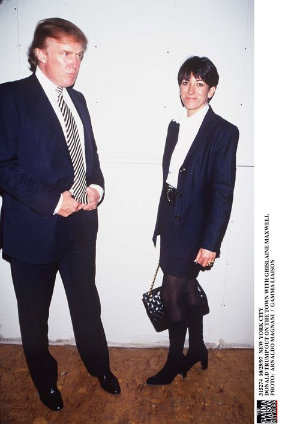

FBI use of warrantless wiretapping for limited purposes has received the approval of Presidents and Attorneys General consistently -- with only one three month exception in 1940 -- from 1931 to the present day. The legal theories advanced to justify the use of this technique, however, have been developed almost entirely by the executive branch itself, and have been "legitimized" largely by the reluctance of Congress and the Supreme Court to confront directly the arguments presented by executive officers.
The evolution of executive branch wiretapping policies from 1924 to 1975, and of the legislative and judicial reaction to these policies, is summarized below.
A. Pre-1940
Justice Department records indicate that the first time an Attorney General formally considered the propriety of warrantless wiretapping for either law enforcement or intelligence purposes, he found it to be "unethical:" in 1924, Attorney General Harlan Fiske Stone ordered a prohibition on the, use of this technique by Justice Department personnel, including those of the Bureau of Investigation (the original name of the Federal Bureau of Investigation). 18 To implement this policy, the Director of the Bureau of Investigation, with the approval of Stone's successor, Attorney General John G. Sargent, included the following section in the Bureau's Manual of Rules and Regulations:
Unethical tactics: Wiretapping, entrapment, or the use of any other improper, illegal, or unethical tactics in procuring information in connection with investigative activity will not be tolerated by the Bureau. 19
This prohibition only applied to the Justice Department. During the 1920's, wiretapping was extensively used by the Bureau of Prohibition, then a part of the Department of the Treasury, in its investigations of violations of the National Prohibition Act. In Olmstead v. United States, 277 U.S. 438 (1928), criminal defendants charged with violating this Act challenged the Bureau of Prohibition's use of this technique, but the challenge was unsuccessful. In that case, the Court held that evidence obtained from wiretapping which did not involve a physical intrusion or trespass was admissible and that wiretapping was not unconstitutional because the Fourth Amendment's protections did not apply to the seizure of conversations. The Bureau of Prohibition continued thereafter to employ this technique in its investigations, but the restrictive policy of the Justice Department remained unchanged for the next three years.
In 1930, the Bureau of Prohibition was transferred from the Treasury Department to the Justice Department, and the differing policies regarding wiretapping posed a problem for Attorney General William B. Mitchell. "[T]he present condition in the Department cannot continue," he wrote. "We cannot have one Bureau in which wiretapping is allowed and another in which it is prohibited." 20 He ultimately resolved his dilemma by permitting both the Bureau of Investigation and the Bureau of Prohibition to engage in wiretapping with senior level approval for limited purposes.
On February 19, 1931, instructions were issued at the direction of Attorney General Mitchell stating that no wiretap should be instituted without the written approval of the Assistant Attorney General in charge of the particular case, and that such approval would only be given in cases "involving the safety of victims of kidnappings, the location and apprehension of desperate criminals, and in espionage and sabotage and other cases considered to be of major law enforcement importance." 21 The Manual provision relating to wiretapping was consequently altered to read as follows:
Wiretapping: Telephone or telegraph wires shall not be tapped unless prior authorization of the Director of the Bureau has been secured. 22
Three years later, Congress' first pronouncement on wiretapping threatened to invalidate the policy enunciated by Mitchell: in June 1934, Congress enacted Section 605 of the Federal Communications Act, 47 U.S.C. 605, which made it a crime for "any person" to intercept and divulge or publish the contents of wire and radio communications. The Supreme Court construed this section in 1937 to apply to Federal agents and held that evidence obtained from the interception of wire and radio communications was inadmissible in court. 23 The Court elaborated on this decision two years later, holding that not only was evidence obtained from such interceptions inadmissible, but that evidence indirectly derived from such interceptions was equally inadmissible. 24
The Justice Department did not interpret these decisions as prohibiting the interception of wire communications per se, however; only the interception and divulgence of their contents outside the federal establishment was considered by the Department to be unlawful. 25 Even after the Nardone decisions, the Department continued to authorize warrantless wiretapping, albeit with the recognition that evidence obtained through the use of this technique would be inadmissible in court.
B. 1940 to 1968
1. The Roosevelt Administration
Shortly after taking office in 1940, Attorney General Robert H. Jackson reversed the existing Justice Department policy concerning wiretapping. By Order No. 3343, issued March 15, 1940, he prohibited all wiretapping by the Federal Bureau of Investigation, and the previously operative Manual section, which described wiretapping as an unethical practice, was reinstated at his direction.
Jackson's prohibition proved to be short-lived, however, for less than three months later President Franklin D. Roosevelt informed the Attorney General that he did not believe the Supreme Court intended the 1939 Nardone decision to prohibit wiretapping in "matters involving the defense of the nation." The President sent the following memorandum to Attorney General Jackson, granting him authority to approve wiretaps on "persons suspected of subversive activities against the Government of the United States:"
I have agreed with the broad purpose of the Supreme Court decision relating to wiretapping in investigations. The Court is undoubtedly sound both in regard to the use of evidence secured over tapped wires in the prosecution of citizens in criminal cases; and it is also right in its opinion that under ordinary and normal circumstances wiretapping by Government agents should not be carried on for the excellent reason that it is almost bound to lead to abuse of civil rights.
However, I am convinced that the Supreme Court never intended any dictum in the particular case which it decided to apply to grave matters involving the defense of the nation.
It is, of course, well known that certain other nations have been engaged in the organization of propaganda of so called "fifth column" in other countries and in preparation for sabotage, as well as in actual sabotage.
It is too late to do anything about it after sabotage, assassinations and "fifth column" activities are completed.
You are, therefore, authorized and directed in such cases as you may approve, after investigation of the need in each case, to authorize the necessary investigating agents that they are at liberty to secure information by listening devices directed to the conversation or other communications of persons suspected of subversive activities against the Government of the United States, including suspected spies. You are requested furthermore to limit these investigations so conducted to a minimum and to limit them insofar as possible to aliens. 26
In 1940 and 1941, several bills were introduced in Congress to authorize electronic surveillance for the purpose Roosevelt articulated in his letter to Jackson and for other purposes as well. One of these was a joint resolution introduced by Representative Emmanuel Celler authorizing the FBI "to conduct investigations, subject to the direction of the Attorney General, to ascertain, prevent, and frustrate any interference with the national defense by sabotage, treason, seditious conspiracy, espionage, violations of neutrality laws, or in any other manner." 27 This resolution would have lifted Section 605's ban on wiretapping for such investigations.
Both President Roosevelt and Attorney General Jackson endorsed such legislation. Roosevelt wrote to Representative Thomas Eliot on February 21, 1941, "I have no compunction in saying that wire tapping should be used against those persons, not citizens of the United States, and those few citizens who are traitors to their country, who today are engaged in espionage or sabotage against the United States . . ." 28
The Justice Department also informed Congress about the theory that had been developed to rationalize ongoing electronic surveillance under Section 605. Attorney General Robert Jackson advised Representative Hatton Summers on March 19, 1941, "The only offense under the present law is to intercept any communication and divulge or publish the same . . . Any person, with no risk of penalty, may tap telephone wires . . . and act upon what he hears or make any use of it that does not involve divulging or publication." 29
The import of these two statements was undoubtedly clear to the members of the House Judiciary Committee to whom they were addressed. The FBI would use wiretaps in the investigation of espionage and sabotage, despite the Federal Communications Act, since the results of the wiretaps would not be "divulged" outside the government. Legislation was needed only in order to use wiretap-obtained evidence or the fruits thereof in criminal prosecutions; a new statute was not necessary if the purpose of wiretapping was to gather intelligence that would not be used in court."
This policy was explicitly acknowledged several months later. After an incident where labor leader Harry Bridges discovered he was under surveillance, Attorney General Francis Biddle announced that FBI agents were, in fact, authorized to tap wires in cases involving espionage, sabotage, and serious crimes such as kidnapping after first securing the permission of the FBI Director and the Attorney General. 31 At the same time Attorney General Biddle advised FBI Director Hoover:
A good deal of my press conference yesterday was consumed in questions about wiretapping. I refused to comment on the Bridges incident, on the ground that it would be improper for me to comment on a case now pending before me.
I indicated that the stand of the Department would be, as indeed it had been for some time, to authorize wiretapping in espionage, sabotage, and kidnaping cases, where the circumstances warranted. I described Section 605 of the Communications Act, pointing out that under the Statute interception alone was not illegal; that there must be both interception and divulgence or publication; that the Courts had held only that evidence could not be used which resulted from wiretapping; that the Courts had never defined what divulgence and publication was; that I would continue to construe the Act, until the Courts decided otherwise, not to prohibit interception of communications by an agent, and his reporting the result to his superior officer, as infraction of the law; that although this could be said of all crimes, as a matter of policy wiretapping would be used sparingly, and under express authorization of the Attorney General. 32
2. The Truman Administration
The permissible scope of wiretapping was expanded after World War II by President Truman to include "cases vitally affecting the domestic security, or where human life is in jeopardy." The documentary evidence suggests, however, that this expansion was inadvertent on Truman's part and that he actually intended simply to continue in force the policies articulated by President Roosevelt in 1940.
By memorandum of July 17, 1946, Attorney General Tom Clark asked President Truman to renew Roosevelt's authorization for warrantless wiretapping issued six years earlier. Attorney General Clark quoted from that authorization but omitted the portion of Roosevelt's letter which read: "You are requested furthermore to limit these investigations so conducted to a minimum and to limit them insofar as possible to aliens." He then stated to President Truman:
It seems to me that in the present troubled period in international affairs, accompanied as it is by an increase in subversive activity here at home, it is as necessary as it was in 1940 to take the investigative measures referred to in President Roosevelt's memorandum. At the same time, the country is threatened by a very substantial increase in crime. While I am reluctant to suggest any use whatever of these special investigative measures in domestic cases, it seems to me imperative to use them in cases vitally affecting the domestic security, or where human life is in jeopardy.
As so modified, I believe the outstanding directive should be continued in force ... In my opinion the measures proposed are within the authority of law, and I have in the files of the Department materials indicating to me that my two most recent predecessors as Attorney General would concur in this view. 33
Truman approved the Attorney General's 1946 memorandum, but four years later aides to President Truman discovered Clark's incomplete quotation and the President considered returning to the terms of the original 1940 authorization. A February 2, 1950, memorandum located in the Truman Presidential Library reflects that discovery: George M. Elsey, the Assistant Counsel to the President, wrote Truman that
Not only did Clark fail to inform the President that Mr. Roosevelt had directed the F.B.I. to hold its wiretapping to a minimum, and to limit it insofar as possible to aliens, he requested the President to approve very broad language which would permit wiretapping in any case 'vitally affecting the domestic security, or where human life is in jeopardy.' This language is obviously a very far cry from the 1940 directive. 34
Elsey recommended in this memorandum that "the President consider rescinding his 1046 directive." An order was drafted which closely paralleled Roosevelt's 1940 directive, but for reasons that are unclear it was never issued. 35
The wiretapping standards that were expressed in Clark's 1946 memorandum and approved by President Truman were continued under Attorney General J. Howard McGrath. In a 1952 memorandum to J. Edgar Hoover, McGrath also made explicit the requirement of prior approval by the Attorney General, which had been informally instituted by Attorney General Biddle in 1941:
There is pending, as you know, before the Congress legislation that I have recommended which would permit wiretapping under appropriate safeguards and make evidence thus obtained admissible. As you state, the use of wiretapping is indispensable in intelligence coverage of matters relating to espionage, sabotage, and related security fields. Consequently, I do not intend to alter the existing policy that wiretapping surveillance should be used under the present high restrictive basis and when specifically authorized by me. 36
3. The Eisenhower Administration
The Government's perceived inability to prosecute in espionage and sabotage cases where electronic surveillance had been used, which stemmed from the Nardone decisions in the late 1930's, Ied Attorney General Herbert Brownell to press strongly in 1954 for legislation to authorize "national security" wiretapping without judicial warrant. Rejecting arguments for a warrant requirement, Brownell contended that responsibility should be centralized in the hands of the Attorney General. 37 He also saw a "strong danger of leaks if application is made to a court, because in addition to the judge, you have the clerk, the stenographer and some other officer like a law assistant or bailiff who may be apprised of the nature of the application." 38 Discussing the objectives of "national security" wiretapping, Brownell observed:
We might just as well face up to the fact that the communists are subversives and conspirators working fanatically in the interests of a hostile foreign power ...
It is almost impossible to "spot" them since they no longer use membership cards or other written documents which will identify them for what they are. As a matter of necessity, they turn to the telephone to carry on their intrigue. The success of their plans frequently rests upon piecing together shreds of information received from many sources and many nests. The participants in the conspiracy are often dispersed and stationed in various strategic positions in government and industry throughout the country. Their operations are not only internal. They are also of an international and intercontinental character ...
It is therefore neither reasonable, nor realistic that Communists should be allowed to have the free use of every modern communication device to carry out their unlawful conspiracies, but that law enforcement agencies should be barred from confronting these persons with what they have said over them. 39
The House Judiciary Committee accepted Brownell's reasoning and reported out warrantless wiretapping legislation in 1954. 40 The full House, however, rejected the arguments in support of warrantless wiretapping and amended the bill on the floor to require a prior judicial warrant. 41 Without the support of the Justice Department, the House bill received no formal consideration in the Senate and no serious attempt was again made to enact electronic surveillance legislation until the 1960s.
Because of Congressional deliberations regarding wiretapping, J. Edgar Hoover wrote a memorandum to Attorney General Brownell on March 8, 1955, in which he outlined the current FBI policy in that area and stated that this policy was based on the May 21, 1940, letter from President Roosevelt and the July 17, 1946, memorandum from Attorney General Clark, which was signed by President Truman. 42 Specifically, he noted that the current policy permitted wiretapping, with the prior written approval of the Attorney General, in "cases vitally affecting the domestic security or where human life is in jeopardy."
Hoover also asked Brownell if he believed the Roosevelt and Truman statements constituted sufficient legal authority for wiretapping at the present time, and suggested that if Brownell did not believe they did, he "may want to present this matter to President Eisenhower to determine whether he holds the same view with respect to the policies of the Department of Justice with respect to wiretapping." 43 Brownell responded that he did not believe it necessary to obtain further approval of the existing practice from President Eisenhower as he was of the opinion that President Roosevelt's approval was sufficient. The Attorney General wrote, in part:
In view of the fact that I personally explained to the President, the Cabinet, the National Security Council and the Senate and House Judiciary Committees during 1954 the present policy and procedure on wiretaps, at which time I referred specifically to the authorization letter to the Attorney General from President F. D. Roosevelt, I do not think it necessary to reopen the matter at this time. . . . You will also remember that I made several public speeches during 1954 on the legal basis for the Department of Justice policy and procedure on wiretaps. 44
4. The Kennedy Administration
The existing policy and procedures for wiretapping continued in force through the Kennedy administration. On March 13, 1962, Attorney General Robert F. Kennedy issued Order No. 263-62, which finally rescinded Attorney General Jackson's March 15, 1940, order prohibiting wiretapping, and noted that this rescission was necessary "in order to reflect the practice which has been in effect since May 21, 1940." 45 This order also changed the Manual provisions relating to wiretapping to formally permit use of this technique and reaffirmed the vitality of "[e]xisting instructions to the Federal Bureau of Investigation with respect to obtaining the approval of the Attorney General for wiretapping ...." 46
5. The Johnson Administration
During the Johnson administration, the procedures for conducting wiretaps were tightened and the criteria for use of this technique were altered. Until March 1965, no requirement had existed for the periodic re-authorization of wiretaps by the Attorney General: some surveillances consequently remained in operation for years without review. 47 On March 30, 1965, Attorney General Katzenbach therefore suggested to J. Edgar Hoover that authorizations for individual telephone taps should be limited to six months, after which time a new request should be submitted for the Attorney General's reauthorization. 48 This suggestion was immediately implemented by the FBI.
One week later, on April 8,1965, Katzenbach sent to the White House a proposed Presidential directive to all federal agencies on wiretapping. 49 This directive, formally issued by President Lyndon Johnson in slightly modified form on June 30, 1965, 50 revoked Attorney General Tom Clark's wiretapping standard of "cases vitally affecting the domestic security or where human life is in jeopardy." The new directive forbade the nonconsensual interception of telephone communications by federal personnel within the United States "except in connection with investigations related to the national security," and then only after first obtaining the written approval of the Attorney General. The President stated, in part:
I am strongly opposed to the interception of telephone conversations as a general investigative technique. I recognize that mechanical and electronic devices may sometimes be essential in protecting our national security. Nevertheless, it is clear that indiscriminate use of these investigative devices to overhear telephone conversations, without the knowledge, or consent of any of the persons involved, could result in serious abuses and invasions of privacy. In my view, the invasion of privacy of communications is a highly offensive practice which should be engaged in only where the national security is at stake. To avoid any misunderstanding on this subject in the Federal Government, I am establishing the following basic guidelines to be followed by all government agencies:
(1) No federal personnel is to intercept telephone conversations within the United States by any mechanical or electronic device, without the consent of one of the parties involved (except in connection with investigations related to the national security.)
(2) No interception shall be undertaken or continued without first obtaining the approval of the Attorney General.
(3) All federal agencies shall immediately conform their practices and procedures to the provisions of this order. 51
Despite this Presidential approval of "national security" wiretapping, Director Hoover informed Katzenbach on September 14, 1965, that he was restricting or eliminating the use of a number of investigative techniques by the Bureau
in view of the present atmosphere, brought about by the unrestrained and injudicious use of special investigative techniques by other agencies and departments, resulting in congressional and public alarm and opposition to any activities which could in any way be termed an invasion of privacy.
With regard to wiretapping, Hoover wrote that
[w]hile we have traditionally restricted wiretaps to internal security cases and an occasional investigation involving possible loss of life, such as kidnapping, I have further cut down on wiretaps and I am not requesting authority for any additional wiretaps.. 52
Katzenbach responded on September 27, with a memorandum setting forth what he believed to be appropriate guidelines for the use of the techniques Hoover had restricted or eliminated. He noted that "[t]he use of wiretaps and microphones involving trespass present more difficult problems because of the inadmissibility of any evidence obtained in court cases and because of current judicial and public attitudes regarding their use." 53 He continued:
It is my understanding that such devices will not be used without my authorization, although in emergency circumstances they may be used subject to my later ratification. At this time I believe it is desirable that all such techniques be confined to the gathering of intelligence in national security matters, and I will continue to approve all such requests in the future as I have in the past. I see no need to curtail any such activities in the national security field.
It is also my belief that there are occasions outside of the strict definition of national security (for example, organized crime) when it would be appropriate to use such techniques for intelligence purposes. However, in light of the present atmosphere, I believe that efforts in the immediate future should be confined to national security. I realize that this restriction will hamper our efforts against organized crime and will require a redoubled effort on the part of the Bureau to develop intelligence through other means. 54
While suggesting the possibility that warrantless wiretapping might appropriately be used at some future time in cases involving organized crime, in short, Katzenbach endorsed its use only in "the national security field."
On November 3, 1966, Attorney General Ramsey Clark circulated a memorandum to all United States Attorneys in which he reiterated the "national security" limitation on wiretapping contained in President Johnson's June 30, 1965, directive and in Katzenbach's September 27, 1965, letter to Hoover. He quoted as follows from the 1966 Supplemental Memorandum to the Supreme Court that had been filed in Black v. United States, 55 a criminal case which involved a microphone installation:
Present practice, adopted in July 1965 in conformity with the policies declared by President Johnson on June 30, 1965, for the entire Federal establishment, prohibits the installation of listening devices in private areas (as well as the interception of telephone and other wire communications) in all instances other than those involving the collection of intelligence affecting the national security. The specific authorization of the Attorney General must be obtained in each instance when this exception is invoked. Intelligence data so collected will not be available for investigative or litigative purposes. 56
Clark's subsequent guidelines for the use of wiretapping and electronic eavesdropping, issued in June 1967 to the heads of executive agencies and departments, reaffirmed the prohibition of wiretapping in all but "national security" cases. 57
C. The Omnibus Crime Control Act of 1968
Although Justice Department policy regarding wiretapping remained essentially constant from 1965 to 1968, two Supreme Court decisions during this period significantly altered the constitutional framework for electronic surveillance generally. In Berger v. New York, 388 U.S. 41 (1967), and Katz v. United States, 389 U.S. 347 (1967), the Supreme Court overruled Olmstead and held that the Fourth Amendment did apply to searches and seizures of conversations and protected all conversations of an individual as to which he had a reasonable expectation of privacy. Katz explicitly left open the question, however, whether or not a judicial warrant was required in cases "involving the national security." 58
In part as a response to the Berger and Katz decisions, Congress enacted Title III of the Omnibus Crime Control and Safe Streets Act of 1968, 18 U.S.C. 2510-20. This Act established procedures for obtaining judicial warrants permitting wiretapping by government officials, 59 but the issue of "national security" wiretaps, which was left open in Katz, was similarly avoided. Section 2511 (3) of the Act stated that nothing in the Omnibus Crime Control Act or the Federal Communications Act of 1934 shall limit the constitutional power of the President in certain vaguely defined areas. The text of this subsection reads as follows:
(3) Nothing contained in this chapter or in section 605 of the Communications Act of 1934 (48 Stat. 1143, 47 U.S.C. 605) shall limit the constitutional powers of the President to take such measures as he deems necessary to protect the Nation against actual or potential attack or other hostile acts of a foreign power, to obtain foreign intelligence information deemed essential to the security of the United States, or to protect national security information against foreign intelligence activities. Nor shall anything contained in this chapter be deemed to limit the constitutional power of the President to take such measures as he deems necessary to protect the United States against the overthrow of the Government by force or other unlawful means, or against any other clear and present danger to the structure or existence of the Government. The contents of any wire or oral communication intercepted by authority of the President in the exercise of the foregoing powers may be received in evidence in any trial hearing or other proceeding only where such interception was reasonable, and shall not be otherwise used or disclosed except as is necessary to implement that power. 60
Significantly, this subsection dose not define the scope of the President's constitutional power in the national security area. As the Supreme Court noted in the Keith case, it is merely a statement that to the extent such powers exist, if they exist at all they override the procedural requirements for electronic surveillance that are outlined in this statute and in the 1934 Act. 61
D. Justice Department Criteria for Warrantless Wiretaps: 1968-1975
1. 1968-1972
In fields other than national security, the Justice Department was obligated to conform with the warrant procedures of the 1968 statute. But in national security cases, Justice Department policy permitted -- and the Act did not forbid -- warrantless wiretapping if the proposed surveillance satisfied one or more of the following criteria (which paralleled the standards enunciated in Section 2511 (3) ) :
(1) That it is necessary to protect the nation against actual or potential attack or any other hostile action of a foreign power;
(2) That it is necessary to obtain foreign intelligence information deemed essential to the security of the United States;
(3) That it is necessary to protect national security information against foreign intelligence activities;
(4) That it is necessary to protect the United States against the overthrow of the Government by force or other unlawful means; or
(5) That it is necessary to protect the United States against a clear or present danger to the structure or the existence of its Government. 62
Existing procedures for warrantless wiretaps requiring the prior written authorization of the Attorney General and subsequent reauthorization after 90 days remained in effect after the passage of the 1968 Act.
2. The Keith Case: 1972
On June 19, 1972, the Supreme Court decided the so-called Keith case, United States v. United States District Court, 407 U.S. 297 (1972), which held that the Fourth Amendment required prior judicial approval for "domestic security" electronic surveillance. The Court acknowledged the constitutional power of the President to "protect our Government against those who would subvert or overthrow it by unlawful means," 63 but it held that this power did not extend to the authorization of warrantless electronic surveillance directed at a domestic organization which was neither directly nor indirectly connected with a foreign power. 64
To conform with the Keith decision, the Justice Department thereafter limited warrantless wiretapping to cases involving a "significant connection with a foreign power, its agents or agencies." 65 A spokesman for the Department stated that such a connection might be shown by "the presence of such factors as substantial financing, control by or active collaboration with a foreign government and agencies thereof in unlawful activities directed against the Government of the United States." 65a
3. 1972-1975
The Justice Department's criteria for warrantless electronic surveillance were next modified in 1975. On June 24, 1975, Attorney General Edward H. Levi wrote Senators Frank Church and Edward Kennedy a letter in which he set forth his standards for warrantless wiretaps. He wrote, in part:
Under the standards and procedures established by the President, the personal approval of the Attorney General is required before any non-consensual electronic surveillance may be instituted within the United States without a judicial warrant. All requests for surveillance must be made in writing by the Director of the Federal Bureau of Investigation and must set forth the relevant factual circumstances that justify the proposed surveillance. Both the agency and the Presidential appointee initiating the request must be identified. Requests from the Director are examined by a special review group which I have established within the Office of the Attorney General. Authorization will not be granted unless the Attorney General has satisfied himself that the requested electronic surveillance is necessary for national security or foreign intelligence purposes important to national security.
In addition, the Attorney General must be satisfied that the subject of the surveillance is either assisting a foreign power or foreign-based political group, or plans unlawful activity directed against a foreign power or foreign-based political group. Finally, he must be satisfied that the minimum physical intrusion necessary to obtain the information will be used.
All authorizations are for a period of ninety days or less, and the specific approval of the Attorney General is again required for continuation of the surveillance beyond that period. The Attorney General has also been directed to review all electronic surveillance on a regular basis to ensure that the aforementioned criteria are satisfied. Pursuant to the mandate of United States v. United States District Court, electronic surveillance without a judicial warrant is not conducted where there is no foreign involvement. 66
In his public testimony before the Senate Select Committee on Intelligence Activities on November 6, 1975, Attorney General Levi again articulated current Department of Justice criteria for the approval of warrantless electronic surveillance. His formulation on that date returned to the three foreign-related categories which were based on Section 2511(3) of the 1968 Act, between 1972 and 1975, and a fourth category was also added. He stated:
Requests are only authorized when the requested electronic surveillance is necessary to protect the nation against actual or potential attack or other hostile acts of a foreign power; to obtain foreign intelligence deemed essential to the security of the nation; to protect national security information against foreign intelligence activities; or to obtain information certified as necessary for the conduct of foreign affairs matters important to the national security of the United States. 67
In his November 1975 testimony, the Attorney General also omitted the phrase in his June 24 letter which would have permitted warrantless electronic surveillance to be directed against American citizens or domestic groups which "plan[ned] unlawful activity directed against a foreign power or a foreign-based political group." Warrantless electronic surveillance, he said, would only be authorized when the subject of the proposed surveillance is "consciously assisting a foreign power or a foreign-based political group." The elimination of this category was apparently due to the decision of the Court of Appeals for the District of Columbia in Zweibon v. Mitchell, 516 F.2d 594 (D.C. Cir., 1975) (en banc), which held unconstitutional warrantless electronic surveillance of a domestic organization that was neither the agent of nor collaborator with a foreign power. 69
To date, neither Congress nor the Supreme Court has ever squarely faced the issue of whether the President may legitimately authorize warrantless electronic surveillance in "national security" cases involving the activities of foreign powers or their agents. As noted above, Section 2511(3) of the 1968 Omnibus Crime Control Act does not represent an affirmative grant of power to the President; it is simply an acknowledgement that Congress does not intend to limit or restrict whatever constitutional power the President may have in connection with "national security" cases. And the Supreme Court in Keith explicitly wrote that it only reached the question of the constitutionality of "national security" electronic surveillance in cases that involved "domestic security." While two federal circuit courts have determined that the President may constitutionally authorize warrantless electronic surveillance directed against foreign agents or collaborators, 70 the Supreme Court denied certiorari in both cases and has yet to decide the issue. In the absence of a mandate from Congress or the Supreme Court, the Justice Department has relied on these circuit court cases to support its current standards for warrantless electronic surveillance. 71
Legislation has recently been introduced, with the support of Attorney General Levi, to require a prior judicial warrant for electronic surveillance of an "agent of a foreign power." One of seven specially designated federal judges would be authorized to issue a warrant upon a finding that there is "probable cause to believe that the target of the electronic surveillance is a foreign power or an agent of a foreign power." The term "agent of a foreign power" is defined as
(i) a person who is not a permanent resident alien or citizen of the United States and who is an officer or employee of a foreign power; or
(ii) a person who, pursuant to the direction of a foreign power, is engaged in clandestine intelligence activities, sabotage, or terrorist activities, or who conspires with, assists or aids and abets such a person in engaging in such activities. 72
Thus, the legislation would not define the activities which could subject an American to electronic surveillance in terms of the federal criminal laws.
The new legislation also would not reach electronic surveillance of Americans abroad or other "facts and circumstances ... beyond the scope" of its provisions. Authority for such surveillance would continue to be based on whatever may be "the constitutional power of the President." In other respects, however, the proposed statute is a significant step towards effective regulation of FBI electronic surveillance.
III. PRESIDENTIAL AND ATTORNEY GENERAL AUTHORIZATION FOR WARRANTLESS MICROPHONE SURVEILLANCE
Warrantless microphone surveillance, while perhaps the most intrusive type of electronic surveillance, has received significantly less attention from Presidents and Attorneys General than has warrantless wiretapping. The first documentary indication that microphone surveillance was separately considered by any Attorney General is not found until 1952, when Attorney General McGrath prohibited its use in cases involving trespass. Two years later, Attorney General Brownell issued a sweeping authorization for microphone surveillance, even when it involved physical trespass, in cases where the Bureau determined such surveillance was in the national interest; no prior approval by the Attorney General was required. This policy continued until 1965, when microphone surveillance was placed on an equal footing with telephone surveillance, and since that time the policies for both these forms of electronic surveillance have remained identical.
A. Pre-1952
1. 1931 to 1942
The legal status of microphone, as opposed to telephone, surveillance was not addressed by the Supreme Court until 1942, and it was not addressed by Congress until 1968. It is perhaps for this reason that the Justice Department developed no distinct policy on microphone surveillance during the first half of the century.
The Olmstead case in 1928 involved a wiretap rather than a microphone surveillance. Similarly, the Federal Communications Act of 1934 was addressed only to the interception of wire and radio communications; microphone surveillance was not within its ambit. Neither Attorney General Mitchell's nor Attorney General Jackson's instructions on wiretapping in 1931 and 1940, respectively, encompassed microphone surveillance, and President Roosevelt's 1940 authorization and President Truman's 1946 authorization were also limited to wiretapping.
An internal Justice Department memorandum from William Olson, former Assistant Attorney General for Internal Security, to Attorney General Elliot Richardson notes that "[d]uring the period 1931-1940, it appears safe to assume that microphone surveillances were utilized under the same standards as telephone surveillances -- 'in those cases involving the safety of the victims of kidnapping, the location and apprehension of desperate criminals, and in espionage, sabotage, and other cases considered to be of major law enforcement importance."' 73
2. 1942-1952
In 1942, the Supreme Court decided Goldman v. United States, 316 U.S. 129, which held in the context of a criminal case that a microphone surveillance was constitutional when it did not involve physical trespass. Thereafter, the test for the validity of a microphone surveillance appeared to be whether or not it involved a trespass. 74 There is no evidence, however, that an Attorney General gave any firm guidance to the FBI in this area until 1952. Although there did not appear to be any distinct articulated Justice Department policy on microphone surveillance for a decade after Goldman, J. Edgar Hoover summarized FBI practice since Goldman in a 1951 memorandum to Attorney General McGrath:
As you are aware, this Bureau has also employed the use of microphone installations on a highly restrictive basis, chiefly to obtain intelligence information. The information obtained from microphones, as in the case of wiretaps, is not admissible in evidence. In certain instances, it has been possible to install microphones without trespass, as reflected by opinions rendered in the past by the Department on this subject matter. In these instances, the information obtained, of course, is treated as evidence and therefore is not regarded as purely intelligence information.
As you know, in a number of instances it has not been possible to install microphones without trespass. In such instances the information received therefrom is of an intelligence nature only. Here again, as in the use of wiretaps, experience has shown us that intelligence information highly pertinent to the defense and welfare of this nation is derived through the use of microphones. 76
B. 1952 to 1965
The first clear instruction to the FBI from an Attorney General regarding microphone surveillance was issued in 1952. On February 26, 1952, Attorney General McGrath wrote to Mr. Hoover as follows:
The use of microphone surveillance which does not involve a trespass would seem to be permissible under the present state of the law, United States v. Goldman, 316 U.S. 129. Such surveillances as involve trespass are in the area of the Fourth Amendment, and evidence so obtained and from leads so obtained is inadmissible.
The records do not indicate that this question dealing with microphones has ever been presented before; therefore, please be advised that I cannot authorize the installation of a microphone involving a trespass under existing law. 77
As a result of this instruction, Hoover declared in a March 4, 1952, internal FBI memorandum that he would similarly not approve any request for a microphone surveillance in a case involving trespass. 78
The FBI evidently considered this policy on microphone surveillance to be too restrictive, however, especially in the area of internal security. 79 Under pressure from the FBI -- and despite the 1954 Supreme Court decision in Irvine v. California 80 -- Attorney General Brownell reversed his predecessor's position. On May 22, 1954, he wrote Director Hoover:
The recent decision of the Supreme Court entitled Irvine v. California, 347 U.S. 128, denouncing the use of microphone surveillances by city police in a gambling case, makes appropriate a reappraisal of the use which may be made in the future by the Federal Bureau of Investigation of microphone surveillance in connection with matters relating to the internal security of the country.
It is clear that in some instances the use of microphone surveillance is the only possible way of uncovering the activities of espionage agents, possible saboteurs, and subversive persons. In such instances I am of the opinion that the national interest requires that microphone surveillance be utilized by the Federal Bureau of Investigation. This use need not be limited to the development of evidence for prosecution. The FBI has an intelligence function in connection with internal security matters equally as important as the duty of developing evidence for presentation to the courts and the national security requires that the FBI be able to use microphone surveillance for the proper discharge of both such functions. The Department of Justice approves the use of microphone surveillance by the FBI under these circumstances and for these purposes.
I do not consider that the decision of the Supreme Court in Irvine v. California, supra, requires a different course. That case is readily distinguishable on its facts. The language of the Court, however, indicates certain uses of microphones which it would be well to avoid, if possible, even in internal security investigations. It is quite clear that in the Irvine case the Justices of the Supreme Court were outraged by what they regarded as the indecency of installing a microphone in a bedroom. They denounced the utilization of such methods of investigation in a gambling case as shocking. The Court's action is a clear indication of the need for discretion and intelligent restraint in the use of microphones by the FBI in all cases, including internal security matters. Obviously, the installation of a microphone in a bedroom or in some comparably intimate location should be avoided wherever possible. It may appear, however, that important intelligence or evidence relating to matters connected with the national security can only be obtained by the installation of a microphone in such a location. It is my opinion that under such circumstances the installation is proper and not prohibited by the Supreme Court's decision in the Irvine case.
... It is realized that not infrequently the question of trespass arises in connection with the installation of a microphone.
The question of whether a trespass is actually involved and the second question of the effect of such a trespass upon the admissibility in court of the evidence thus obtained, must necessarily be resolved according to the circumstances of each case. The Department in resolving the problems which may arise in connection with the use of microphone surveillance will review the circumstances in each case in light of the practical necessities of investigation and of the national interest which must be protected. It is my opinion that the Department should adopt that interpretation which will permit microphone coverage by the FBI in a manner most conducive to our national interest. I recognize that for the FBI to fulfill its important intelligence function, consideration of internal security and the national safety are paramount and, therefore, may compel the unrestricted use of this technique in the national interest. 81
Brownell cited no legal support for this sweeping authorization. By not requiring prior approval by the Attorney General for specific microphone installations, moreover, he largely undercut the policy which had developed for wiretapping. The FBI in many cases could obtain equivalent coverage by utilizing bugs rather than taps and would not be burdened with the necessity of a formal request to the Attorney General.
On May 4, 1961, Director Hoover wrote a memorandum to Deputy Attorney General Byron R. White, in which he informed the Department that the FBI's policy with regard to microphone surveillance was based on the 1954 Brownell memorandum quoted above. Hoover stated that Brownell had "approved the use of microphone surveillances with or without trespass," and noted that "in the internal security field we are utilizing microphone surveillances on a restricted basis even though trespass is necessary to assist in uncovering the activities of [foreign] intelligence agents and Communist Party leaders." He continued: "In the interests of national safety, microphone surveillances are also utilized on a restricted basis, even though trespass is necessary, in uncovering major criminal activities. We are using such coverage in connection with our investigations of clandestine activities of top hoodlums and organized crime." 82 This memorandum apparently did not lead to further reconsideration of microphone surveillance policy by Justice Department officials, and the practice articulated by Hoover continued without change until 1965. 82a
The Department later summarized the policy during these years in the Supplemental Memorandum to the Supreme Court in the case of Black v. United States, 83 referred to above.
The memorandum read, in part: "Under Department practice in effect for a period of years prior to 1963, and continuing until 1965, the Director of the Federal Bureau of Investigation was given authority to approve the installation of devices such as that in question [a microphone] for intelligence (and not evidentiary) purposes when required in the interest of internal security or national safety, including organized crime, kidnappings, and matters wherein human life may be at stake. Acting on the basis of the aforementioned Departmental authorization, the Director approved installation of the device involved in the instant case." 84
C. 1965 to the Present
On March 30, 1965, when Attorney General Katzenbach instituted the six month limitation on telephone taps, he also expressed the view that proposals for microphone surveillances should be submitted for the Attorney General's prior approval and that this type of surveillance should also be limited to six month periods. 85 While Attorneys General since the 1950s had sporadically given their prior approval to microphone surveillances, the requirement of such approval had never been a consistent policy of the Justice Department, as it had been with respect to wiretapping for more than two decades. 85a With the immediate implementation of Katzenbach's suggestions, therefore, the Justice Department procedures with regard to both wiretapping and microphone surveillance became identical.
President Johnson's June 30, 1965, directive to all federal agencies, which formally prohibited all wiretapping except in connection with "national security" investigations and then only with the prior approval of the Attorney General, referred to the issue of microphone surveillances only tangentially. It read:
Utilization of mechanical or electronic devices to overhear nontelephone conversations is an even more difficult problem, which raises substantial and unresolved questions of constitutional interpretation. I desire that each agency conducting such investigations consult with the Attorney General to ascertain whether the agency's practices are fully in accord with the law and with a decent regard for the rights of others. 86
Apparently, J. Edgar Hoover did not find his "consultations" with the Attorney General to be encouraging. It is noted above that on September 14, 1965, the Director informed Katzenbach that, "[i]n accordance with the wishes you have expressed during various recent conversations with me" and because of public alarm at alleged invasions of privacy by Federal agencies, he was severely restricting or eliminating the use of a number of investigative techniques. Specifically with regard to microphone surveillance, he wrote that "we have discontinued completely the use of" this technique -- despite Katzenbach's approval of the limited use of microphone surveillance in March of that year and despite the absence of a prohibition oil the use of the technique in the President's June directive.
It is also noted above in Section II that Katzenbach responded about two weeks later with a memorandum setting forth what he believed to be appropriate guidelines for the use of the techniques Hoover had restricted or eliminated. He gave virtually unrestricted authorization to the FBI to conduct microphone surveillances not involving trespass, writing, "[w]here such questions [i.e., of trespass] are not raised, I believe the Bureau should continue to use these techniques in cases where you believe it appropriate without further authorization from me." 88 With regard to microphone surveillances that did involve trespass, he again treated the use of this technique in a fashion identical to warrantless wiretapping: for both he required his prior approval (except in "emergency circumstances") and for both the legitimate purposes were limited to the gathering of intelligence in "national security matters." While he expressed the belief that both wiretaps and microphone surveillances involving trespass might at some future time be appropriate to use in the area of organized crime, he gave no authority for such use at that time.
The policy set out in Katzenbach's September 27 letter to Hoover was reaffirmed by the Justice Department at least three times prior to the 1967 Katz decision and the passage of the Omnibus Crime Control Act of 1968.
In the July 1966 Supplemental Memorandum filed in the Black case, the Justice Department stated that "[p]resent Departmental practice, adopted in July 1965, prohibits the use of such listening devices in all instances other than those involving the collection of intelligence affecting the national security. The specific authorization of the Attorney General must be obtained in each instance when this exception is involved." This language was quoted by Attorney General Ramsey Clark in his November 3, 1966 memorandum to all United States Attorneys 81 and reaffirmed in Clark's 1967 memorandum to heads of executive departments. 90
The Katz decision, in December 1967, held that a warrantless microphone installation on the side of a public telephone booth was unconstitutional in the context of a criminal case. Thus, Justice Department policy prohibiting microphone surveillances in non-"national security" cases became a constitutional requirement as well -- regardless of whether or not the installation involved trespass. 90a As noted above, however, the issue of electronic surveillance in "national security" cases was not addressed by the Supreme Court in Katz.
The 1968 Omnibus Crime Control Act, unlike the Federal Communications Act of 1934, applies to both telephone wiretaps and microphone surveillances. Because of this, and because the Justice Department policy regarding both techniques became virtually identical in 1965, the description of the evolution of wiretapping policy over the past decade applies equally to the technique of microphone surveillance. In recent years, for all practical purposes, there has been but a single policy for both forms of electronic surveillance.
IV. AN OVERVIEW OF FBI ELECTRONIC SURVEILLANCE PRACTICES
The preceding two sections have dealt with the legal framework and Justice Department policy regarding warrantless wiretapping and bugging. This section attempts to provide an overview of FBI electronic surveillance practices. Without purporting to explore the full range of FBI electronic surveillance practices, a limited number of key areas are highlighted in order to suggest the manner in which electronic surveillances are conducted. More specifically, this section discusses the frequency of FBI use of this technique since 1940; internal FBI restrictions on the maximum number of simultaneous electronic surveillances; the method by which requests have been initiated and approved; the manner in which wiretaps and bugs have been installed; the means by which the FBI has responded to the legal obligation to produce electronic surveillance records in criminal trials; and the traditional reluctance of the FBI to permit outside scrutiny of its electronic surveillance practices. A discussion of the application of the Justice Department's standards for wiretapping and bugging to particular cases is reserved for Section VII below.
A. Extent of FBI Electronic Surveillance: 1940-1975
While FBI use of warrantless electronic surveillance has not been as pervasive as many other investigative techniques such as informants, both wiretaps and bugs have been strategically utilized in a large number of intelligence investigations. The Bureau's reliance on these techniques was greatest during World War II and the immediate postwar period. During the 1960s and early 1970s, internal FBI policy placed a ceiling on the number of simultaneous electronic surveillances conducted by the Bureau. This self -restriction did not act to curtail all use of this technique, but it apparently frustrated intelligence officials in the FBI and other agencies who sought -- unsuccessfully -- a change in this policy through the Huston Plan in 1970. In recent years, Judicial decisions have severely restricted the use of warrantless electronic surveillance against domestic targets, although wiretaps and bugs still continue to be commonly used in the area of foreign intelligence and counterintelligence.
1. Annual Totals for Wiretaps and Microphone Installations
According to Justice Department records, the annual totals of warrantless FBI wiretaps and microphones in operation between 1940 and 1974 were as follows:
Year
Telephone wiretaps
Microphones
1940
6
6
1941
67
25
1942
304
88
1943
475
193
1944
517
198
1945
519
186
1946
364
85
1947
374
81
1948
416
67
1949
471
75
1950
270
61
1951
285
75
1952
285
63
1953
300
52
1954
322
99
1955
214
102
1956
164
71
1957
173
73
1958
166
70
1959
120
75
1960
115
74
1961
140
85
1962
198
100
1963
244
83
1964
260
106
1965
233
67
1966
174
10
1967
113
0
1968
82
9
1969
123
14
1970
102
19
1971
101
16
1972
108
32
1973
123
40
1974
190
42
Attorney General Edward H. Levi testimony, Nov. 6, 1975, hearings, vol. 5, pp. 68-70. The statistics before 1968 encompass electronic surveillances for both intelligence and law enforcement purposes. Those after 1968, when the Omnibus rime Control Act was enacted, include surveillances for intelligence purposes only; electronic surveillances for law enforcement purposes were thereafter subject to the warrant procedures required by the Act.
Comparable figures for the year 1975, through October 29, are: 121 telephone wiretaps and 24 microphone installations. 91
It should be noted that these figures are cumulative for each year; that is, a wiretap on an individual in one year which continued into a second year is recorded in both years. The figures are also duplicative to some extent, since a telephone wiretap or microphone which was installed, then discontinued, and later reinstated is counted as a new surveillance upon reinstatement.
2. FBI Policy on the Maximum Number of Simultaneous Electronic Surveillances
From at least the early 1960s, J. Edgar Hoover placed a ceiling on the number of warrantless electronic surveillances that could be in operation at any one time. As expressed by Charles D. Brennan, who became Assistant Director in charge of the FBI's Domestic Intelligence Division in 1970, ". . . there was always a maximum figure which you were not allowed to exceed, and if you recommended an additional wiretap, it had to be done with the recognition that in another area you would take one off." 92
Until the mid-1960s, the maximum figure was approximately eighty. 93 In response to the 1965 and 1966 investigation by the Senate Subcommittee on Administrative Practice, and Procedure into the use of electronic surveillance and other techniques by federal agencies, however, Hoover instructed Bureau officials to reduce by one half the number of warrantless electronic surveillances then in effect. According to Brennan, the ceiling was lowered out of a concern that this subcomittee's "inquiry might get into the use of that technique by the FBI . . . ." 94 The number of warrantless wiretaps in the "security field" was subsequently reduced from 76 to 38, and remained close to the latter figure for several years thereafter. 95
Intelligence officials both within the FBI itself and in other intelligence agencies clearly felt constrained by Hoover's policy, and through the Huston Plan in 1970 they attempted to raise or eliminate the internal limitations on the number of simultaneous electronic surveillances. The Report that was presented to President Nixon in June of 1970 noted: "The limited number of electronic surveillances and penetrations substantially restricts the collection of valuable intelligence information of material important to the entire intelligence community," 96 and it presented the President with the option of modifying "present procedures" to "permit intensification of coverage of individuals and groups in the United States who pose a major threat to the internal security." 97 This option was specifically recommended to the President by Tom Charles Huston. 98
Director Hoover nonetheless remained strongly opposed to lifting restraints on the FBI's use of warrantless electronic surveillance. He added a footnote to the electronic surveillance section of the Huston Report which read:
The FBI does not wish to change its present procedure of selective coverage of major internal security threats as it believes this coverage is adequate at this time. The FBI would not oppose other agencies seeking authority of the Attorney General for coverage required by them and thereafter instituting such coverage themselves. 99
In part because of Hoover's opposition to the Huston Plan, President Nixon, who had originally endorsed the recommendations, withdrew his approval 100 and the maximum number of electronic surveillance stayed essentially constant until 1972.
The policy of placing an arbitrary ceiling on simultaneous warrantless electronic surveillances was apparently terminated after J. Edgar Hoover's death in 1972. With the apparent lifting of this self-restriction, the number of foreign related surveillances increased 101 -- a fact which is reflected in the annual totals listed above.
B. Requests, Approvals, and Implementation
1. The Request and Approval Process
Recommendations for the use of electronic surveillance in particular cases are typically initiated at the field level of the Bureau, although at times they have originated with the Attorney General, the White House, and the head of another agency. 102 If Headquarters approves a field request, the appropriate field office then conducts a feasibility study to determine whether or not the surveillance can be conducted with complete security. Upon a favorable security finding, the Director personally sends the Attorney General a formal request for coverage, setting forth the name and address of the person or persons to be monitored as well as pertinent facts about the case. 103
According to former Attorney General William Saxbe, the "request must contain very detailed information." 104 In numerous cases in the past, however, the information supplied in the request has been minimal at best. For example, several of the so-called "17 wiretaps" during the Nixon administration were approved by Attorney General John Mitchell despite the lack of any data in the formal requests to support the need for the technique's use. 105 It is possible that these and similarly defective requests submitted to other Attorneys General were supplemented by information imparted orally, but, as the District of Columbia Court of Appeals stated in Zweibon v. Mitchell:
. . . we nevertheless note the possibility of abuse when there are no written records of the justifications for instituting a surveillance. Such lack of records allows a search to be justified on information subsequently obtained from the surveillance and permits the assertion that more information was relied on than was in fact the case. Prior judicial approval for wiretapping, among other benefits, of course freezes the record as to the data upon which the surveillance was based. 106
2. Implementation of Wiretaps and Bugs
If the Director receives the written approval of the Attorney General for a particular surveillance, the field office is instructed to implement it. In the case of wiretapping, an agent from the field office generally contacts a representative of the local telephone company who acts as Government liaison. One such telephone company representative in Washington, D.C., testified that he was simply orally advised by an agent of the FBI's Washington Field Office that authority had been granted to tap a particular telephone number. 107
According to the Washington Field Office supervisor in charge of the employees who implemented and monitored "national security" wiretaps, the telephone company representative would then assign "pair numbers" in the cable connecting the FBI's Washington, D.C. Field Office with the company's central office in the city, and the recording and monitoring devices would be attached to the assigned cable pair at the field office, where the Bureau monitoring agents were located. After the supervisor verified the wiretap by determining that the intercepted line was the correct one, he would give the tap a symbol number to be used in lieu of the words "telephone surveillance" in any later communication. 108
Generally, two agents would conduct the monitoring operation in eight-hour shifts. These monitors typically tape recorded all calls on the line and added supplementary notes concerning such items as the identity of the caller and the subject of the conversation if unclear from the tape. 109 Each day, they typed up log summaries, which included anything they believed was consequential. Because the monitors were not told specifically what to look for, however, the summaries tended to be over-inclusive rather than under-inclusive: the supervising agent noted, for instance, that any information obtained about the subject's sex life or drug use would usually be included in the log summaries. 110 He also stated that he disliked having empty summaries for any day, and so issued a general instruction to his monitors that an attempt should be made to include at least one item in the log each day. 111 Even if there was no activity, a monitor would still have to file a log summary stating "no activity" or "no pertinent activity." 112
A special squad within the Washington Field Office was responsible for implementing microphone installations. According to one Bureau agent who served on this squad for a number of years, the authorizing document (which, he said, invariably bore J. Edgar Hoover's initials) would be transmitted to the field office and shown to him and the other members of the squad prior to the installation. This agent stated that in the majority of cases he was able to obtain a key to the target's premises, either from a landlord, hotel manager, or neighbor. In other cases, he simply entered through unlocked doors. He stated that only in a small proportion of the cases to which he was assigned was it necessary to pick a lock. 113 Once the bug was planted, it was generally necessary for Bureau agents to monitor the conversations from a location close to the targeted premises.
C. The ELSUR Index
In the mid-1960s, the Justice Department established a policy of filing disclosures in the courts in cases where criminal defendants had been monitored by electronic surveillance. 114 As a result, it became necessary to establish a general index of the names of all persons overheard on such surveillances. In September 1966, the Assistant Attorney General of the Criminal Division informed Director Hoover that:
In recent months the Department has been confronted with serious problems concerning the prospective or continued prosecution of individuals who have been the subject of prior electronic surveillance. These problems have sometimes arisen comparatively late in the investigative or prosecutive process. For example, we recently were forced to close an important investigation involving major gambling figures in Miami because we were advised that the evidence necessary to obtain a conviction was tainted....
In view of these experiences, it appears necessary and desirable that the Department have full knowledge of the extent of any device problem at as early a stage of preparation for prosecution as possible in order to determine whether a particular case may or may not be tainted or what responses will be necessary with respect to a motion under Rule 16 to produce statements.
Accordingly, I feel it is imperative for us to establish between the Bureau and the Department . . . some sort of "early warning" system. This may require the Bureau to set up and maintain appropriate indices with respect to electronic surveillance and the materials derived therefrom.
I have discussed this suggestion with the Attorney General and the Deputy Attorney General. Both feel that the establishment of such indices is necessary. . . 115
In fact, for a number of years prior to this suggestion the Bureau had maintained rudimentary indices within each field office, although there was no central index and those which existed on the field level were believed to be inadequate by Justice Department officials. Because Hoover believed the existing system was adequate, he reacted defensively when Assistant Attorney General Fred Vinson requested a conference between the Department and the Bureau to discuss the details of the Justice Department's proposal. The Director penned the following notation on the Vinson memorandum: "Since [an indexing system] is already operating, I see no need for such a conference.... Tell him it is already done and see that it is meticulously operated." 116
About one week later, however, Hoover directed officials at Headquarters to send a teletype to all field offices which had conducted electronic surveillances since January 1960. 117 These offices were instructed to transmit to Headquarters the names of all individuals whose voices were were monitored through electronic surveillance any time within the previous six years, as well as the initial date of the monitoring and the identity of the subject against whom the installation was directed. Each office was also informed that it had a continuing obligation to submit to Headquarters on a weekly basis the names of any additional individuals monitored in the future. 118
The Bureau has since maintained a central index at Headquarters, referred to as the ELSUR Index, which contains the names of all individuals overheard, even incidentally, on both court-ordered and warrantless electronic surveillances. Additional information such as the initial date of the monitoring and the identity of the target of the surveillance is also included in the index. The method by which this index has been compiled, however, raises some questions as to its accuracy and completeness.
Although the ELSUR Index covers the period January 1, 1960, to the present, for example, the FBI's response to a request by the Senate Select Committee for the date and location of all electronic overhears of Martin Luther King, Jr., conceded that retrieval of some of the overhears of King may be impossible. Three factors contributing to this difficulty were set forth by the Bureau:
1. Prior to issuing instructions to field offices in October, 1966, directing them to submit the names of all individuals whose voices have been monitored through a microphone installed or a telephone surveillance operated by the offices anytime since 1/1/60, additional surveillances on which King was monitored are unaccountable for as these surveillance logs may have been destroyed.
2. Prior to the instructions, personnel handling logs may have felt that overhears were of no substance or significance and consequently were not recorded.
3. The setting up of the ELSUR indices was a fieldwide project of large proportions and the instructions going to the field 10/5/66, were subject to broad interpretation, thus leading to possible misinterpretation of these instructions. Also, the factor of human error might be involved, thereby causing incomplete indices until the mechanics of the procedure were ironed out. 119
In fact, several surveillances of King himself which were known to personnel at FBI headquarters were apparently not reflected in the ELSUR Index.
One Special Agent's description of the preparation of ELSUR Index cards by FBI monitors suggests that the Index may be incomplete even for the post-1966 period. According to this agent, the FBI monitors are under instructions to prepare ELSUR Index cards for each identifiable person who speaks over the intercepted line. 120 Since the cards must contain the proper names of these individuals rather than phonetic spellings, and since this information is often difficult to obtain from an overhear alone, the monitors maintain a separate index of phonetic spellings prior to their determination of the proper spelling and its entry into the ELSUR Index. 121 The monitors then attempt to confirm the identity of the persons overheard from various research aids kept at their disposal, such as telephone books and Congressional and federal agency directories, and from discussions with the Bureau agents assigned to the substantive cases. In most cases, it is possible to make an accurate identification, but when this proves to be impossible, the names of unidentified individuals never get entered into the ELSUR Index. 122 Sometimes no entry has been made in the ELSUR Index even though positive identification was subsequently obtained. 122a Thus, a person could be overheard and this fact would not be revealed by a check of the ELSUR Index. 123
D. Congressional Investigation of FBI Electronic Surveillance Practices: The Long Subcommittee
The Bureau has traditionally been reluctant to permit Congressional investigation into its electronic surveillance practices. During the 1965 and 1966 inquiry by the Senate Subcommittee on Administrative Practice and Procedure into the use of electronic surveillance and other techniques by federal agencies, the FBI took affirmative steps to avoid substantial exposure of such practices to the subcommittee. The Bureau's attempt to thwart this subcommittee's investigation into the use of mail covers in February and March of 1965 is described in the Senate Select Committee's Report on CIA and FBI Mail Opening; 124 a similar attempt, apparently acquiesced in by the Subcommittee, was made in the area of electronic surveillance.
The Bureau's wary attitude toward this investigation is reflected in an internal memorandum dated August 2, 1965:
Senator [Edward V.] Long [of Missouri] is Chairman of the Senate Subcommittee on Administrative, Practice and Procedure. He has been taking testimony in connection with mail covers, wiretapping, and various snooping devices on the part of Federal agencies. He cannot be trusted and although the FBI has not become involved in these bearings, our name has been mentioned quite prominently on several occasions . . . . 125
When the Subcommittee's investigation began to touch on the Bureau's electronic surveillance practices in connection with organized crime several months later, Assistant Director Cartha DeLoach and another ranking Bureau official personally visited the Subcommittee's chairman, Senator Edward Long of Missouri, to explain to him the FBI's practices in the area of electronic surveillance. 126 This meeting lasted approximately one and one-half hours, 127 and there is no indication in the documentary record that any other briefing occurred prior to this visit. Nonetheless, an FBI memorandum notes that after the Senator "stated that unfortunately a number of people were bringing pressure on him to look into the FBI's activities in connection with usage of electronic devices," 128 DeLoach suggested to him:
that perhaps he might desire to issue a statement reflecting that he had held lengthy conferences with top FBI officials and was now completely satisfied, after looking into FBI operations, that the FBI had never participated in uncontrolled usage of wiretaps or microphones and that FBI usage of such devices had been completely justified in all instances. 129
According to this memorandum, Senator Long agreed, and when he "stated that he frankly did not know how to word such a release," 130 DeLoach "told him that we would be glad to prepare the release for him on a strictly confidential basis." 131
The next day, Bureau agents prepared such a statement for Senator Long, noting that "it is written from the viewpoint of the Senator and his Committee in that it indicates they have taken a long, hard look at the FBI and have found nothing out of order -- but that they will continue looking over our procedures and techniques from time to time in the future. Such an approach," it was stated, "is felt to be essential if the statement is to have the desired effect. A statement reflecting a stronger pro-FBI position might not only prove ineffective in thwarting those persons who are exerting pressure on the Subcommittee for a probe of our operations, but it could also bring criticism and additional pressure on Senator Long." 132 The statement written by the Bureau for Senator Long reads in full:
As Chairman of the Subcommittee on Administrative Practice and Procedure of the Senate Judiciary Committee, I instructed my staff at the outset of our activities to include the FBI, together with all other Federal agencies, among the organizations to be dealt with to ascertain if there had been invasion of privacy or other improper tactics in their operations. Toward this end, my staff and I have not only conferred at length with top officials of the FBI, but we have conducted exhaustive research into the activities, procedures, and techniques of this agency.
While my Staff and I fully intend to carefully review FBI operations from time to time in the future, I am at the present time prepared to state, based upon careful study, that we are fully satisfied that the FBI has not participated in highhanded or uncontrolled usage of wiretaps, microphones, or other electronic equipment.
The FBI's operations have been under strict Justice Department control at all times. In keeping with a rigid system of checks and balances, FBI installation of wiretaps and microphones has been strictly limited, and such electronic devices have been used only in the most important and serious of crimes either affecting the internal security of our Nation or involving heinous threats to human life. Included among these are major cases of murder, kidnapping, and sadism perpetrated at the specific instruction of leaders of La Cosa Nostra or other top echelons of the extralegal empire of organized crime.
Investigation made by my staff has reflected no independent or unauthorized installation of electronic devices by individual FBI Agents or FBI offices in the field. We have carefully examined Mr. J. Edgar Hoover's rules in this regard and have found no instances of violation. 133
As noted above, there is no indication in the record that any briefing about electronic surveillance by the FBI occurred prior to the preparation of this statement by Bureau agents other than the ninety-minute briefing given by DeLoach. No Bureau agents had been called to testify before the Subcommittee. It does not appear that any Senator or staff members reviewed FBI files on electronic surveillances. Nor is there any indication in the record that the Subcommittee ever learned of the bugging of a Congressman's hotel room, the bugging and wiretapping of Martin Luther King, Jr., or the wiretapping of a Congressional staff member, two newsmen, an editor of a political newsletter, and a former Bureau agent -- all of which had occurred within the previous five years. 134
Ten days after the statement was prepared for Senator Long, DeLoach again visited him and "asked him point blank whether or not he intended to hold hearings concerning the FBI at any time in the future." According to DeLoach's memorandum:
He stated he did not. I asked him if he would be willing to give us a commitment that he would in no way embarrass the FBI. He said he would agree to do this. 135
When the Subcommittee's Chief Counsel asked DeLoach at this meeting "if it would be possible for [DeLoach] or Mr. Gale [another FBI Assistant Director] to appear before the Long Subcommittee ... and make a simple statement to the effect that the FBI used wiretaps only in cases involving national security and kidnapping and extortion, where human life is involved, and used microphones only in those cases involving heinous crimes and Cosa Nostra matters," DeLoach refused. He wrote that he informed the Chief Counsel:
that to put an FBI witness on the stand would be an attempt to open a Pandora's box, in so far as our enemies in the press were concerned [and] that such an appearance as only a token witness would cause more criticism than the release of the statement in question would ever cause. 136
DeLoach noted that Senator Long then stated "he had no plans whatsoever for calling FBI witnesses," but that the Chief Counsel indicated that he would like to call one former FBI agent who was known to DeLoach. According to DeLoach's memorandum regarding this meeting, he told the Chief Counsel that this agent "was a first class s.o.b., a liar, and a man who had volunteered as a witness only to get a public forum," and that the Chief Counsel then reconsidered. The memorandum concludes with the observation:
While we have neutralized the threat of being embarrassed by the Long Subcommittee, we have not yet eliminated certain dangers which might be created as a result of newspaper pressure on Long. We therefore must keep on top of this situation at all times. 137
Partly as a result of the Subcommittee's apparently willing "neutralization" by the Bureau, the FBI's electronic surveillance practices were protected from intensive Congressional and public scrutiny until the 1970s.
V. WARRANTLESS FBI ELECTRONIC SURVEILLANCE OF FOREIGN INTELLIGENCE AND COUNTERINTELLIGENCE TARGETS WITHIN THE UNITED STATES
Foreign agents and foreign establishments within the United States have often been, and continue to be, the targets of warrantless FBI electronic surveillance. In general, the Fourth Amendment questions raised by electronic surveillance of foreigners are not as serious as those raised by the targeting of American citizens; and surveillance of foreign targets may be less susceptible to the types of abuses that have often been associated with wiretapping and bugging of American citizens. Because Americans are often overheard on "foreign" taps and bugs, however, and because American citizens may also be the indirect targets of "foreign" surveillances, the rights of Americans may nonetheless be affected even by surveillance of foreign targets.
Apparently, most warrantless electronic surveillances conducted by the FBI in the past fifteen years have fallen into this broad category. Foreign establishments and foreigners living within the United States have been the subject of wiretaps and bugs far more frequently than have American citizens connected with domestic organizations, for purposes ranging from the collection of foreign intelligence and counterintelligence information to the detection of terrorist activity. 138 Since the 1972 Keith decision, which invalidated "domestic security" warrantless electronic surveillances, the proportion of foreign targets has been even greater. As of November 1975, for example, all existing warrantless electronic surveillances were directed against foreigners. 139
The purpose and value of electronic surveillance against foreign targets, as well as "domestic" abuse questions which have arisen in this context, are discussed below.
A. Purpose and Value as an Investigative Technique
Electronic surveillance of foreign targets has been used extensively by the FBI for the purpose of collecting foreign counterintelligence information. Within the past fifteen years, both wiretaps and bugs designed to collect such information have been directed against targets in the following categories: "Foreign Establishments," "Foreign Commercial Establishments," "Foreign Officials," "Foreign Intelligence Agents," "Foreign Intelligence Contacts," "Foreign Intelligence Agents Suspect," "Foreign Officials' Contact," and "Foreign Intelligence Agents Business Office." Wiretaps alone have been used against "Foreign Intelligence Contact Suspect" and "a [foreign] Exile Group;" bugs alone have been used against the "wife of a foreign intelligence contact," a "relative of a foreign intelligence agent suspect," a "foreign intelligence agent contact," another "[foreign] exile group," and for "coverage of foreign officials." 140
Electronic surveillance of targets such as these is clearly considered by FBI officials to be one of the most valuable techniques for the collection of counterintelligence information. According to W. Raymond Wannall, the former Assistant Director in charge of the Bureau's Domestic Intelligence Division, wiretaps and bugs directed against foreign targets:
give us a base line from which to operate.... Having the benefit of electronic surveillance, we are in a position to make evaluations, to make assessments, to make decisions as to [the conduct of counterintelligence operations].... It gives us leads as to persons . . . hostile intelligence services are trying to subvert or utilize in the United States, so certainly it is a valuable technique. 141
Some of the surveillances in the categories listed above have also been conducted for the primary purpose of collecting "positive" foreign intelligence (which may include economic intelligence) rather than counterintelligence information. 141a While the collection of "Positive" foreign intelligence is outside the FBI's intelligence mandate, such surveillances have been responsive to specific requests of the Attorney General by the State Department and the CIA, both of which have a responsibility for "positive" intelligence. 142
In addition, the Bureau has electronically monitored foreign targets for the purpose of detecting and preventing violent and terrorist activities by foreigners within the United States. Wiretaps have been used for such purposes against a "Foreign Militant Group," a "Foreign Revolutionary Group," a "Foreign Militant Group Official," and a "Propaganda Outlet of the League of Arab States." Microphone surveillances in the last two of these categories and of an "Arab Terrorist Activist," and an "Arab Terrorist Activist Meeting" have been used for similar purposes. 143
B. Foreign Surveillance Abuse Questions
Even properly authorized electronic surveillances directed against foreign targets for the purposes noted above may result in possible abuses involving American citizens. Because wiretaps and bugs are capable of intercepting all conversations on a particular telephone or in a particular area, American citizens with whom the foreign targets communicate are also overheard, and information irrelevant to the purpose of the surveillance may be collected and disseminated to senior administration officials.
It is also possible to institute electronic surveillance of a foreigner for the primary purpose of intercepting the communications of a particular American citizen with that target; since the "foreign" surveillance in this situation can accomplish indirectly what a surveillance of the American could accomplish directly, the former may be used to circumvent the generally more stringent requirements for surveillances of Americans.
Both of these practices, which clearly affect the rights of the Americans involved, have occurred in the past and are discussed below.
1. Dissemination of Domestic Intelligence from Incidental Overhears
Essentially political information -- unrelated to the authorized purpose of the surveillance -- has occasionally been obtained as a by-product of electronic surveillance of foreign targets and disseminated to the highest levels of government. In the early 1960s, for example, Attorney General Robert Kennedy authorized the FBI to institute electronic surveillances of certain foreign targets in Washington, D.C., in connection with the possibly unlawful attempts of a foreign government to influence Congressional deliberations over sugar quota legislation. 144 From these surveillances, the Attorney General was provided with significant information not merely about possible foreign influence but about the reaction of key members of the House Agriculture Committee to the administration's sugar quota proposal as well. 145
Through the Bureau's coverage of certain foreign establishments in Washington, it was also able to supply two President's with reports of the contacts between members of Congress and foreign officials. According to a 1975 F BI memorandum:
On March 14, 1966, then President Lyndon B. Johnson informed Mr. DeLoach [Cartha DeLoach, former Assistant Director of the FBI] ... that the FBI should constantly keep abreast of the actions of representatives of these [foreign countries] in making contacts with Senators and Congressmen and any citizens of a prominent nature. The President stated he strongly felt that much of the protest concerning his Vietnam policy, particularly the hearings in the Senate, had been generated by [certain foreign officials]. 146
As a result of the President's request, the FBI prepared a chronological summary -- based in part on existing electronic surveillances -- of the contacts of each Senator, Representative, or staff member who communicated with selected foreign establishments during the period July 1, 1964, to March 17, 1966. This summary -- which comprised 67 pages -- was transmitted to the White House on March 21, 1966. The cover letter noted that: "based upon our coverage, it appears that" certain foreign officials "are making more contacts with" four named United States Senators "than with other United States legislators." 147
A second summary was prepared on further contacts between Congressmen and foreign officials and was transmitted to the White House on May 13, 1966. From that date until January 1969, when the Johnson administration left office biweekly additions to the second summary were regularly prepared and disseminated to the White House.148
This practice was reinstituted during the Nixon administration. On July 27, 1970, Larry Higby, Assistant to H. R. Haldeman, informed the Bureau that Mr. Haldeman "wanted any information possessed by the FBI relating to contacts between [certain foreign officials] and Members of Congress and its staff." 149 Two days later, the Bureau provided the White House with a statistical compilation of such contacts from January 1, 1967 to July 29, 1970. 149a As in the case of the information provided to the Johnson White House, no members of Congress were targeted directly but many had been overheard on existing electronic surveillances of foreign officials in Washington, D.C.
2. Indirect Targeting of American Citizens Through Electronic Surveillance of Foreign Targets
There is also evidence that in at least one instance the FBI, at the request of the President, instituted an electronic surveillance of a foreign target for the purpose of intercepting telephone conversations of a particular American citizen. An FBI memorandum states that about one week before the 1968 Presidential election, President Johnson became suspicious that South Vietnamese Government might sabotage his peace negotiations in the hope that Presidential candidate Richard Nixon would win the election and take a "harder line" towards North Vietnam. 150 More specifically, the President believed that Mrs. Anna Chennault, widow of General Clair Chennault and a prominent Republican leader, was attempting to [dis]suade South Vietnamese officials "from attending the Paris peace negotiations until after the election since it would devolve to the credit of the Republican Party." 151
In order to determine the validity of this suspicion, the White House instructed the FBI to institute a physical coverage of Mrs. Chennault, as well as physical and electronic surveillance of the South Vietnamese Embassy. 151a The electronic surveillance of the Embassy was authorized by Attorney General Ramsey Clark on October 29, 1968, installed the same day, and continued until January 6, 1969. 152
Significantly, a Bureau memorandum indicates that FBI officials were ill-disposed toward direct surveillance of Anna Chennault because "it was widely known that she was involved in Republican political circles and, if it became known that the FBI was surveilling her this would put us in a most untenable and embarrassing position." 153 Thus, a "foreign" electronic surveillance was instituted to indirectly target an American citizen, who, it was apparently believed, should not be surveilled directly.
VI. WARRANTLESS FBI ELECTRONIC SURVEILLANCE OF AMERICAN CITIZENS
American citizens and domestic organizations have also been the direct targets of FBI wiretaps and bugs for intelligence purposes. Indeed, the use of these techniques against Americans for such purposes has a long history. In 1941, for example, Attorney General Francis Biddle approved a wiretap on the Los Angeles Chamber of Commerce under the standard of "persons suspected of subversive activities." 154 Four years later, a high official in the Truman administration 155 and a former aide to President Roosevelt 156 were both the subject of warrantless electronic surveillance.
Between 1960 and 1972 numerous American citizens and domestic organizations were targeted for electronic surveillance. Most of these warrantless wiretaps and bugs were predicated on the need to protect the country against "subversive" and/or violent activities; many were based on the perceived need to discover the source of leaks of classified information; and an undetermined number 157 of American citizens were wiretapped for other reasons such as the desire to obtain foreign intelligence or counterintelligence information.158
The Keith decision in 1972 sharply restricted the grounds for wiretapping and bugging which had been asserted previously, although it did not prohibit warrantless electronic surveillance of American citizens for foreign intelligence or counterintelligence purposes when a substantial connection is shown to exist between the American individual or group and a foreign power. 159 No Americans were the subjects of this technique as of November 1975, 160 but a small number of Americans have been electronically monitored since the Keith case on the basis of such a foreign connection. 161
This section focuses on warrantless electronic surveillance of American citizens during the 1960 to 1972 period. It contains a general description of surveillances which were instituted because of the perceived "subversive" or violent nature of the targets, because of leaks of classified information, and on various other grounds. In Section VII, this Report elaborates on three types of abuse questions which have arisen in connection with warrantless electronic surveillance of American citizens.
A. Electronic Surveillance Predicated on Subversive Activity
Numerous American citizens and domestic organizations have been wiretapped and bugged because their activities, while not necessarily violent, were regarded as sufficiently "subversive" to constitute a threat to the security of the United States. In many of these cases, it was believed that the individuals or groups were controlled or financed by, or otherwise connected with, a hostile foreign power. In other cases, the surveillances were based only on the possibility that the targets, whether consciously or not, were being influenced by persons believed to be acting under the direction of a foreign power; such surveillance typically occurred in the context of COMINFIL (Communist infiltration) investigations. 162
The Communist Party, USA, provides the clearest example of a group that was selected for electronic surveillance on the ground of foreign-connected "subversive" activities. In addition to a wiretap on the Headquarters of the Communist Party, the FBI conducted wiretaps in the following target categories:
Communist Party Functionaries
Communist Party Propaganda Outlet
Communist Party Front Group
Communist Party Member
Communist Party Affiliate
Communist Party Publication
Microphone surveillances are recorded in these categories:
Communist Party Functionaries
Communist Party Front Groups
Communist Party Propaganda Outlets
Communist Party Front Groups Organizer
Communist Party Function
Communist Party Members
Communist Party Publications
Coverage of Communist Party Meeting
Communist Party Youth Activist
Communist Party Labor Group
Communist Party Youth Group
Communist Party Affiliate
Coverage of Communist Party Conference
Communist Party Apologist 163
Other groups adhering to a communist ideology have also been electronically monitored for similar reasons. According to FBI records, wiretaps were used in cases involving a "Marxist-Leninist Group Affiliate," a "Marxist Leninist Group Leader," and a "Marxist-Leninist Group Functionary." Microphone surveillances were also conducted against a "Basic Revolutionary Group Founder," a "Marxist-Oriented Youth Group," a "Trotskyite Organization," a "Basic Revolutionary Group," an "Organizer of a Basic Revolutionary Group," "Marxist-Leninist Groups," a "Basic Revolutionary Front Group," a "Basic Revolutionary Front Functionary," a "Marxist-Leninist Front Group," and a "Marxist-Oriented Racial Organization." One "Trotskyite Organization Meeting" was also bugged. 164
Several groups which were believed to have a connection with the Communist Party in Cuba and China have been targeted as well. Into this category fell wiretaps which were directed against a "Pro-Castro Organization," a "Pro Castro Movement Leader," a "Pro-Castro Group Functionary," and a "Pro-Chicom [Chinese Communist] Propaganda Outlet;" and microphones directed against "Pro-Castro Organizations," a "Pro-Chicom Group," and a "Pro Cuban American Group which travelled to Cuba." 165
The "subversive activities" predicate was stretched furthest when used to support electronic surveillance of American citizens and domestic organizations not primarily because their own activities were considered to be subversive but because they were believed to be adversely influenced, whether consciously or not, by persons acting under the direction of a foreign power. One example of reliance on such a rationale is seen in the wiretapping and bug of Dr. Martin Luther King, Jr., and several of his associates. In October 1963, Attorney General Robert Kennedy authorized wiretaps on the residence and two office telephones of Dr. King on the ground of possible Communist infiltration into the Southern Christian Leadership Conference, of which Dr. King was President. 166 The possibility that two of Dr. King's advisors may have been associated with the Communist Party, USA, led to four additional wiretaps on King and a total of fifteen microphone installations in his hotel rooms during 1964 and 1965. 167 Apparently as part of this COMINFIL (Communist infiltration) investigation, several of King's associates were also wiretapped and bugged. 168
At least three other organizations have been targeted for electronic surveillance primarily on the ground of possible Communist infiltration. One such organization, believed to have been influenced by the Communist Party, USA, was wiretapped in 1962. 169 In 1965, Attorney General Nicholas Katzenbach approved wiretaps on both the Student Non-Violent Coordinating Committee (SNCC) 171 and the Students for a Democratic Society (SDS) for similar reasons; 171 the former group had also been the subject of a microphone surveillance in 1964. 172
B. Electronic Surveillance Predicated on Violent Activity
Allegations of violent activity, or the threat of violent activity, have also served as the predicate for numerous warrantless electronic surveillance of Americans.
Most of the wiretaps and bugs which were instituted for this reason have been directed against "black extremists" and "black extremist organizations." In 1957, for example, Attorney General Herbert Brownell authorized a wiretap on Elijah Muhammad, a leader of the Nation of Islam, because of the organization's alleged "violent nature." 173 This tap, which was never re-authorized until 1964, was finally terminated in 1966. A wiretap was also placed on Malcolm X, another Nation of Islam leader, in 1964 for essentially the same reason. 174 Similarly, Attorney General Katzenbach approved a wiretap on a "black extremist leader" of the Revolutionary Action Movement in 1965. 175 During the first half of the 1960's, microphone surveillances were also directed against a "black separatist group" (one surveillance in 1960 and 1961; two separate surveillances each year from 1962 until 1965) and a "black separatist group functionary"( from 1961 until 1965). 176
The possibility of violent activity also led to wiretaps on the Black Panther Party and one of its leaders in 1969. 177 Both of these taps continued into 1970, when wiretaps on a "black extremist group affiliate" and two (non-white) "racial extremist groups" were added to the list. 178 1971 apparently represented the high point of wiretapping "black extremists:" in that year, there were wiretaps on the Black Panther Party (six separate taps as of March 29, 1971), 179 two (nonwhite) "racial extremist groups," two individuals described as "militant black extremist group members" (one of whom was a member of SNCC), two individuals described as "militant black extremist group functionaries," and a "racial group member." A wiretap was also authorized to cover a "meeting of a militant [black] group." 180 In 1972, wiretaps continued to be used against the Black Panther Party and one of its leaders, a (non-white) "racial extremist group," a "militant black extremist group member," and a "militant black extremist group functionary." 181 Microphone surveillances during the Nixon Administration years were directed against the Black Panther Party in 1970 and a "Black Extremist Group Functionary" (Huey Newton, a leader of the Black Panther Party) from 1970 to 1972. 182
Electronic surveillance based on a "violent activity" predicate was certainly not confined to "black extremists," however. In the early and mid-1960's, wiretaps were placed on Ku Klux Klan members for similar reasons. Two "leaders of a racist organization," one of whom was a Klan member suspected of involvement in the bombing of a black church in Birmingham, Alabama, were wiretapped in 1963 and 1964. 183 Another Ku Klux Klan member was wiretapped in 1964 and 1965. 184 FBI records also disclose the bugging of The National States Rights Party in 1962. 185
White radical organizations were also the subjects of electronic surveillance in the late 1960's and early 1970's on the grounds of violent or potentially violent activity. A "New Left Campus Group" was both wiretapped and bugged in 1969, and the wiretap continued into 1970. 186 Three anti-war organizations which were involved in planning the November 1969 "March on Washington" were also wiretapped in 1969. 187 In 1970, the Headquarters of the Worker Student Alliance (an affiliate of SDS) 188 and an individual who was a contact for the Weatherman organization were wiretapped. 189 The tap on the Worker Student Alliance continued into 1971 and was supplemented in that year by wiretaps on a "New Left Activist", a "domestic protest group," and a "violence prone faction of a domestic protest group" (two separate wiretaps). 190 Additional wiretaps and microphone surveillances during the years 1969 to 1972 fall into the categories: "Investigation of Clandestine Underground Group Dedicated to Strategic Sabotage;" "Weatherman Organization Publication;" "Publication of Clandestine Underground Group Dedicated to Strategic Sabotage;" "Leader of Revolutionary Group;" and "Weather Underground Support Apparatus." 191
For several years during the 1960's, Puerto Rican nationalist groups and their members were also electronically monitored because of their alleged proclivity towards violence. FBI records reveal wiretaps on a "Puerto Rican Independence Group" in 1960 and 1962; and on a "Puerto Rican Independence Group Member" in 1965. Microphone surveillances were placed on a "Contact of Puerto Rican Nationalist Party" in 1960; a "Puerto Rican Independence Group Office" in 1963, 1964, and 1965; a "Puerto Rican Revolutionary" in 1968; and "Pro-Puerto Rican Independence Group Activists" in 1964 and 1965. 192
Other organizations were the subject of electronic surveillance because they were seen as violent advocates of the interests of a foreign power or group. (To the extent an actual connection with a hostile foreign power was perceived, they would also be considered "subversive.") These organizations, which were, or may have been, composed at least in part of American citizens, are described by the following categories: "Pro-Arab Group," "Arab Terrorist Affiliate," "Pro-Palestine Group," "Militant Pro-Chicom [Chinese Communist] Group," "West Coast Fundraising Front for Arab Terrorist Groups," "Arab Terrorist Activist Affiliates," and "Co-Conspirators in Plot to Kidnap a Prominent Anti-Castro Cuban Exile." 193
C. Electronic Surveillance Predicated on Leaks of Classified Information
Another purpose of warrantless electronic surveillance of American citizens during the period 1960 to 1972 was to determine the source of perceived leaks of classified information. At least eight separate investigations into perceived leaks resulted in the wiretapping or bugging of nearly thirty American citizens, yet Bureau memoranda reveal no case in which the source of any leak was discovered by means of electronic surveillance. These investigations are described below.
Lloyd Norman: 1961. 194 -- On June 27, 1961, Attorney General Robert Kennedy informed FBI Director Hoover that the most recent issue of Newsweek magazine contained an article about American military plans in Germany, which, the administration believed, was based on classified information. According to an FBI memorandum, Kennedy stated that the President had called him to see if it would be possible to determine who was responsible for the apparent leak. 195 On the same day, and without specific authorization from the Attorney General, the FBI placed a wiretap on the residence of Lloyd Norman, the Newsweek reporter who wrote the article. 196 Kennedy was informed about the tap on June 28, and formally approved it on June 30. It was discontinued on July 3, 1961, when "Norman left Washington, D.C., for the west coast on a month's vacation [and) the only person left at Norman's residence [was] his son." 197
Hanson Baldwin: 1962. -- A July 1962 New York Times article about Soviet missile systems by Hanson Baldwin, which the administration also believed was based on classified information, led to the installation of wiretaps on the residences of both Baldwin and a New York Times secretary. According to contemporaneous Bureau memoranda, these wiretaps were instituted without the prior written approval of the Attorney General, and one of them -- the tap on the secretary -- was instituted without the Attorney General's prior knowledge. 198 Formal written approval for these wiretaps was obtained on July 31, 1962, however, three days after the tap on Baldwin was installed and four days after the tap on his secretary was installed. 199 The wiretap on the secretary continued until August 15, 1962; that on Baldwin until August 29,1962. 200
Former FBI Special Agent: 1962. -- Warrantless electronic surveillance predicated on classified information leaks continued with the wiretapping of a former Bureau agent who "disclosed information of a confidential nature concerning investigations conducted by [the] Bureau" in a public forum on October 18, 1962. 201 According to an internal memorandum, the coverage lasted from October 18, 1962, until October 26, 1962, and was repeated in January 1963. 202 On October 19, 1962, Attorney General Kennedy was advised that the Bureau desired to place coverage on this agent; he was apparently not informed that coverage had already been effected the day before. 203 Kennedy's written approval was granted on October 26, the day the surveillance was terminated. 204 The surveillance was reinstituted in January: a Bureau memorandum dated January 9, 1963, simply states:
Mr. Belmont called to say [FBI Assistant Director Courtney] Evans spoke to the Attorney General re placing the tech on [ ] again, and the Attorney General said by all means do this. Mr. Belmont has instructed New York to do so. 205
The authorization for the second surveillance therefore appears to have been oral. Coverage of this agent was permanently suspended on September 9, 1963. 205a
High Executive Official: 1963. -- Because of the possibility that a high-ranking executive official may have provided classified information not to the press but to a foreign intelligence officer, the FBI requested the Attorney General in February 1963 to authorize a wiretap on the residence telephone of this official. 205b According to the request which was sent to Attorney General Kennedy, "The President expressed personal interest in receiving information concerning the current relationship between [the official] and representatives of [a foreign country]." 205c
The Attorney General approved the request, and it was instituted three days later. 205d It was discontinued on June 14, 1963, when the target travelled abroad, 205e reinstituted on July 14, 1963; and permanently discontinued on November 6, 1963, "because of lack of productivity." 205f
Editor of an Anti-Communist Newsletter. 1965. -- The publication in an anti-Communist newsletter of information believed to be classified led to the wiretapping of both the editor of the newsletter and an attorney in the Washington, D.C. area with whom the editor was in frequent contact. These surveillances were approved in writing by Attorney General Nicholas Katzenbach in April and June of 1965, respectively, and each began about three weeks after approval. 206
In November 1965, the FBI recommended discontinuance of the taps because "[w]e have not developed any data since outset of investigation which would show that [the targets] are currently receiving information from individuals in the Executive Branch of the Government. In fact, we now believe that it is highly unlikely that our technical coverage will develop such information in the future." 206a
According to a memorandum sent to the Attorney General, the tap on the lawyer was discontinued on November 2, 1965, and that on the editor on November 10, 1965. 206b
Joseph Kraft: 1969. 207 -- The basic facts surrounding the wiretapping and microphone surveillance of columnist Joseph Kraft are a matter of public record. In June 1969, possibly in response to a leak from the National Security Council, John Ehrlichman instructed John Caulfield and John Ragan, two individuals associated with the White House "Plumbers" and unconnected with the FBI, to place a wiretap on the Washington, D.C. residence of Mr. Kraft. This tap was removed one week later, when the columnist left Washington on an extended trip to Europe. W. C. Sullivan, then Assistant Director of the FBI, subsequently followed Mr. Kraft abroad, apparently on instructions from Mr. Hoover and Mr. Ehrlichman. Overseas, Sullivan arranged with a foreign security agency to conduct electronic surveillance of Kraft in his hotel room: when the installation of a telephone tap proved to be impossible because of the "elaborate switchboard" of the hotel," a microphone was placed in his room instead. 209 The results of this coverage, which lasted from July 3 to July 7, 1969, were transmitted back to Mr. Hoover personally through the FBI's Legal Attache at the American Embassy. 210
In November and December of that year, Mr. Kraft was again the target of FBI surveillance: the Washington Field Office conducted physical surveillance of the columnist from November 5 until December 12. 211 In addition, Director Hoover requested approval from Attorney General Mitchell for a wiretap on Mr. Kraft on November 5, 212 but approval was never granted and the wiretap never installed. 213
The "Seventeen Wiretaps:" 1969-1971. 214 -- The wiretaps which were directed against seventeen government employees and newsmen between May 1969 and February 1971 have been the subject of civil litigation and extensive Congressional inquiries. In view of the pending civil litigation, the Committee has not attempted to duplicate the depositions which bear on the authorization of these wiretaps. The basic facts as recorded in FBI documents and public record testimony, however, may be summarized as follows:
On May 9, 1969, a story by William Beecher concerning American bombing raids in Cambodia appeared in the New York Times. According to a contemporaneous internal memorandum from J. Edgar Hoover to senior FBI officials, Henry Kissinger telephoned him that morning requesting the Bureau to "make a major effort to find out where [the story] came from." 215 Kissinger called Mr. Hoover twice more that day, once to request that additional articles by Beecher be included in the inquiry and once to request that the investigation be handled discreetly "so no stories will get out." 216 Before 5:00 p.m. on May 9, Hoover telephoned Kissinger to inform him that initial FBI inquiries suggested that Morton Halperin, a staff member of the National Security Council, could have been in a position to leak the information upon which Beecher was believed to have based his article: Hoover noted that Halperin "knew Beecher and that he [Hoover] considered [Halperin] a part of the Harvard clique, and, of course, of the Kennedy era." 217
According to Hoover, "Dr. Kissinger said he appreciated this very much and he hoped I would follow it up as far as we can take it and they will destroy whoever did this if we can find him, no matter where he is. 218
Dr. Kissinger has testified that he had been asked at a White House meeting, which, he believed, may have occurred in late April 1969 and which was attended by the President, the Attorney General, and J. Edgar Hoover, "to supply the names of key individuals having access to sensitive information which had leaked [even before the Cambodia story]." 218a He noted that at this meeting "Director Hoover identified four persons as security risks and suggested that these four be put under surveillance initially." 218b Among the persons so identified was Morton Halperin. Kissinger said that when the Cambodia story was published on May 9, "I called Mr. Hoover at President Nixon's request to express the President's and my concern about the seriousness of the leak appearing that date and to request an immediate investigation. He also stated that in these telephone conversations, "I do not recall any discussion of wiretapping. At that time, my understanding was that the wiretapping program had been authorized and that, therefore, Mr. Hoover or his staff had the right to use wiretapping in their investigations. I do not recall any discussions as to when the program would actually be put into effect." 218d He further testified that "[i]n view of the President's authorization, Mr. Hoover evidently chose to institute the wiretaps after my calls to him on May 9, regarding the national security significance of the Beecher story in the New York Times of the same date." 218e
The wiretap on Halperin was installed without the written approval of the Attorney General, in late afternoon on May 9, 1969. 219 The next morning, Alexander Haig personally visited William Sullivan at FBI Headquarters. According to a memorandum from Sullivan to Cartha DeLoach, Haig requested that wiretaps be placed on four individuals, including Halperin, who were members of the National Security Council staff and Defense Department employees. 220 Haig stated that this request "was being made on the highest authority" and "stressed that it is so sensitive it demands handling on a need-to-know basis, with no record maintained." 221 According to Sullivan, Haig said that "if possible, it would be even more desirable to have the matter handled without going to the [Justice] Department." 222
Alexander Haig testified that Dr. Kissinger had instructed him to see Mr. Sullivan and to act as the "so-called liaison as this program was instituted, I believe, authorized by the President, the Director, and the Attorney General." 222a He further stated that Dr. Kissinger provided him with the names to take to Sullivan 222b and that he had the "impression" that the names were "cleared and concurred in by" the President or his representative, the Director, and the Attorney General. 222c Haig denied that he requested the Bureau not to maintain a record of the surveillances, noting that "the point I would recall making very clearly was the extreme sensitivity of this thing, and the avoidance of unnecessary paperwork, which would make this program subject to compromise." 222d He also testified that he does not recall urging Sullivan to avoid going to the Justice Department. 222e
On May 12, a formal request was sent by the Director to Attorney General Mitchell for wiretaps on all four individuals (one of which had been in operation for three days); Mitchell approved; and the additional taps were subsequently instituted. 223
Over the course of the next one and one-half years, thirteen more individuals became the subjects of wiretaps in this same program. Bureau documents reflects the following authorizations from Attorney General Mitchell:
-- May 20, 1969: Two members of the staff of the National Security Council
-- May 29, 1969: A reporter for the London Sunday Times
-- June 4, 1969: A reporter for the New York Times
-- July 23, 1969: A White House domestic affairs adviser
-- August 4, 1969: A White House speech writer
-- September 10, 1969: A correspondent for CBS News
-- May 4, 1970: A Deputy Assistant Secretary of State; a State Department official of "Ambassador" rank; and a Brigadier General with the Defense Department
-- May 13 1970: Two additional staff members of the National Security Council
-- December 14,1970: A second White House domestic affairs adviser. 224
The longest of these wiretaps was the one on Halperin: it continued for twenty-one months, until February 10, 1971, and was apparently terminated at the insistence of Director Hoover, who was about to testify before the House Appropriations Committee. 225 Other wiretaps lasted for periods of time varying from six weeks to twenty months.
Charles Radford: 1971-1979. -- The December 1971 publication of an article by Jack Anderson which described private conversations between President Nixon and Henry Kissinger led to a total of four wiretaps on American citizens to determine the source of this apparent leak. According to an internal Bureau memorandum, Attorney General Mitchell personally contacted Deputy Associate FBI Director W. Mark Felt on December 22, 1971, and orally instructed him to institute a wiretap on Charles E. Radford II. 226 Radford, a Navy Yeoman who was assigned to the Joint Chiefs of Staff, was apparently a primary suspect because he had frequent contact with the White House and the National Security Council and belonged to the same church as Jack Anderson. 227 Mitchell informed Felt that this request originated with the President and noted that no prosecution was contemplated. 228 The FBI was not requested to conduct a full investigation of the leak, only to wiretap Radford. 229 After obtaining approval from J. Edgar Hoover, Felt secured the institution of the wiretap on Radford's residence on December 23.
On the basis of certain telephone contacts Radford subsequently made, additional wiretaps were placed on the residences of two of Radford's friends, one a former Defense Attache, the other a State Department employee. These wiretaps were instituted on January 5 and January 14, respectively, and both continued until February 17. 230 When Radford was transferred to the Naval Reserve Training Center near Portland, Oregon, the Attorney General requested a wiretap on the home of Radford's step-father, 230a with whom he was to stay until he could locate a home of his own. This coverage was instituted immediately, 231 and although Radford moved into his own residence by February 15, when another wiretap was installed on his new home, 232 the tap on his step-father was not terminated until April 11, 1972. 233 Coverage was also instituted on the training center where Radford worked on February 7, 1972, and like the tap on his step-father it continued until April 11. 234
The tap on Radford's Oregon residence was not terminated until June 20, 1972 -- one day after the Supreme Court's decision in the Keith case. One Bureau official wrote that "it was not discontinued on 6/19/72, as others falling under the Keith rule had been, since we were awaiting a decision from the White House." 235
In violation of Justice Department procedures, none of these Radford wiretaps was ever authorized by the Attorney General in writing. 236 Two of the wiretaps apparently did not even receive the explicit oral approval of the Attorney General. An internal Bureau memorandum states that the surveillance of the State Department employee and the wiretap on the Naval Reserve Training Center were both requested by David Young, an assistant to John Ehrlichman, who merely informed the Bureau that the requests originated with Ehrlichman and had the Attorney General's concurrence. 237
Thus, between 1960 and 1972, nearly thirty American citizens ostensibly suspected of leaking classified information were wiretapped by the FBI without a warrant in the United States; another was the subject of an FBI microphone surveillance abroad. No fewer than seven of these targets were journalists or newsmen. At least ten of the wiretaps were instituted without the prior written approval of the Attorney General, which was required in every case. Although the taps generated a significant amount of both personal and political information -- much of which was disseminated to the highest levels in the White House -- Bureau memoranda do not reveal that the wiretaps succeeded in identifying a single person who had leaked national security information.
D. Electronic Surveillance Predicated on Other Grounds
In the course of at least three separate investigations between 1960 and 1972, Americans were the targets of FBI electronic surveillance for purposes which cannot easily be categorized as collecting information about subversive or violent activities or about leaks of classified material. Two of these cases -- the "Sugar Lobby" and the Jewish Defense League surveillances, described below -- related to foreign concerns. The Sugar Lobby investigation was apparently instituted to gather foreign intelligence information seen as necessary for the conduct of foreign affairs and to detect alleged attempts of foreign representatives to influence American officials. A wiretap on the Jewish Defense League (JDL) and one of its members, while requested primarily on the ground of "violent activities," was defended in a subsequent civil action as similarly necessary to gather information important to United States foreign relations.
The third case occurred in connection with the Warren Commission's review of events surrounding President John F. Kennedy's assassination. In 1964, the FBI installed one wiretap (with the approval of the Attorney General) and two microphone surveillances at the specific request of this Commission in order to obtain information about the assassination. 238
The "Sugar Lobby" Wiretaps: 1961-1962. 239 -- On February 9,1961, Attorney General Robert Kennedy requested the FBI to initiate an investigation for the purpose of:
develop[ing] intelligence data which would provide President Kennedy a picture of what was behind pressures exerted on behalf of [a foreign country] regarding sugar quota deliberations in Congress ... in connection with pending sugar legislation. 240
This investigation lasted for approximately nine weeks, and was reinstituted for a three-month period in mid-1962. At its height, the investigation involved a total of twelve telephone wiretaps, three microphone surveillances, and physical surveillances of eleven separate individuals. 241 Six of the wiretaps were directed against American citizens, who included three executive branch employees, a Congressional staff member, and two registered lobbying agents for foreign interests, one of whom was an attorney whose office telephone was wiretapped. One of the microphone surveillances was directed at a United States Congressman.
The expiration of existing import quotas for sugar in 1961 provided the backdrop against which these events were set. In early 1961, the intelligence community had learned that officials of a foreign government "intensely desired passage of a sugar bill by the U.S. Congress which would contain quotas favorable to [that government]." 242 This fact had significant ramifications on American foreign policy. According to a CIA memorandum addressed to the President's national security advisor:
It is thought by some informed observers that the outcome of the sugar legislation which comes up for renewal in the U.S. Congress in March 1961 will be all-important to the future of U.S. -- [foreign country] relations. 243
There was also a possibility that unlawful influence was involved. In early February, the FBI discovered that representatives of the foreign government might have made monetary payments or given gifts to influence certain Congressmen, Senators, and executive branch of ficials. 244
Because of the foreign intelligence interest involved, and on the ground that "the administration has to act if money or gifts are being passed by the [foreign representatives]," 245 Robert Kennedy authorized a number of wiretaps on foreign targets and domestic citizens who were believed to be involved in the situation. Specifically, he approved wiretaps on the following American citizens: three officials of the Agriculture Department (residence telephones only) ; 246 the clerk of the House Agriculture Committee (residence telephone only) ; 241 and a registered agent of the foreign country (both residence and business telephones). 248
In the course of this investigation, the Bureau determined that Congressman Harold D. Cooley, the Chairman of the House Agriculture Committee, planned to meet with representatives of the foreign country in a hotel room in New York City, in mid-February 1961. 249 At the instruction of Director Hoover, the New York Field Office installed a microphone in Cooley's hotel room to record this meeting, 250 and the results were disseminated to the Attorney General. 251
Under the Justice Department policy that was in effect at this time, the Bureau was not required to obtain the prior written approval of the Attorney General for microphone surveillance, and none was obtained in this case. It is not certain, moreover, that Attorney General Kennedy was ever specifically informed that Congressman Cooley was the target of a microphone surveillance: a review of this case by Bureau agents in 1966 concluded that "our files contain no clear indication that the Attorney General was specifically advised that a microphone surveillance was being utilized . . . . 11 252 It was noted, however, that on the morning of February 17, 1961 -- after the microphone was in place but an hour or two before the meeting actually occurred-the Director spoke with the Attorney General and, according to Hoover's contemporaneous memorandum, advised him that the Cooley meeting was to take place that day and that "we are trying to cover it." 253 Hoover also wrote that he "stated [to the Attorney General] this New York situation is interesting and if we can get it covered we will have a full record of it," and that "the Attorney General asked that he be kept advised . . . ." 254 As noted above, Kennedy did receive a summary of the results of the meeting, although no specific reference was made to the technique employed. 255
The 1961 "Sugar Lobby" investigation did discover that possibly unlawful influence was being exerted by representatives of the foreign country involved, but it did not reveal that money was actually being passed to any executive or legislative branch official. All of the electronic surveillances but two (both of which were on foreign targets) were discontinued in April 1961, about two weeks after the administration's own sugar bill passed the Senate.
The investigation was reinstituted in June 1962, however, when the Bureau learned that representatives of the same foreign country might be influencing Congressional deliberations concerning an amendment to the sugar quota legislation. 256 On June 26, 1962, the Bureau requested authority for wiretaps on five foreign establishments plus the office telephones of an attorney who was believed to be an agent for the foreign country and, again, the residence telephone of the Clerk of the House Agriculture Committee. Robert Kennedy approved all of these taps on July 9, 257 and they were instituted about one week later. 258
After one month of operation, the wiretaps on one foreign establishment and the Clerk of the House Agriculture Committee had "produced no information of value" and were consequently discontinued. 259 While there is no indication that the other wiretaps produced evidence of actual payoffs, they did reveal that possibly unlawful influence was again being exerted by the foreign government and internal Bureau permission was obtained to continue them for another sixty days, 260 after which time they were presumably terminated. 261
Jewish Defense League: 1970 and 1971. -- On September 14, 1970, the FBI requested a wiretap on six telephone lines of the New York Headquarters of the Jewish Defense League, an organization composed of American citizens who opposed, through both peaceful and violent means, the Soviet Union's treatment of Jewish citizens. 262 Attorney General John Mitchell approved the wiretap on September 15; 262a it was instituted on October 1 and continued for one month. 262b It was re-authorized for two three-month periods on January 4, 1971, and March 31, 1971. 263 Coverage was terminated July 3, 1971. 263a
According to Attorney General Mitchell, the JDL wiretap was "deemed essential to protect this nation and its citizens against hostile acts of a foreign power and to obtain foreign intelligence information deemed essential to the security of the United States." 264 More specifically, he contended that the activities of the Jewish Defense League toward official representatives of the Soviet Union, which had allegedly included acts of violence such as bombing the offices of a Soviet trade organization and the Soviet airlines, risked "the possibility of international embarrassment or Soviet retaliation against American citizens in Moscow," especially in light of vigorous protests by the Soviet Union. 265 The wiretap was approved in order to obtain "advance knowledge of any activities of the JDL" which might have such repercussions; 265a its re-authorization was sought and obtained on the ground that it had "furnished otherwise unobtainable information, well in advance of public statements by the JDL, thereby allowing for adequate countermeasures to be taken by appropriate police and security forces." 266
Criminal indictments were returned against several JDL members in May 1971, and shortly thereafter the prosecution revealed the existence of the wiretap to the defendants. In the context of the criminal case, the Government characterized the JDL wiretap as a "domestic security wiretap" and conceded that it was unlawful. 267 The "foreign intelligence" predicate, however, was raised by Attorney General Mitchell and other civil defendants in the civil action -- Zweiban v. Mitchell -- subsequently filed by sixteen members of JDL who were oveheard on the wiretap.
The District Court in the Zweibon case agreed with Attorney General Mitchell that the JDL wiretap was in fact related to United States foreign affairs and held that its authorization by the Attorney General was a proper exercise of the constitutional power of the President and his designees. On appeal, the Court of Appeals did not reexamine the District Court's finding that the wiretap was originally predicated on foreign affairs needs 268 because it held that even if one accepts the foreign relationship predicate, the wiretapping of American citizens who are neither the agents of nor collaborators with a foreign power is unconstitutional under the Fourth Amendment. 269
VII. DOMESTIC SURVEILLANCE ABUSE QUESTIONS
The possibilities for abuse of warrantless electronic surveillance have clearly been greatest when this technique is directed against American citizens and domestic organizations. The application of vague and elastic standards for wiretapping and bugging has resulted in electronic surveillances which, by any objective measure, were improper and seriously infringed the Fourth Amendment rights of both the targets and those with whom the targets communicated. Americans who violated no criminal law and represented no genuine threat to the "national security" have been targeted, regardless of the stated predicate. In many cases, the implementation of wiretaps and bugs has also been fraught with procedural violations, even when the required procedures were meager, thus compounding the abuse. The inherently intrusive nature of electronic surveillance, moreover, has enabled the Government to generate vast amounts of information -- unrelated to any legitimate governmental interest -- about the personal and political lives of American citizens. The collection of this type of information has, in turn, raised the danger of its use for partisan political and other improper ends by senior administration officials.
A. Questionable and Improper Selection of Targets
Judged against the principles established in the 1972 Keith case, nearly all of the Americans, unconnected with a foreign power, who were targets of warrantless electronic surveillance were improperly selected. Even without retrospective Fourth Amendment analysis of pre-Keith electronic surveillances, however, a close review of some of the particular cases 269a outlined above suggests that (regardless of whether the ostensible predicate was violence, "subversion," or any other basis) the standards for approval of electronic surveillances were far too broad to restrict the use of this technique to cases which involved a substantial threat to the nation. Moreover, the use of warrantless electronic surveillance against certain categories of individuals, such as attorneys, Congressmen and Congressional staff members, and journalists, has revealed an insensitivity to the values inherent in the Sixth Amendment and in the doctrines of "separation of powers" and "freedom of the press."
1. Wiretaps Under the "Domestic Security" Standard
In 1940, President Roosevelt approved the use of wiretapping against "persons suspected of subversive activities against the Government of the United States." 270 As discussed in Section II, this formulation was supplemented by President Truman in 1946 to include "cases vitally affecting the domestic security, or where human life is in jeopardy." 271 Several cases from the period 1960 to 1965 (when the "domestic security" standard was replaced by President Johnson's "national security" standard) suggest the ease with which the term "domestic security" was stretched to cover the targeting of Americans who posed no substantial threat to the internal security of the country.
Prior to the institution of the 1961 and 1962 "Sugar Lobby" wiretaps, 272 for example, the Government did possess some evidence of possibly unlawful influence by foreign officials and some evidence of the importance of the sugar quota legislation to the foreign nation involved. But there was clearly no evidence that "human life" was in jeopardy, and neither the possibility of unlawful influence nor the desire to gain information relevant to our relations with the foreign country had a significant impact on the domestic security. The documentary record of the investigation, moreover, contains no suggestion that the three Agriculture Department employees, one Congressional staff aide, and two lobbyists who were tapped represented any internal security threat.
In the case of the 1961 wiretap on Lloyd Norman, 273 the FBI apparently had no information beyond the fact of his authorship of the "suspect" article that Norman had obtained any classified material or that a leak had actually occurred. Norman himself told Bureau agents when interviewed that "he based his article on speculation and conjecture . . ." 274 and a Pentagon source indicated that he "had no factual information as to who leaked the information or that Norman was actually the person who obtained the information." 275 The wiretap subsequently produced no information which suggested that Norman had received any classified information. 276 According to an internal summary of the final FBI report on the "leak": "The majority of those interviewed thought a competent, well informed reporter could have written the article without having reviewed or received classified data." 277 This wiretap, in short, was approved by Robert Kennedy without any apparent evidence that the target had actually obtained classified information: the wiretap results, Norman's personal interview with the FBI, and the entire investigation all suggested, in fact, that he had not.
In April 1964, Kennedy approved "technical coverage" (electronic surveillance) on Malcolm X after the FBI advised him that the Nation of Islam leader was "forming a new group" which would be "more aggressive" and would "participate in racial demonstrations and civil rights activities." 278 The only indication of possible danger reflected in the wiretap request, however, was that Malcolm X had "recommended the possession of firearms by members for their self-protection." 279
The wiretaps, discussed above, which were placed between 1962 and 1965 as part of COMINFIL investigations, also show the lengths to which the "domestic security" standard could be stretched. Most of these wiretaps were based not on specific actions of the targets that threatened the domestic security but on the possibility that the targets, consciously or even unwittingly encouraged by communists, would engage in such activities in the future. While the Attorney General and the FBI may properly have been concerned about certain advisors to Dr. Martin Luther King, Jr., for example, no serious argument can be made that Dr. King himself jeopardized the nation's security. Yet King was the target of no fewer than five wiretaps between 1963 and 1965, and an associate of his (who was not one of his suspected advisors) was also wiretapped in 1964.
In the case of the Student Non-Violent Coordinating Committee, even potential communist infiltration was apparently seen as sufficient to justify a wiretap under the "domestic security" standard. The request for a wiretap on SNCC which was sent to Attorney General Katzenbach in 1965 noted that "confidential informants" described SNCC as "the principal target for Communist Party infiltration among the various civil rights organizations" and stated that some of its leaders had "made public appearances with leaders of Communist-front organizations" and had "subversive backgrounds." 280 The FBI presented no substantial evidence, however, that SNCC was in fact infiltrated by Communists -- only that the organization was allegedly a target for such infiltration in the future.
2. Microphone Surveillances Under the "National Interest" Standard
Between 1954 and 1965, the prevailing standard for the approval of microphone surveillances was that established by Attorney General Brownell in 1954. "Considerations of internal security and the national safety are paramount," he then wrote, "and, therefore, may compel the unrestricted use of this technique in the national interest." 281
Under this standard, J. Edgar Hoover approved the bugging of Congressman Cooley's hotel room in February 1961, in connection with the "Sugar Lobby" investigation. Law enforcement purposes or the need to gather foreign intelligence information may arguably have supported this surveillance, 281a but the documentary record of the Sugar Lobby investigation reveals no genuine "internal security" or "national safety" justification for the Cooley bug. 282
This standard was also used to justify the fifteen microphone surveillances of Dr. Martin Luther King, Jr., between January 1964 and October 1965. Significantly, FBI internal memoranda with respect to some of these installations, make clear that they were planted in Dr. King's hotel rooms for the express purpose of obtaining personal information about him rather than for internal security purposes. 283 The validity of the "national interest" rationale for the other bugs -- and for the microphone surveillances of certain associates of Dr. King -- is also open to serious question. 284
At the 1964 Democratic National Convention in Atlantic City, New Jersey, the FBI also planted a microphone in the joint headquarters of the Student Non-Violent Coordinating Committee and the Congress on Racial Equality. 285 The only reason for the SNCC bug expressed in contemporaneous FBI documents was the following:
Sixty members of the SNCC from Jackson, Mississippi, plan to attend the Convention to assist in seating the Mississippi Freedom Democratic Party delegation. This group also reportedly will utilize walkie-talkies in connection with their planned demonstrations. 286
A 1975 Inspection Report on the FBIs activities at the 1964 Convention speculated that the bug may have been installed because the Bureau had information at that time that "an apparent member of the Communist Party, USA, was engaging in considerable activity, much in a leadership capacity in the Student Non-Violent Coordinating Committee." 287 CORE appears to have been an incidental target of the SNCC bug, since the two groups shared offices in Atlantic City.
3. Wiretaps and Microphone Surveillances Under the Five Criteria Based on Section 2511 (3)
Improper and questionable selection of targets continued after the Justice Department altered the criteria under which wiretaps and bugs could be authorized to conform with the five categories set forth by Congress in Section 2511(3) of the 1968 Omnibus Crime Control Act. (These categories are discussed at p. 288-290.)
There does not appear to have been any genuine national security justification, for example, supporting the "Plumbers" wiretap on Joseph Kraft's Washington residence or the FBI's bug in his hotel room abroad. John Ehrlichman testified before the Senate Watergate Committee that the "national security" was involved, but did not elaborate further. 288 According to the transcript of the White House tapes, President Nixon stated to John Dean, on April 16, 1973 that
... What I mean is I think in the case of the Kraft's stuff what the FBI did, they were both fine. I have checked the facts. There were some done through private sources. Most of it was done through the Bureau after we got -- Hoover didn't want to do Kraft. What it involved apparently, John, was this: the leaks from the NSC [National Security Council]. They were in Kraft and others' columns and we were trying to plug the leaks and we had to get it done and finally we turned it over to Hoover. And then when the hullabaloo developed we just knocked it off altogether . . . 289
Beyond these claims, there is little evidence that any national security issue was involved in the case. Former Deputy Attorney General and Acting FBI Director William Ruckelshaus testified: "I did review the information on which the effort was made from one of the operations out of the White House to put a tap on Mr. Kraft and, frankly, I could never see any national security justification for doing so." 290 Of the hotel room bug, Mr. Ruckelshaus stated: "The justification would have been that he was discussing with some -- asking questions of some members of the North Vietnamese Government, representatives of that government. My own feeling is that this just is not an adequate national security justification for placing any kind of surveillance on an American citizen or newsman. It just is not an adequate justification . . ." 291 Mr. Kraft stated in a 1974 Congressional hearing that he was in contact with North Vietnamese officials while he was overseas in 1969, but he noted that this was a common practice among journalists and that he never knowingly published any classified information on the basis of these or any other contacts he made there. 292 He further stated that Henry Kissinger, then the President's Special Adviser for National Security, informed him that he had no contemporaneous knowledge of either the wiretap or the hotel room bug, and that former Attorney General Elliot Richardson indicated to him that "there was no justification for these activities." 293 Attorney General Edward Levi recently wrote Mr. Kraft that the FBI's 115-document file on the columnist "did not indicate that Mr. Kraft's activities posed any risk to the national interest." 294
There is also no evidence of a "national security" justification for the physical surveillance or the proposed electronic surveillance of Kraft in the fall of 1969. A Bureau memorandum suggests that the Attorney General did desire some type of coverage of Kraft, 295 but the record reveals no purpose for this coverage.
Perhaps significantly, the physical surveillance was discontinued after five weeks because it had "not been productive." 296 Apparently, the Attorney General himself was unconvinced that a genuine "national security" justification supported the Kraft surveillance: he refused to authorize the requested wiretap and it was consequently never implemented.
The "Seventeen Wiretaps" in 1969, 1970, and 1971 clearly reveal the relative ease with which improper targets can be selected for wiretapping. Shortly after these wiretaps were revealed publicly, President Nixon stated that they had been justified by the need to prevent leaks of classified information harmful to the "national security." 297 In the cases of several of these taps, however, no "national security" claim was advanced in the supporting documents that went to the Attorney General requesting authorization. Two of the targets were domestic affairs advisers at the White House, who had no foreign affairs responsibilities and apparently had no access to classified foreign policy materials. According to Bureau memoranda, their coverage was not requested through the President's National Security Advisor or his assistant, as Bureau memoranda indicate others in this series were, 298 but by the White House directly: John Mitchell approved the first of these two taps at the request of "higher authority;" 299 the second of these two was requested by H. R. Haldeman. 300
A third target was a White House speech writer who had been overheard on an existing tap agreeing to provide a reporter with background information on a Presidential speech concerning not foreign policy but revenue sharing and welfare reform. 301 This tap was also requested by the White House directly. The reinstatement of the tap on one National Security Council staff member was apparently requested by H. R. Haldeman simply because "they have some concern [about him]; they may have a bad apple and have to get him out of the basket." 302 The last four requests which were sent to the Attorney General, including that for reinstatement of the tap on the NSC staff member, do not mention any national security justification to support the requests. 303 While national security issues were at least arguably involved in some of the taps, in short, additional targets were selected with no national security basis at all. As William Ruckelshaus has testified:
I think some of the individuals who were tapped, at least to the extent I have reviewed the record, had very little, if any, relationship to any claim of a national security tie ... I think that as the program proceeded and it became clear to those who could sign off on taps how easy it was to institute a wiretap under the present procedure that those kinds of considerations [i.e., genuine national security justifications] were considerably relaxed as the program went on. 304
As noted in Section VI above, wiretaps were -also placed on three antiwar organizations which were involved in planning the "March on Washington" in November 1969. The first of these three wiretaps, approved by Attorney General Mitchell on November 6, was directed against the New Mobilization Committee to End the War in Vietnam (NMC). 305 The FBI's request for coverage of this group noted that the anticipated size of the demonstration was cause for "concern" should violence break out, but it made no claim that NMC members in particular engaged in or were likely to engage in violent activity. The entire "justification" portion of the memorandum sent to John Mitchell reads as follows:
The New Mobilization Committee to End the War in Vietnam (NMC) is coordinating efforts for a massive antiwar manifestation to take place in Washington, D.C., November 12-16, 1969. This group maintains a Washington, D.C., office at 1029 Vermont Avenue, Northwest, where the planning takes place.
This demonstration could possibly attract the largest number of demonstrators ever to assemble in Washington, D.C. The large number is cause for major concern should violence of any type break out. It is necessary for this Bureau to keep abreast of events as they occur, and we feel that in this instance advance knowledge of plans and possible areas of confrontation would be most advantageous to our coverage and to the safety of individuals and property. Accordingly, we are requesting authorization to install a telephone surveillance on the Washington office of the NMC. 306
Five days after he approved the first tap, the Attorney General authorized wiretaps on the Vietnam Moratorium Committee and a third antiwar organization, both of which were "closely coordinating their efforts with NMC in organizing the demonstration." 307 The only additional justification given for the wiretap on the Vietnam Moratorium Committee was that the group "has recently endorsed fully the activities of the NMC concerning the upcoming antiwar demonstrations." 308
In 1970, approval for a wiretap on a "New Left-oriented campus group" was granted by Attorney General Mitchell on the basis of an FBI request which included, among other factors deemed relevant to the necessity for the wiretap, evidence that the group was attempting "to develop strong ties with the cafeteria, maintenance and other workers on campus" and wanted to "go into industry and factories and ... take the radical politics they learned on the campus and spread them among factory workers." 309
This approval was renewed three months later despite the fact that the request for renewal made no mention of violent or illegal activity by the group. The value of the wiretap was shown, according to the FBI, by such results as obtaining "the identities of over 600 persons either in touch with the national headquarters or associated with" it during the prior three months. 310 Six months after the original authorization the number of persons so identified had increased to 1,428; and approval was granted for a third three-month period. 311
4. Electronic Surveillance of Journalists, Attorneys and Persons Involved in the Domestic Political Process
As the preceding three subsections indicate, the elasticity of the standards for instituting electronic surveillance has permitted this technique to be directed against American citizens with little or no adequate justification in the particular case. In addition, the targeting of individuals in certain categories, such as journalists, attorneys, and persons involved in the domestic political process, is an inherently questionable practice because of the special concerns which affect these groups.
Between 1961 and 1972, at least six American journalists and newsmen were electronically surveilled by the FBI: Lloyd Norman in 1961; 312 Hanson Baldwin in 1962 ; 313 the editor of an anti-Communist newsletter in 1965; 314 Joseph Kraft in 1969; 115 and two American newsmen in connection with the "Seventeen Wiretaps" during the period 1969 to 1971. 316 All of these surveillances were ostensibly conducted to determine the source of leaks of classified information.
The wiretapping of journalists in the investigation of "leaks," however has proven to be a fruitless enterprise. As former Secretary of State Dean Rusk stated:
Tapping newsmen will not stop leaks and for the most part is not even going to uncover leaks. There are so many different ways in which leaks can be made and from so many different quarters that there is no way to get at the business of leaks and on sheer practical grounds this is rather foolish policy to pursue. 317
Aside from matters of practicality, the Constitution gives special protection to "freedom of the press." The precedent set by wiretapping newsmen inevitably tends to undermine the Constitutional guarantee of a free and independent press.
During the 1960s there were also numerous wiretaps on the office telephones of attorneys. In the course of the Sugar Lobby investigation in 1962, ten telephone lines of a Washington, D.C., law firm were wiretapped in order to intercept the conversations of a single lawyer who was believed to be acting as a lobbyist for foreign interests. 318 In that same year, the office telephone of an advisor to Dr. Martin Luther King, Jr. -- also a lawyer -- was wiretapped and his office was bugged ; 319 his telephone was wiretapped again in 1965. 320 A second attorney who advised Dr. King was wiretapped in 1963 ; 321 and the office telephone of an attorney who was in frequent contact with the editor of an anti-Communist newsletter was wiretapped in 1965. 322 Attorneys have also been frequently overheard on wiretaps not specifically directed at them. The wiretap on the headquarters of the Jewish Defense League in 1970 and 1971, for instance, intercepted the conversations between Bertram Zweibon, an attorney for several JDL members, and his clients. 323
Both direct and indirect electronic surveillances of attorneys, such as those listed above, inevitably jeopardize the Sixth Amendment-based attorney-client privilege, because this technique, by its intrusive nature, is capable of providing the means by which the FBI and the Justice Department can learn the legal strategy to be used by actual and potential defendants as well as other information given in confidence by clients to their attorneys. In order to minimize the possibility of violating the attorney-client privilege, FBI monitoring agents in court-ordered electronic surveillance cases are currently under instructions to shut off interception equipment upon the commencement of conversations between a client and his attorney concerning a "pending criminal case." 324 This policy is also applied to warrantless electronic surveillances. 325 As a practical matter, however, it is difficult, if not impossible, to comply fully with this requirement since the monitoring agent must listen to the beginning of such a conversation even to recognize it.
In the Jewish Defense League case, the wiretap continued for more than a month after federal criminal indictments were returned against several JDL members. In violation of a specific instruction from the Attorney General to suspend the overhearing and recording of conversations between "individuals who are or may be defendants or attorneys in pending Federal cases," 326 Bureau agents overheard and recorded conversations between some of the indicted JDL members and their attorney, Mr. Zweibon. The District of Columbia Court of Appeals wrote in regard to this matter:
When criminal indictments have already been returned against some subjects of a surveillance, as was true in this case.... surreptitious surveillance may ... deny those subjects effective assistance of counsel in derogation of their Sixth Amendment rights ... We do not mean to suggest that appellees [Attorney General Mitchell and other government officials] were even partially motivated by a desire to overhear privileged attorney-client communications concerning pending criminal trials ... However, we note that such motivations may prompt surveillance in other situations and thus constitute another abuse which prior judicial authorization may help to curb. 327
Electronic surveillance of persons involved in the domestic political process, such as Congressmen, lobbyists, and Congressional aides, also raises special problems. Information is often the key to power; and the ability of high executive officials to use electronic surveillance to obtain information about their political opponents can give the President and his aides enormous influence. Apart from violating the rights of the surveillance targets, wiretapping and bugging on behalf of the President's political interests destroys the Constitutional system of checks and balances designed to limit the exercise of arbitrary power.
Electronic surveillance has been used to serve the interests of Presidents in almost every political arena; it has been a resource for executive power that has tempted administrations of both political parties. Officials succumbed to the temptation with a consistency which demonstrates the immense danger of vesting authority over the use of such techniques solely within the Executive Branch.
B. Procedural Violations
Frequent violations of the internal procedural requirements for warrantless electronic surveillance have compounded the abuses to which this technique is prone. Wiretaps and bugs have often been installed without the prior authorization of the Attorney General and at times without prior authority from Bureau Headquarters, thus defeating one of the few checks on the unrestricted use of electronic surveillance. Certain very sensitive surveillances have also been intentionally excluded from the ELSUR Index, rendering impossible the retrieval of overhears and other information about the surveillances through a regular file search. In two cases, surveillance records were physically removed from FBI Headquarters and stored at the White House. The occurrence of procedural violations such as these have doubtlessly facilitated the improper use of electronic surveillance of American citizens.
The failure of the FBI to secure the necessary prior approval of the Attorney General in a number of wiretapping cases has been described above. Wiretaps directed against Lloyd Norman, Hanson Baldwin's secretary, a former FBI agent, and Morton Halperin were all instituted and continued for a period of days without any approval or in some cases, apparently even knowledge, on the part of Attorneys General. 329 No explicit approval was ever secured from the Attorney General for two of the four wiretaps in the Charles Radford series and, also in violation of existing regulations, no written approval was granted for the other two. After the requirement of prior Attorney General approval for microphone surveillance was imposed in 1965, the FBI installed at least three bugs in hotel rooms occupied by Dr. Martin Luther King, Jr., without advising the Attorney General before the fact. 330 Nor was the Attorney General's approval ever sought for the FBI's bugging of columnist Joseph Kraft in 1969. Both the SNCC bug in 1964 and an attempted microphone surveillance of Dr. King in 1966, moreover, occurred without even the approval of FBI Director Hoover: a 1975 Inspection Report on the Bureau's activities at the 1964 Democratic National Convention states that "a thorough review of Bureau records fails to locate any memorandum containing authorization for [the bug planted at SNCC headquarters] ;" 331 and on a January 1966 memorandum reflecting the New York Office installation of a microphone in Dr. King's room, Associate Director Clyde Tolson wrote, "No one here approved this. I have told [FBI Assistant Director William C.] Sullivan [who bad authorized the New York office to install the bug] again not to institute mike surveillance without the Director's approval." 332
Violations of the requirement of periodic re-authorization of electronic surveillances, imposed in 1965, have also magnified this technique's abuses in the domestic area. Despite the lack of any evidence of a "national security" leak obtained from any of the "Seventeen Wiretaps," for example, -- the President himself privately admitted that the taps were unproductive and useless in determining the source of leaks 333 -- ten of them remained in operation for periods longer than ninety days and none was ever re-authorized. After the tap on Halperin had been in place for two months, William C. Sullivan wrote the Director that "Nothing has come to light [on this tap] that is of significance from the standpoint of the leak in question ;" 334 yet that tap continued for another nineteen months without re-authorization. The Halperin tap, and that on another National Security Council staff member, moreover, remained in operation long after both of these targets left the employ of the National Security Council and became advisors to Senator Edmund Muskie, then the leading Democratic prospect for the Presidency. These targets no longer had access to classified information but they were clearly in a position to provide political intelligence to the White House unwittingly. 335 The wiretap on Charles Radford was similarly never re-authorized, although it continued for nearly six months after it was instituted in December 1971.
Because of their perceived sensitivity, the records of some wiretaps and bugs were purposefully not contemporaneously integrated into the regular FBI files for warrantless electronic surveillance. When the Bureau was first advised of the "Seventeen Wiretaps," for example, it was told that their sensitivity precluded the maintenance of multiple records; 336 consequently, only one copy of the records was retained and no entries were made in the ELSUR Index. According to a 1973 FBI memorandum regarding the Radford wiretaps, "Our records have been kept completely isolated from other FBI records, and there are no indices whatsoever relating to this project." 337 And in the case of Joseph Kraft, most of the summaries which W. C. Sullivan sent to J. Edgar Hoover from abroad were marked "DO NOT FILE" to make their retrieval through a normal file search impossible. 338 In both the "Seventeen Wiretaps" case and the Kraft case, moreover, the limited surveillance records that were maintained were physically removed from the FBI headquarters and taken by Assistant Attorney General Robert Mardian to John Ehrlichman at the White House, apparently at the instruction of President Nixon. 331 On May 12, 1973, these files were discovered by Acting FBI Director William Ruckelshaus in a safe in Ehrlichinan's outer office and returned to Bureau Headquarters. 340
The circumvention of normal approval and filing requirements, in short, accompanied and facilitated the improper wiretapping and bugging of American citizens. The knowledge that these requirements could, in secrecy, be ignored inevitably increased the likelihood that wiretaps and bugs would be employed without substantial justification.
C. Collection and Dissemination of Information Irrelevant to Legitimate Governmental Objectives
Wiretaps and microphones, by their nature, inevitably intercept conversations which are totally unrelated to the authorized purpose of the surveillance. Virtually all conversations are overheard, no matter how trivial, personal, or political they might be. In addition, the techniques are incapable of a surgical precision which would permit the FBI to overhear only the target's conversations. Anyone using a tapped telephone or conversing in a bugged room can be overheard. These characteristics of electronic surveillance have directly resulted in another type of abuse: the collection of information, including purely personal and political information, for dissemination to the highest levels in the Government.
1. Personal Information
One extreme example of the collection and dissemination of personal information is found in the surveillance of an American citizen at the direct request of the White House. 341 Among the items of interest that the FBI obtained from a wiretap on this individual -- and delivered in utmost secrecy to a Presidential aide -- were the following: that "meat was ordered [by the target's family] from a grocer"; that the target's daughter had a toothache; that the target needed grass clippings for a compost heap he was building; and that during a telephone conversation between the target's wife and a friend the "matters discussed were milk bills, hair, soap operas, and church." 342 Even the FBI evidently realized that this type of information was unrelated to national security: for the last four months of the surveillance, most of the summaries that were disseminated to the White House began, "The following is a summary of non-pertinent information concerning captioned individual as of . . ."
From the bug planted in Joseph Kraft's hotel room, John Ehrlichman learned about this columnist's social contacts there and his views about the activities of an American politician. 343
The "Seventeen Wiretaps" supplied the White House with a wealth of information about the personal lives of the targets and the people with whom they communicated. In the private words of President Nixon, these wiretaps produced "just gobs and gobs of material: gossip and bull." 344 The White House did not learn that any of them were responsible for any national security leaks, but it did learn about their social contacts, their vacation plans, their employment satisfactions and dissatisfactions, their marital problems, their drinking habits, and even their sex lives. 345 The fact that an Associate Justice of the United States Supreme Court was overheard on one of these wiretaps and intended to review a manuscript written by one of the subjects was also disseminated to the White House. 346
The most blatant example of the collection of entirely personal information and its dissemination to high-ranking government officials occurred in connection with the FBI's investigation of Dr. Martin Luther King Jr. As noted above, the Bureau installed at least fifteen bugs in hotel rooms occupied by Dr. King, some of which were installed for the express purpose of collecting personal information. In December 1964, the FBI, with the approval of the White House, disseminated a monograph on alleged communist influence in the civil rights movement to the heads of intelligence agencies as well as the State Department, the Defense Department, and USIA. 347 This monograph contained a section on the personal life of Dr. King that was apparently based in part on the information obtained from these bugs. 348 Between 1965 and 1968, at least two updated versions of the monograph, including the section on King's personal life, were similarIy distributed. 349 Other FBI summaries about Dr. King which were based in part on microphone surveillance were also disseminated to executive branch officials outside the FBI. 349a
2. Political Information
Political information useful to the administration in power has also been obtained from electronic surveillance of American citizens and disseminated to Attorneys General and Presidents. While the generation of this type of information was incidental, in most cases, to the purpose of the wiretap, its dissemination has armed key officials with knowledge of the strategies of their political opponents.
The "Sugar Lobby" Investigation. -- The "Sugar Lobby" wiretaps and microphone bugging during the Kennedy administration serve as one example of the collection and dissemination of essentially political information. Beyond the Attorney General's concern about American foreign policy and the possibility of bribery, it is clear that at the time the initial wiretaps were placed, the Kennedy administration opposed any sugar bill that provided for the favorable quotas sought by the foreign government in question. The administration wanted a bill that would give the "Executive Branch necessary flexibility in establishing country quotas, ostensibly for the purpose of denying quotas to countries (such as [this particular foreign country]) whose foreign policy was at odds with ours. 350 Even if the 1961 and the 1962 series of wiretaps were arguably legitimate under electronic surveillance law of the early 1960s, they generated some information that was potentially useful to the Kennedy administration in terms of this legislative objective. Given the nature of the techniques used and the targets they were directed against, the collection of such information is not surprising.
One summary of an overhear that was disseminated to the Attorney General noted that a particular lobbyist "mentioned he is working on the Senate and has the Republicans all lined up ..." 351 This same lobbyist was also reported to have said that "he had seen two additional representatives on the House Agriculture Committee, one of whom was 'dead set against us' and who may reconsider, and the other was neutral and 'may vote for us.'" 352 Robert Kennedy further learned that the "friend" of one of the foreign officials "was under strong pressure from the present administration, and since the 'friend' is a Democrat, it would be very difficult for him to present a strong front to a Democratic administration." 353 From the bug in Congressman Cooley's hotel room, the Attorney General was informed that among other matters Mr. Cooley believed he "had not accomplished anything" and that "he had been fighting over the Rules Committee and this had interferred with his attempt to organize.' " 354
In general, coverage of the entire situation was "intensified during the time preceding the passage of the sugar quota law," '355 and was apparently terminated in 1961 when the bill desired by the administration passed the Senate. According to a memorandum of a meeting between Attorney General Kennedy and Courtney Evans, an Assistant Director of the FBI, Kennedy stated that "now [that] the law has passed he did not feel there was justification for continuing this extensive investigation." 356 The Bureau's own evaluation of these wiretaps in 1966 reads in part: "Undoubtedly, data from our coverage contributed heavily to the administration's success in [passage of the bill it desired]." 357
The 1964 Democratic National Convention. -- The dissemination of political information from electronic surveillance was repeated during the Johnson administration. At the request of the White House, the FBI sent a special squad to the Democratic National Convention site, in Atlantic City, New Jersey, on August 22, 1964, ostensibly to assist the Secret Set-vice in protecting President Lyndon Johnson and to ensure that the convention itself would not be marred by civil disruption. Approximately thirty Special Agents, headed by Assistant Director Cartha DeLoach, "were able to keep the White House fully apprised of all major developments during the Convention's course" by means of "Informant coverage, by use of various confidential techniques, by infiltration of key groups through use of undercover agents, and through utilization of agents using appropriate cover as reporters ..." 358 Among the "confidential techniques" were two electronic surveillances: a wiretap on the hotel room occupied by Martin Luther King, Jr., and a microphone surveillance of SNCC and CORE. 359
The White House apparently did not know of the existence of either of these electronic surveillances. Walter Jenkins, an Administrative Assistant to President Johnson who was present at the Convention and the recipient of information developed by the Bureau, stated that he was unaware that any of the intelligence was obtained by wiretapping or bugging. 360 DeLoach has testified that he is uncertain whether he ever informed Jenkins of these sources. 361 It is clear, however, that Jenkins, and presumably President Johnson, nonetheless, received a significant volume of information from the King tap and the SNCC bug -- much of it purely political and only tangentially related to possible civil unrest.
One of the most important issues that might have disturbed President Johnson at the Atlantic City Convention was the seating challenge of the regular, all-white Mississippi delegation by the predominantly black Mississippi Freedom Democratic Party (MFDP). From the electronic surveillances of King and SNCC, the White House was able to obtain the most sensitive details of the plans and tactics of individuals supporting the MFDP's challenge. On August 24, 1964, for example, Cartha DeLoach, the FBI official who was in charge of the Bureau's special squad in Atlantic City, reported to Jenkins that:
King and [an associate] were drafting a telegram to President Johnson . . . to register a mild protest. According to King, the President pledged complete neutrality regarding the selecting of the proper Mississippi delegation to be seated at the convention. King feels that the Credentials Committee will turn down the Mississippi Freedom Party and that they are doing this because the President exerted pressure on the committee along this line. The MFDP wanted to get the issue before the full convention but because of the President's actions, this will be impossible. 362
The next day another associate of King's contacted (on the telephone in King's room) a member of the MFDP who:
said she thought King should see Governor Endicott Peabody of Massachusetts, Mayor Robert Wagner of New York City, Governor Edmund G. (Pat) Brown of California, Mayor Richard Daley of Chicago, and Governor John W. King of New Hampshire. 363
DeLoach noted that "the purpose of King's seeing these individuals is to urge them to call the White House directly and put pressure on the White House in behalf of the MFDP." 364 Jenkins was also informed that:
MFDP leaders have asked Reverend King to call Governor Egan of Alaska and Governor Burns of Hawaii in an attempt to enlist their support. According to the MFDP spokesman, the Negro Mississippi Party needs these two states plus California and New York for the roll call tonight. 365
Significantly, a 1975 FBI Inspection Report stated that "several Congressmen, Senators, and Governors of states ..." were overheard on this King tap. 366
DeLoach reported, too, that an SCLC staff member told a representative of the MFDP: "Off the record, of course, you know we will accept the Green compromise proposed;" and for Jenkins' benefit, added that "[t]his refers to the proposal of Congresswoman Edith Green of Oregon." 367
On August 26, 1964, King was overheard conferring with another civil rights leader on a number of matters relating to the convention. The report that was sent to Jenkins on this conversation included the following paragraph:
Discussion of a Vice-Presidential nominee came up and King asked what [the other leader] thought of Hugh [sic] Humphrey, and [the other individual] said Hugh Humphrey is not going to get it, that Johnson needs a Catholic ... to go into the ghettos [sic] where Johnson will not journey and, therefore, the Vice-President will be Muskie of Maine ... 368
According to both Cartha DeLoach and Walter Jenkins, the Bureau's coverage in Atlantic City did not serve political ends. 369 From the examples cited above, however, it is clear that the FBI's electronic surveillance did generate a great deal of potentially useful political intelligence, as well as political commentary that was totally unrelated to the possibility of civil unrest. A document located at the Lyndon B. Johnson Presidential Library, moreover, suggests that at least one actual political use was made of the FBI reports. This unsigned memorandum, which Walter Jenkins said was clearly intended for the President (although he disclaimed authorship), 370 disclosed Martin Luther King's strategy in connection with a meeting to be attended by President Johnson. Among other items, this memorandum reports that:
Deac DeLoach called me this morning to say that his information was that King had been advised by Joe Rauh [an attorney for the MFDP] that in this morning's meeting you were not going to let the group discuss seating of the "freedom party" delegation, but would take the initiative. King was, last night, pondering on whether to refuse to come to the meeting on the grounds of short notice ...
Deac's information was that if King did show ... he was instructed to "speak up to the President." 371
Although FBI and White House officials claimed it was implemented to prevent violence at the Convention site, in short, the Bureau's coverage in Atlantic City -- including two electronic surveillances -- undeniably provided useful political intelligence to the President as well. 372
The "Seventeen Wiretaps." -- In more recent years, FBI wiretaps have supplied political information to the Nixon administration as well. Since many of the "Seventeen Wiretaps" targets were personally involved in the domestic political process -- as White House aides, reporters, and Congressional consultants -- this program inevitably collected large amounts of essentially political information, much of which was disseminated to the White House. Among the examples of such items are the following:
-- That one of the targets told a friend it "is clear the administration will win on the ABM by a two-vote margin." Two Senators who apparently supported the administration's position were named. 371
-- That one of the targets "recently stated that he was to spend an hour with [one Senator's] Vietnam man, as [that Senator] is giving a speech on the 15th." 374
-- That one of the targets said Congressional hearings on Vietnam were being postponed because a key Senator did not believe they would be popular at that time. 375
-- That a well-known television news correspondent "was very depressed over having been 'singled out' by the Vice President."
-- That a friend of one of the targets wanted to see if a particular Senator would "buy a new [antiwar] amendment" and stated that "'They are going to meet with [another influential Senator]." 377
-- That a friend of one of the targets said the Washington Star planned to publish an article critical of Henry Kissinger. 378
-- That a friend of one of the targets described one Senator as marginal" on the Church-Cooper Amendment but noted that another Senator might be persuaded to support it. 379
-- That one of the targets helped a former Ambassador write a press release criticizing a recent speech by President Nixon in which the President "attacked" certain Congressmen. 380
-- That one of the targets said Senator Mondale was in a "dilemma" over the "trade bill." 381
-- That the friend of one of the targets said he had spoken to former President Johnson and "Johnson would not back Senator Muskie for the Presidency as he intended to stay out of politics." 382
At least one example of a political use which was made of information such as this has also been documented. After J. Edgar Hoover informed the President that former Secretary of Defense Clark Clifford planned to write a magazine article criticizing President Nixon's Vietnam policy, 383 Jeb Stuart Magruder wrote John Ehrlichman and H. R. Haldeman that "We are in a position to counteract this article in any number of ways. . ." 384 Ehrlichman then noted to Haldeman that "This is the kind of early warning we need more of -- your game planners are now in an excellent position to map anticipatory action--" 385 and Haldeman responded, "I agree with John's point. Let's get going." 386
Perhaps significantly, after May 1970, copies of the letters summarizing the results of these wiretaps were no longer sent to Henry Kissinger, the President's national security advisor, but to H.R. Haldeman, the President's political advisor.
In summary electronic surveillance has proven to be a valuable technique for the collection of foreign intelligence and counterintelligence information within the legitimate mandate of the FBI. But the history of the use of this technique by the Bureau also proves that its dangers are equally great: without precise standards and effective checks to restrain its use, innocent American citizens may be its victims; without rigid means of restricting the dissemination of information generated through electronic surveillance, Government officials may learn the most personal -- and the most political -- expressions and beliefs of its targets.
Footnotes:
1 Attorney General Edward H. Levi testimony, 11/6/75, Hearings, Vol. 5, p. 68.
2 Office of Security, Domestic Surveillance summary, undated.
3 Office of Security, Domestic Surveillance summary, undated.
4 See generally the Select Committee's Report on NSA.
5 47 U.S.C. 605.
6 Nardone v. United States, 302 U. S. 397 (1937) ; 308 U. S. 338 (1939).
7 See pp. 278-279.
8 389 U.S. at 358 n. 23.
9 18 U.S.C. 2510-20.
10 18 U.S.C. 2511 (3).
11 407 U.S. at 309 n. 8. United States v. United States District Court remains the only Supreme Court case dealing with the issue of warrantless electronic surveillance for intelligence purposes. Three federal Courts of Appeal have considered this issue since 1972, however. The Third Circuit and the Fifth Circuit both held that the President may constitutionally authorize warrantless electronic surveillance for foreign counterespionage and foreign intelligence purposes. (United States v. Butenko, 494 F.2d 593 (3d Cir. 1974), cert. denied sub nom. Ivanov v. United States, 419 U.S. 881 (1974) ; and United States v. Brown, 484 F.2d 418 (5th Cir., 1973), cert. denied 415 U.S. 960 (1974).) The Court of Appeals for the District of Columbia held unconstitutional the warrantless electronic surveillance of the Jewish Defense League, a domestic organization whose activities allegedly affected U.S. - Soviet relations but which was neither the agent of nor in collaboration with a foreign power. (Zweibon v. Mitchell, 516 F.2d 594 (D.C. Cir. 1975) (en bane).) See p. 292.
12 See p. 283.
13 See p. 298.
14 See pp. 342-343.
15 See generally, NSA Report: Sec. II.
16 NSA Report: Sec. II.
17 Consensual electronic surveillance, where one party to the conversation consents to the monitoring, has been held by the Supreme Court not to be coveted by the Fourth Amendment. (United States v. White, 401 U.S. 745 (1971.) However, the Committee has discovered that the FBI used such techniques in unjustified circumstances and with inadequate controls.
In 1970, all FBI field offices were instructed that "Special Agents in Charge (SACs) may, on their own initiative, authorize the use of concealed recording devices by a Special Agent or proven source in covering public appearances by black and New Left extremists except when such appearances are at educational institutions." (Memorandum from FBI Headquarters to all field offices, 11/5/70.)
In view of the broad meaning given the term "black and New Left extremists" by the Bureau at that time, this policy vested wide discretion in the field to use consensual electronic surveillance to record lawful political expression. Bureau Informants could be "wired" to record everything they heard at a public meeting, and there was no requirement that the technique be limited to the investigation of possible crime.
In 1972, however, Attorney General Richard Kleindienst issued a directive to all federal agencies, including the FBI, stating:
"All federal departments and agencies shall, except in exigent circumstances .... obtain the advance authorization of the Attorney General or any designated Assistant Attorney General before using any mechanical or electronic device to overhear, transmit, or record private conversations other than telephone conversations without the consent of all the participants. Such authorization is required before employing any such device, whether it is carried by the cooperating participant or whether it is installed on premises under the control of the participant." (Memorandum from Attorney General Kleindienst to the Heads of Executive Departments and Agencies, 10/16/72.)
18 Memorandum from William Olson, Assistant Attorney General for Internal Security, to Attorney General Elliot Richardson, undated.
19 FBI Manual of Rules and Regulations, Rule change issued 3/1/28.
20 Memorandum from William Olson to Elliot Richardson, undated.
21 Ibid.
22 FBI Manual of Rules and Regulations, Rule change issued 2/19/31.
23 Nardone v. United States, 302 U.S. 397 (1937).
24 Nardone v. United States, 308 U.S. 338 (1939).
25 For example, letter from Attorney General Robert Jackson to Rep. Hatton Summers, 3/19/41. This interpretation was undercut by the Third Circuit in 1974. United States v. Butenko, 494 F.2d 593 (3d Cir., 1974), cert. denied sub nom Ivanov v. United States, 419 U.S. 881 (1974).
26 Franklin D. Roosevelt, Confidential Memorandum for the Attorney General, 5/21/40. (Emphasis added.] Francis Biddle, who became Attorney General in 1941, stated later:
"The memorandum was evidently prepared in a hurry by the President personally, without consultation, probably after he had talked to Bob [Attorney General Jackson). It opened the door pretty wide to wiretapping of anyone suspected of subversive activities. Bob didn't like it, and, not liking it, turned it over to Edgar Hoover without himself passing on each case. When it came to my turn I studied the applications carefully, sometimes requesting more information, occasionally turning them down when I thought they were not warranted." (Francis Biddle, In Brief Authority, Doubleday & Company, Inc., Garden City, N.Y. 1967, p. 167.)
27 House Joint Resolution 553, 5/27/40.
28 Letter from President Roosevelt to Rep. Thomas Eliot, 2/21/41.
29 Letter from Attorney General Jackson to Rep. Hatton Summers, 3/19/41. [Emphasis added.]
30 FBI Director Hoover strongly opposed any legislation requiring a judicial warrant for wiretapping. He told Attorney General Jackson in 1941:
"Wire-tapping, in my estimation, should only be used in cases of kidnapping, extortion, espionage and sabotage. It is, therefore, imperative that the use of it not be known outside of a very limited circle if the best results are to be obtained. We are dealing with realities in this matter, and we must recognize that many times United States Attorneys' offices are not as close-mouthed as they should be and that matters handled therein do become known to certain favored representatives of the press, with the result that items appear in columns that are many times alarmingly correct. Likewise, we know that there are certain Federal Judges who are not as close-mouthed as they should be about matters brought before them and certainly, in those cases in which wiretapping would be used, if limited to the few violations that I have referred to, they are so interesting and so mysterious that I fear it would encourage the Sherlock Holmes complex that many persons have, to whisper about what is being done, and then the value of the wiretapping would be completely lost. That is why I feel that the Attorney General of the United States should be the Executive Official designated to authorize the use of this procedure in certain specific types of investigations, and that these types of investigations should be very definitely limited and restricted." Memorandum from Director Hoover to the Attorney General, 1/27/41.
31 New York Times, 10/9/41. Former Attorney General Francis Biddle recalled a meeting with President Roosevelt regarding the FBI wiretap on Harry Bridges:
"When all this came out in the newspapers I could not resist suggesting to Hoover that he tell the story of the unfortunate tap directly to the President. We went over to the White House together. F.D.R. was delighted; and, with one of his great grins, intent on every word, slapped Hoover on the back when he had finished, 'By . . ., Edgar, that's the first time you've been caught with your pants down!' The two men liked and understood each other," (Biddle, In Brief Authority, p. 166.)
32 Francis Biddle, Attorney General, Confidential Memorandum for Mr. Hoover, 10/9/41. [Emphasis added.]
In a memorandum to Attorney General Biddle shortly before this press conference, Director Hoover stated, "It was my understanding in our conversation with the President that the matter of establishing technical surveillance was to be continued . . ." (Memorandum from Hoover to Biddle, 10/2/41.)
Assistant Solicitor General Charles Fahy also wrote a memorandum to Attorney General Biddle prior to the press conference which attempted to justify warrantless wiretaps not only on the interpretation of the 1934 Act, but also on the President's power as Commander in Chief. Fahy stated:
"What has been said ... seems to me also to leave open the question whether the general purpose and content of this statute, notwithstanding the rigidness with which the Court has thus far construed its prohibitions, is intended by Congress to apply to the President as Commander in Chief of the Army and Navy. It is my opinion that the Commander in Chief as such may lawfully have divulged to him or to someone on his behalf intercepted information relative to the security of the nation. If our armies were in the field within the United States, it seems to me very clear that the statute would not be construed to prohibit such divulgence. The fact is our Navy is in a sense in the field now, engaged in perilous duty. Our general policy against interception and divulgence, the nature of the wiretapping, and the abuse to which its use lends itself, unite to require that the use to which I think it may be legally put, be most carefully circumscribed. But I conclude that divulgence to or on behalf of the Commander in Chief with respect to matters relating to the military security of the nation is not illegal." (Memorandum from Charles Fahy, Assistant Solicitor General, to the Attorney General, 10/16/41.)
33 Letter from Tom C. Clark, Attorney General, to the President, 7/17/46. [Emphasis added.]
34 Memorandum from George M. Elsey to the President, 2/2/50. Harry S. Truman Library.
35 Memorandum from "H. S. T." to the Attorney General, draft dated 2/7/50. Harry S. Truman Library.
36 Memorandum from J. Howard McGrath to Mr. Hoover, 2/26/52.
McGrath added: "It is requested when any case is referred to the Department in which telephone, microphone or other technical surveillances have been employed by the Bureau or other Federal Agencies (when known) that the Department be advised of the facts at the time the matter is first submitted."
This passage may have referred to the problems that had arisen between the FBI and the Justice Department in the prosecution of Judith Caplon for attempting to deliver government documents to a Soviet agent. The FBI apparently failed to inform Federal prosecutors of electronic surveillance of Miss Coplon and the Soviet agent, and subsequent disclosure of the surveillance led to reversal of her conviction on the grounds that the trial judge improperly withheld the surveillance records from scrutiny by defense counsel. United States v. Coplon, 185 F.2d 629 (2d Cir. 1950) On a second appeal her conviction was reversed because telephone conversations between the defendant and her attorney were intercepted during the trial. Coplon v. United States, 191 F.2d 749 (D.C. Cir. 1951).
37 Brownell, The Public Security and Wiretapping, 39 Cornell L.Q. 195 (1954).
38 Ibid.
39 Ibid.
40 H. Rep. 1461, 4/1/54.
41 House Resolution 8649, 100 Cong. Rec. 4653, 4/8/54.
42 Memorandum from Director, FBI to the Attorney General, 3/8/55.
43 Ibid.
44 Memorandum from the Attorney General to the Director, FBI, 3/16/55.
45 Memorandum from William Olson to Elliot Richardson, undated.
46 Attorney General Order No. 263-62, 3/13/62
47 A wiretap on Elijah Muhammed leader of the Nation of Islam, which was originally approved by Attorney General Brownell in 1957, for example, continued until 1964 without subsequent re-authorization. (Memorandum from J. Edgar Hoover to the Attorney General, 12/31/56, initialed "Approved: HB 1/2/57.")
As former Attorney General Katzenbach recently testified: "The custom was not to put a time limit on a tap, or any wiretap authorization. Indeed, I think the Bureau would have felt free in 1965 to put a tap on a phone authorized by Attorney General Jackson before World War II." Nicholas Katzenbach testimony, 11/12/75, p. 87.
48 Memorandum from J. Edgar Hoover to the Attorney General, 3/30/65.
49 Memorandum from Nicholas Katzenbach to the President, 4/8/65.
50 Directive from President Lyndon Johnson to Heads of Agencies, 6/30/65. The restriction on wiretapping in Katzenbach's draft order applied to "all federal agenc[ies]." In the final version, issued by President Johnson, the restriction applied to "federal personnel."
51 Directive from President Johnson to Heads of Agencies, 6/30/65. [Emphasis added.] Mr. Katzenbach testified that this order "required the specific approval of the Attorney General and referred to all agencies in the Government, and it was drafted [as] explicitly . . . as one could draft it, although it has proven rather difficult because of terms like national security to know precisely what you are dealing with." (Nicholas Katzenbach testimony, 5/7/75, p. 15.)
52 Memorandum from J. Edgar Hoover to the Attorney General, 9/14/65.
53 Memorandum from Nicholas Katzenbach to J. Edgar Hoover, 9/27/65.
54 Ibid.
55 385 U.S. 26 (1966).
56 Memorandum from the Attorney General to all United States Attorneys, 11/3/66, quoting the Supplemental Memorandum to the Supreme Court in Black v. United States, filed 7/13/66.
57 memorandum from the Attorney General to the Heads of Executive Departments and Agencies, 6/16/67.
As a matter of practice, Attorney General Clark was more restrictive in approving wiretaps than the stated policy suggested was necessary. He stated that his practice was "to confine the area of approval to international activities directly related to the military security of the United States." (Testimony of Ramsey Clark, Hearings before the Subcommittee on Administrative Practice and Procedure, Committee on the Judiciary, United States Senate (1974).) See p. 349 for an example of a request involving purely domestic "national security" considerations which was turned down by Mr. Clark.
58 389 U.S, at 358 n. 23.
59 Wiretapping by private citizens and unauthorized wiretapping by government employees was also made a criminal offense.
60 A bill drafted by the Justice Department in 1967 would have specifically authorized the President to use warrantless electronic surveillance, but it was limited to the three foreign-related purposes and would have barred the use of information obtained thereby in judicial or other administrative proceedings. (Hearings on H.R. 5386 before Subcommittee No. 5 of the House Judiciary Committee, 90th Cong., 1st Sess. 292 (1967).)
During the Senate debate on the 1968 Act, an amendment was proposed to eliminate the references to the domestic security purposes for warrantless electronic surveillance. Attorney General Ramsey Clark endorsed the amendment; and the Justice Department stated, "The concept of a domestic threat to the national security is vague and undefined. Use of electronic surveillance in such cases may be easily abused." (114 Cong. Rec. 14717, 90th Cong., 2d Sess. (1968).) The amendment was defeated.
61 United States v. United States District Court, 407 U.S. 297, 303--04 (1972). In so interpreting Section 2511(3), the Court relied in part on its legislative history, which made it clear that the section was not intended to confer any power upon the President. The Court quoted the remarks of Senator Philip Hart that ". . . [N]othing in Section 2511(3) even attempts to define the limits of the President's national security power under present law, which I have always found extremely vague. . . . Section 2511(3) merely says that if the President has such a power, then its exercise is in no way affected by Title Ill." (407 U.S. at 307.)
62 Letter from William Olson to Attorney General Elliot Richardson, undated.
63 407 U.S. at 310.
64 At the same time the Court recognized that "domestic security surveillance may involve different policy and practical considerations apart from the surveillance of 'ordinary crime,'" (407 U.S. at 322), and thus did not hold that "the same type of standards and procedures prescribed by Title III [of the 1968 Act] are necessarily applicable to this case." (407 U.S. at 322). The court noted:
"Given [the] potential distinctions between Title III criminal surveillances and those involving domestic security, Congress may wish to consider protective standards for the latter which differ from those already prescribed for specified crimes in Title III. Different standards may be complete with the Fourth Amendment if they are reasonable both in relation to the legitimate need of Government for intelligence information and the protected rights of our citizens." (407 U.S. at 322-23). 407 U.S. at 309, 321.
65 Testimony of Deputy Assistant Attorney General Kevin Maroney, Hearings Before the Senate Subcommittee on Administrative Practice and Procedure 6/29/72, p. 10. This language paralleled that of the Supreme Court in Keith, 407 U.S. at 309, n. 8.
65a Maroney Testimony, Hearings before the Senate Subcommittee on Administration Practice and Procedure, 6/29/72, p. 10.
66 Letter from Attorney General Edward Levi to Senators Frank Church and Edward Kennedy, 6/24/75. [Emphasis added.]
67 Edward H. Levi testimony, 11/6/75, Hearings, Vol. 5, pp. 70, 71.
Unlike the first three phrases, the last criterion -- "to obtain information certified as necessary for the conduct of foreign affairs matters important to the national security of the United States" -- does not parallel the language of Section 2511(3).
68 Ibid.
69 In Zweibon, the Court of Appeals rejected the defendant former Attorney General's theory that a wiretap on a domestic organization was justified as a proper exercise of the President's foreign affairs powers when the activities of that group adversely affected this country's relations with a foreign power.
70 United States v. Butenko, 494 F.2d 593 (3d Cir., 1974), cert. denied sub nom. Ivanov v. United States, 419 U.S. 881 (1974) ; and United States v. Brown, 484 F.2d 418 (5th Cir., 1973), cert. denied 415 U.S. 960 (1974).
"A Justice Department memorandum states that the current policy of the Attorney General is to authorize warrantless electronic surveillance "only when it is shown that its subjects are the active, conscious agents of foreign powers." This standard "is applied with particular stringency where the subjects are American citizens or permanent resident aliens."
In one instance during 1975, it was decided that there was not sufficient information to "meet these strict standards;" and the Department went to a court for "orders approving, for periods of twelve days each, wiretaps of the telephone of two individuals." The court issued the orders, according to this Justice Department memorandum, even though "there was not probable cause to believe that any of the particular offenses listed in" the provisions of the 1968 Act for court-ordered electronic surveillance "was being or was about to be committed." The facts supporting the application showed, according to the Department, "an urgent need to obtain information about possible terrorist activities"; that the information was "essential to the security of the United States;" that the information was likely to be obtained by means of the surveillance; and that it "could not practicably be obtained by any other means." The Department has described this "ad hoc adjustment" of the 1968 statute as "extremely difficult and less than satisfactory." (Justice Department memorandum from Ron Carr, Special Assistant to the Attorney General, to Mike Shaheen, Counsel on Professional Responsibility, 2/26/76.)
72 S. 3197, introduced 3/23/76.
73 Memorandum from William Olson to Elliot Richardson, undated.
74 In 1944, Alexander Holtzoff, a Special Assistant to the Attorney General, prepared a memorandum on "admissibility of evidence obtained by trash covers or microphone surveillance" in response to a series of hypothetical questions submitted by the FBI. Holtzoff stated that "evidence obtained by an unlawful search and seizure in violation of the Fourth Amendment is not admissible as against . . . the person in control of the premises that have been illegally searched." He added that "the secret taking or abstraction of papers or other property from the premises without force is equivalent to an illegal search and seizure." However, Holtzoff expressed the view "that microphone surveillance is not equivalent to illegal search and seizure" and "that evidence so obtained should be admissible" even where "an actual trespass is committed." (Memorandum from Holtzoff to J. Edgar Hoover 7/4/44.)
Holtzoff disregarded the implication of Goldman v. United States, 316 U.S. 129 (1942), that microphone surveillance involving trespass would violate the Fourth Amendment. Nevertheless, the Goldman case did not deal directly with this issue, since it upheld the constitutionality of a microphone surveillance not installed by trespass.
75 Omitted in original.
76 Memorandum from Director FBI to the Attorney General, Subject: "Technical Coverage," 10/6/51. [Emphasis added.]
77 Memorandum from the Attorney General to J. Edgar Hoover, 2/26/52. [Emphasis added.]
78 Memorandum from William Olson to Elliott Richardson, undated.
"A Justice Department memorandum from Thomas K. Hall, Smith Act Unit to William E. Foley, Chief, Internal Security Section, Subject: "Microphone Surveillances," 12/22/53, reflects a meeting between Justice Department officials and Alan Belmont and Carl Hennrich of the Bureau to determine how the use of this technique could be broadened.
80 347 U.S. 128 (1954). In Irvine, the Supreme Court held that evidence obtained in a criminal case from a warrantless microphone installation involving trespass was inadmissible in court. The fact that the microphone had been planted in a bedroom particularly offended the court
81 Memorandum from the Attorney General to the Director, FBI, 5/20/54. [Emphasis added.]
82 Memorandum from the Director, FBI to Mr. Byron R. White, Deputy Attorney General, 5/4/61. Less than three months earlier, however, the FBI had planted a bug in a hotel room occupied by a United States Congressman in connection with an investigation that was unrelated to either Communist activities or organized crime. See pages 329-330.
82a For an account of a subsequent meeting between Attorney General Kennedy and the FBI's liaison to the Attorney General regarding certain FBI microphone surveillance practices in 1961, see the Committee's Report on Warrantless Surreptitious Entries, Sec. II.
83 385 U.S. 26 (1966).
84 Supplemental Memorandum for the United States, Black v. United States, 385 U.S. 26 (1966), submitted by Solicitor General Thurgood Marshall, 7/13/66.
85 Memorandum from J. Edgar Hoover to the Attorney General, 3/30/65.
85a Mr. Katzenbach testified as follows concerning the requirement he imposed on microphone surveillance:
"Curiously, 'bugs,' which in my judgment are far more serious invasions of privacy than are taps, were not subject to the same authorization procedure in the Department of Justice until I so directed on March 30, 1965. Theretofore, the Bureau had claimed an authority to install bugs at its sole discretion under a memorandum from then Attorney General Brownell dated May 20, 1954. I thought the claim that Attorney General Brownell's memorandum authorized the widespread use of bugs was extremely tenuous." (Katzenbach testimony, Hearings, Vol. 6, p. 200.)
86 Directive from President Johnson to Heads of Agencies, 6/30/65.
87 Memorandum from the Director, FBI to the Attorney General, 9/14/65.
88 Memorandum from Nicholas deB. Katzenbach to J. Edgar Hoover, 9/27/65.
89 Memorandum from the Attorney General to all United States Attorneys, 11/3/66.
90 Memorandum from the Attorney General to Heads of Executive Departments and Agencies, 6/16/67.
90a The Court in Katz rejected the distinction made in Goldman, between trespassory and nontrespassory microphone surveillances, and the resulting doctrine of "constitutionally protected areas." ". . . [T]he Fourth Amendment," the Court wrote in Katz, "protects people, not places." 389 U.S. 347, 351 (1967).
91 Levi, 11/6/76, Hearings, Vol. 5, p. 70.
92 Charles Brennan deposition, 9/23/75, p. 44. An example of this relatively frequent occurrence is reflected in an FBI memorandum dated June 25, 1962, which recommended that seven wiretaps should be instituted in connection with the Bureau's "Sugar Lobby" investigation (see pp. 328-330.)
"As mentioned in memorandum of 6/21/62, for each technical surveillance installed in instant matter, we will temporarily suspend coverage which we have for intelligence purposes on some other establishments so as not to increase total number of technical installations in operation." (Memorandum from W. R. Wannall to W. C. Sullivan, 6/25/62.)
93 Because this restriction applied only to simultaneous electronic surveillances, the ceiling figures are invariably lower than the annual statistics reflected in the chart on p. 301. The annual statistics include all electronic surveillances conducted for any length of time, however brief, during the year indicated.
94 Brennan deposition, 9/23/75, p. 43.
95 Brennan deposition, 9/23/75, p. 42. It has been alleged that the number of wiretaps was temporarily reduced for a brief period each year during J. Edgar Hoover's annual appearances before the House Appropriations Committee so that he could report, if asked, a relatively small number of wiretaps in operation. (See, e.g., Report of the Committee on the Judiciary, House of Representatives, 8/20/74, p. 149.) In one instance involving the so-called "17 wiretaps" in February 1971, Hoover did insist that ongoing surveillances should be discontinued prior to such an appearance. (Memorandum from W. S. Sullivan to Mr. Tolson, 2/10/71.)
But no general pattern of temporary suspensions or terminations during the Director's appearances before the House Appropriations Committee is revealed by Bureau records. The following figures represent the number of warrantless electronic surveillances in operation approximately thirty days prior to, during, and approximately thirty days after Hoover's testimony before that committee from 1967 to 1972:
Before
Date of Director's Testimony
After
"Retrieval not practicable"
Feb. 16, 1967 (38)
Mar. 13, 1967 (42).
Jan. 15, 1968 (33)
Feb. 23, 1968 (33)
Mar. 22, 1968 (33).
Mar. 14, 1969 (46)
Apr. 17, 1969 (49)
May 15, 1969 (50).
Feb. 5, 1970 (38)
Mar. 5, 1970 (36)
Apr. 6, 1970 (37).
Feb. 16, 1971 (33)
Mar. 17, 1971 (33)
Apr. 17, 1971 (40).
Jan. 31, 1972 (32)
Mar. 2, 1972 (34)
Mar. 31, 1972 (35).
(Letter from FBI to Senate Select Committee, 6/9/75.)
96 Special Report: Interagency Committee on Intelligence (Ad Hoc) June 1970, p. 26.
97 Ibid., p. 28.
98 Memorandum from Tom Charles Huston to H. R. Haldeman, 7/70.
99 Special Report: Interagency Committee on Intelligence (Ad Hoc), June 1970, p. 28.
100 Report on the Huston Plan : Sec. VI, Recision of the Huston Plan : A Time for Reconsideration.
101 The Keith case, decided in 1972, inhibited a similar increase in warrantless electronic surveillances directed against American citizens connected with domestic organizations.
102 For examples of wiretap requests which have originated outside the Bureau, see pp. 312, 337.
103 As noted above, the approval of the Attorney General has been required prior to the implementation of telephone wiretaps since the early 1940s and prior to the implementation of microphone surveillances since 1965.
104 Attorney General William Saxbe testimony before the Subcommittee on Criminal Laws and Procedures of the Senate Committee on the Judiciary, excerpted in Department of Justice press release, 10/2/74, pp. 5, 6.
105 See pp. 337-338.
106 Zweibon v. Mitchell, 516 F.2d 594, 609 n. 24 (D.C. Cir. 1975).
107 Horace R Hampton, Former Director of Government Communications Service, Chesapeake and Potomac Telephone Co., 1/27/75, Halperin v. Kissinger, Civ. No. 1187-73 (D.D.C.), pp. 12,13.
108 FBI Special Agent deposition, 4/7/75, Halperin v. Kissinger, Civ. No. 1187-73 (D.D.C.), pp. 10, 11.
109 FBI Special Agent deposition, 4/7/75, pp. 38, 39.
110 FBI Special Agent deposition, 4/7/75, pp. 40-42.
111 FBI Special Agent deposition, 4/7/75, pp. 45, 58-59.
112 FBI Special Agent deposition, 4/7/75, pp. 58, 59.
113 Staff summary of former FBI Special Agent interview, 9/5/75.
114 In Alderman v. United States, 394 U.S. 165 (1969), the Supreme Court held that this policy was constitutionally required. The court held in this case that the Government is legally obligated to produce all materials generated by electronic surveillance for inspection by the court in criminal cases.
115 Memorandum from Fred M. Vinson, Jr. to the Director, FBI, 9/27/66. [Emphasis added.]
116 Memorandum from Fred Vinson to the Director, FBI, 9/27/66.
117 Memorandum from W.C. Sullivan to C. D. DeLoach, 10/4/66.
118 Ibid.
119 Letter from the FBI to the Senate Select Committee, 10/3/75.
120 FBI Special Agent deposition, Halperin v. Kissinger, 4/7/75, pp. 15, 16.
121 FBI Special Agent deposition, Halperin v. Kissinger, 4/7/75, p. 19.
122 FBI Special Agent deposition, Halperin v. Kissinger, 4/7/75, pp. 17-19.
122a FBI Special Agent deposition, Halperin v. Kissinger, 4/7/75, pp. 53, 54.
123 In at least two cases, certain very sensitive surveillances were consciously excluded from the ELSUR Index system. See p. 343. While such exclusion has been rare, the fact that it occurred twice shows that it is possible to circumvent the entire ELSUR Index system.
124 CIA and FBI Mail Opening Report: See, IV, FBI Mail Opening.
125 Memorandum from M. A. Jones to Mr. DeLoach, 8/2/65.
126 Memorandum from C. D. DeLoach to Mr. Tolson, 1/10/66.
127 Ibid.
128 Ibid.
129 Ibid.
130 Ibid.
131 Ibid.
132 Memorandum from M. A. Jones to Mr. Wick, 1/11/66.
133 Memorandum from M. A. Jones to Mr. Wick (attachment), 1/11/66.
134 The details of these cases are discussed in Section VI below.
135 Memorandum from 0. D. DeLoach to Mr. Tolson, 1/21/06.
136 Ibid.
137 Ibid.
138 Letter from FBI to Senate Select committee (attachment), 10/23/75. Some of the surveillances for these purposes targeted Americans, but the FBI has not until recently identified surveillance targets according to their citizenship or resident alien status.
139 Attorney General Edward H. Levi testimony, 11/6/75, Hearings, Vol. 5, p. 71.
140 Letter from FBI to Senate Select Committee (attachment), 10/23/75. These category descriptions are the FBI's, and some may include Americans.
141 W. Raymond Wannall testimony, 10/21/75, pp. 20,21. The legitimate counterintelligence benefit that accrues to the Bureau through the use of this technique would not be reduced if a form of judicial warrant were required prior to the implementation of electronic surveillances directed against foreign agents or collaborators. See Senate Select Committee Final Report, Book II, Recommendations 51 and 52.
141a President Ford's Executive Order on foreign intelligence specifically authorizes FBI electronic surveillance for this purpose. (Executive Order 11509, 2/18/76.)
142 See, e.g., Memorandum from R. D. Cotter to W. C. Sullivan, 3/11/68; Draft, of National Security Council Intelligence Directive No. 9, 5/5/75 version. In the early 1970's, for example, the FBI conducted surveillance of a foreign establishment within the United States at the specific request of the CIA and with clearance from the State Department. This installation received the prior approval of the Attorney General. (Staff summary of FBI memoranda.)
As noted above, Ramsey Clark testified that while he was Attorney General, his practice was "to confine the area of approval to international activities directly related to the military security of the United States." (Ramsey Clark testimony, Hearings before the Senate Subcommittee on Administrative Practice and Procedure (1974).) He stated that he denied requests "to tap Abba Eban when he was on a visit to this country, an employee of the United Nations Secretariat, the Organization of Arab Students in the U.S., the Tanzanian Mission to the U.N., the office of the Agricultural Counselor at the Soviet Embassy and a correspondent of TASS." (Ibid.).
143 Letter from FBI to the Senate Select Committee (attachment), 10/23/75.
144 Memorandum from the Director, FBI for the Attorney General, 2/14/61. Six American citizens were also wiretapped in the course of this investigation. These surveillances are discussed at pp. 328-330.
145 FBI summary memoranda, 2/16/01, 6/15/62.
146 FBI summary memorandum, 2/3/75.
147 FBI summary memorandum, 2/3/75.
148 FBI summary memorandum, 2/3/75.
149 FBI summary memorandum, 2/3/75.
149a No individual Senators, Congressmen, or staff members were named in the statistical summary, however. Nor is there any indication that President Nixon or his aides were specifically concerned about the President's critics. Rather, the request grew out of concern about "an increase in [foreign] interest on Capitol Hill" which was expressed to President Nixon by at least one Senator. (FBI summary memorandum, 2/3/75.)
150 FBI Summary memorandum, 2/l/75.
151 FBI summary memorandum, 2/1/75.
151a Summaries of the information obtained from the physical surveillance of Mrs. Chennault were subsequently disseminated to the White House "in strictest confidence." (Memorandum from C. D. DeLoach to Mr. Tolson 11/4/68; Teletypes from Director, FBI to the White House situation room, 10/30/68, 10/31/68, 11/1/68, 11/2/68, 11/3/68, 11/4/68.)
According to an FBI memorandum, a White House official told Assistant Director Cartha DeLoach that "this situation may very well 'blow the roof off the the political race yet."' (Memorandum from C. D. DeLoach to Mr. Tolson, 11/4/68.)
In addition, the White, House requested the FBI to obtain, and the Bureau did subsequently obtain, the outgoing telephone toll records of Vice Presidential candidate Spiro Agnew while he was campaigning in New Mexico. (Memorandum from C. D. DeLoach to Mr. Tolson, The apparent purpose of this request was to determine whether or not Agnew had communicated with Mrs. Chennault or the South Vietnamese Embassy. (FBI summary memorandum, 2/1/75.)
152 Memorandum from Director, FBI to the Attorney General, 10/29/68; Memorandum from Director, FBI to, the Attorney General, 10/30/68; Memorandum from Director, FBI to the Attorney General, 3/27/69. Ramsey Clark testified that he was unaware of the physical coverage of Mrs. Chennault and did not receive reports on her activities. (Ramsey Clark testimony, 12/3/75, Hearings, Vol. 6, p. 252.) There is no indication in the request for this wiretap, which was sent to Attorney General Clark, that the White House or the FBI was specifically interested in intercepting telephone conversations between Mrs. Chennault and South Vietnamese officials. Mrs. Chennault's name does not appear on this request. (Memorandum from Director FBI to the Attorney General, 10/29/68).
153 Memorandum from C. D. DeLoach to Mr. Tolson, 10/30/68. In the context of the memorandum, this quotation may relate more directly to close physical surveillance of Mrs. Chennault. Direct electronic surveillance of Mrs. Chennault was also considered (ibid.), however, and the reason stated in the quotation presumably applied to the rejection of the use of that technique against her.
154 Memorandum from Francis Biddle to Mr. Hoover, 11/19/41. This was approved in spite of his comment to J. Edgar Hoover that the target organization has "no record of espionage at this time." Memorandum from Biddle to Hoover, 11/19/41.)
In 1941, J. Edgar Hoover also requested wiretaps on two Americans who were members of the Communist Party and on a bookstore which was "engaged in the sale of Communist literature and [was] opened by persons connected with the Communist Party." (Memorandum from J. Edgar Hoover to the Attorney General, 10/2/41). It appears that these requests were not approved by Attorney General Biddle. (Biddle to Hoover, 11/19/41).
155 Memorandum from D. M. Ladd to J. Edgar Hoover, 5/23/45. Reports summarizing information from this wiretap were delivered to two of President Truman's White House aides. One of the reports included "transcripts of telephone conversations between [the official] and Justice Frankfurter, and between [the official] and Drew Pearson." Memorandum from Ladd to Hoover, 5/23/45. (There Is apparently no record as to who authorized this wiretap.)
156 A memorandum by J. Edgar Hoover indicates that Attorney General Tom Clark "authorized the placing of a technical surveillance" on this individual and that, according to Clark, President Truman "was particularly concerned" about the activities of this individual "and his associates" and wanted "a very thorough investigation" so that "steps might be taken, if possible, to see that such activities did not interfere with the proper administration of government." (Hoover memorandum, 11/15/45.) More than 175 reports summarizing information overheard on this wiretap, which continued until 1948, were delivered to the Truman White House. (Memorandum from FBI to Senate Select Committee (attachment), 3/26/76.)
157 Because the FBI has not always determined the citizenship of electronic surveillance targets, it is possible that American citizens are included among the "foreign" categories listed in Section V.
158 These categories are meant to be descriptive only; they do not constitute the Justice Department standards for warrantless electronic surveillance during this period. As noted in Section II, the standard for wiretapping until 1965 was the "domestic security" standard first articulated by Attorney General Tom Clark in 1946; the microphone surveillance standard until 1965 was that established by Attorney General Herbert Brownell: the "national interest." From 1965 until 1968, both wiretapping and microphone surveillances were governed by the "national security" standard established by President Johnson and Attorney General Nicholas Katzenbach. From 1968 until 1972, the Justice Department relied on criteria based on the five categories set forth in Section 2511 (3) of the Omnibus Crime Control Act. These criteria applied to both wiretaps and bugs. The application of these standards to particular cases is discussed in Section VII.
159 See the discussion of the Keith case, United States v. United States District Court, 407 U.S. 297 (1972) p. 290.
160 Attorney General Edward H. Levi testimony, 11/6/75, Hearings, Vol. 5, p. 71.
161 For example, memorandum from Acting FBI Director L. Patrick Gray to the Attorney General, 10/19/72.
162 See Report on the Development of FBI Domestic Intelligence Investigations for an analysis of COMINFIL Investigations.
163 Letter from FBI to Senate select Committee (attachment). 10/23/75. The target category descriptions are the FBI's.
164 Ibid.
165 Letter from FBI to Senate Select Committee (attachment), 10/23/75.
166 Memoranda from J. Edgar Hoover to the Attorney General, 10/7/63 and 10/18/63. See King Report: See. IV, Electronic Surveillance of Dr. Martin Luther King, Jr.
167 See King Report: Sec. IV, Electronic Surveillance of Dr. Martin Luther King, Jr. FBI memoranda make clear, however, that at least some of the microphones were planted in Dr. King's hotel rooms for the express purpose of obtaining personal information about him. (For example, memorandum from Frederick Baumgardner to W. C. Sullivan, 2/4/64.) On the question of authorization for these wiretaps and bugs, see the King Report: Sec. IV, Electronic Surveillance of Dr. Martin Luther King, Jr.
168 Letter from FBI to Senate Select Committee (attachment), 10/23/75. A 1964 wiretap and at least one of the 1965 bugs were on individuals other than the advisors to Dr. King who were believed to have been associated with the Communist Party, USA. Wiretaps on three advisors who had alleged Communist links were instituted in 1962 and 1963.
169 Letter from FBI to Senate Select Committee (attachment), 10/23/75.
170 Memorandum from J. Edgar Hoover to the Attorney General, 6/15/65.
171 Memorandum from J. Edgar Hoover to the Attorney General, 5/25/65.
172 See P. 335.
173 Memorandum from J. Edgar Hoover to the Attorney General, 12/31/56, initialled "Approved: HB, 1/2/57." In retrospect, however, one FBI supervisor noted that while the Nation of Islam had a "potential" for violence, it was not itself involved in violence. He stated that "Elijah Muhammad kept them under control, and he did not have them on the streets at all during any of the riots [in the 1960's]." George C. Moore deposition 11/3/75, pp. 36,39.
174 Memorandum from J. Edgar Hoover to the Attorney General, 4/1/64.
175 Memorandum from J. Edgar Hoover to the Attorney General, 3/3/65.
176 Letter from FBI to Senate Select Committee, 10/22/75.
177 For example, Memorandum from J. Edgar Hoover to the Attorney General, 3/20/69; Memorandum from J. Edgar Hoover to the Attorney General, 10/7/69.
178 Letter from FBI to Senate Committee (attachment), 10/23/75.
179 Memorandum from W. R. Wannall to C. D. Brennan, 3/29/71.
180 Letter from FBI to Senate Select Committee (attachment), 10/23/75.
181 Ibid.
182 Ibid.; Memorandum from W. R. Wannall to C.D. Brennan, 3/29/71.
183 Ibid.; Memorandum from J. Edgar Hoover to the Attorney General, 10/9/63.
184 Memorandum from J. Edgar Hoover to the Attorney General, 9/28/64; Letter from FBI to Senate Select Committee (attachment), 10/23/75.
185 Letter from FBI to Senate Select Committee (attachment), 10/23/75.
186 Ibid.
187 See p. 338.
188 Memorandum from J. Edgar Hoover to the Attorney General, 3/16/70.
189 Letter from FBI to Senate Select Committee (attachment), 10/22/75.
190 Ibid.
191 Ibid. The category descriptions are the FBI's.
192 Letter from FBI to Senate Select Committee (attachment), 10/23/75.
193 Ibid.
194 This case is also discussed at p. 333.
195 Memorandum from R. D. Cotter to Mr. W. C. Sullivan, 12/15/66.
196 Memorandum from J. Edgar Hoover to the Attorney General, 6/29/61. Since the early 1940's, the approval of the Attorney General had been required prior to the implementation of wiretaps. See p. 283. In a 1965 memorandum from Attorney General Katzenbach to J. Edgar Hoover, Mr. Katzenbach noted that: "It is my understanding that such devices [both wiretaps and bugs] will not be used without my authorization, although in emergency circumstances they may be used subject to my later ratification." (Memorandum from Nicholas Katzenbach to J. Edgar Hoover, 9/27/65).
197 Memorandum from Mr. S. B. Donahoe to Mr. W. C. Sullivan, 7/3/61.
198 A July 27, 1962, memorandum from the "Director, FBI" to the Attorney General reads in part:
"In accordance with our discussion today, technical coverage will be effective on Baldwin on the morning of July 28, 1962, at his residence in New York. In addition, we have learned that Baldwin normally utilized [ ] of the 'New York Times' Washington office as his secretary to arrange appointments when he comes to Washington. Consequently, we have placed technical coverage on her residence..." (Memorandum from Director, FBI to the Attorney General, 7/27/62.)
199 Memorandum from J. Edgar Hoover to the Attorney General, 7/31/62; memorandum from W. R. Wannall to W. C. Sullivan, 8/13/62.
200 Wannall memorandum, 8/13/62; memorandum from W. R. Wannall to W. C. Sullivan, 8/28/62.
201 Memorandum from J. Edgar Hoover to the Attorney General, 10/19/62.
202 Unaddressed memorandum from A. H. Belmont, 1/9/63.
203 Memorandum from J. Edgar Hoover to the Attorney General, 10/19/62.
204 Ibid.
205 Unaddressed memorandum from "hwg," 1/9/63.
205a Memorandum from New York Field Office to FBI Headquarters, 9/9/63.
205b Memorandum from J. Edgar Hoover to the Attorney General, 2/11/63; memorandum from W. R. Wannall to W. C. Sullivan, 2/8/63.
205c Memorandum from J. Edgar Hoover to the Attorney General, 2/11/63.
205d Memorandum from J. Edgar Hoover to the Attorney General, 2/11/63; letter from FBI to the Senate Select Committee, 4/20/76.
205e Letter from FBI to the Senate Select Committee, 4/20/76.
205f Ibid.
206 Memorandum from J. Edgar Hoover to the Attorney General, 4/19/65; Memorandum from J. Edgar Hoover to the Attorney General, 6/7/65.
206a Memorandum from R. D. Cotter to W. 0. Sullivan, 11/3/65.
206b Memorandum from J. Edgar Hoover to the Attorney General, 11/16/65.
207 This case is also discussed at pp. 335-337.
208 Letter from W. C. Sullivan to Mr. Hoover, 6/30/69.
209 Letter from W. C. Sullivan to Mr. Hoover, 7/2/69.
210 See generally, Hearings before the Subcommittee on Administrative Practice and Procedure, 5/10/74, pp. 380-400.
211 Memorandum from Mr. W. C. Sullivan to Mr. DeLoach, 11/5/69; Memorandum from J. Edgar Hoover to the Attorney General, 12/11/69.
212 Memorandum from Mr. W. C. Sullivan to Mr. DeIoach, 11/7/69.
213 Hoover memorandum, 12/11/69.
214 Thee wiretaps are also discussed at pp. 337-338 and 349-351.
215 Memorandum from J. Edgar Hoover to Messrs. Tolson, DeLoach, Sullivan, and Bishop, 5/9/69, 10:35 a.m.
216 Memorandum from J. Edgar Hoover to Messrs. Tolson, DeLoach, Sullivan, and Bishop, 5/9/69, 11:05 a.m. and 1:05 p.m., respectively.
217 Memorandum from J. Edgar Hoover to Messrs. Tolson, DeLoach, Sullivan, and Bishop, 5/9/69, 5:05 p.m.
218 Hoover memorandum, 5/9/69, 5:05 p.m.
218a Dr. Kissinger's Responses to Plaintiff's First Set of Interrogatories, Halperin v. Kissinger, Civ. No. 1187-73 (D.D.C.), 1/12/76, p. 18.
218b Ibid.
218c Ibid., p. 28.
218d Ibid.
218e Ibid., p. 25. Former President Nixon stated that "I told Dr. Kissinger that he should inform Mr. Hoover of any names that he considered prime suspects [in the Cambodia leak]. . . . It was Dr. Kissinger's responsibility not to control the program but solely to furnish the information to Mr. Hoover. Mr. Hoover was then to take it from there and then to get appropriate authority from the Attorney General before, of course, installing any electronic surveillance which Mr. Hoover needed." (Deposition of Richard M. Nixon, Halperin v. Kissinger, Civ. No. 1187-73 (D.D.C.), 1/15/76, pp. 34, 35.)
The former President also stated: "I do not know the contents of the telephone calls that Dr. Kissinger had with Mr. Hoover at that time except that I later learned he did furnish Mr. Hoover the names of certain individuals that he thought might be potential leakers of this information." (Nixon deposition, 1/15/76, p. 23).
219 FBI Special Agent deposition, Halpern v. Kissinger, Civ. No. 1187-73 (D.D.C.), pp. 64, 65; House Judiciary Committee, Report, 8/20/74, p. 147.
220 Memorandum from W. C. Sullivan to Mr. C. D. DeLoach, 5/11/69.
221 Ibid.
222 Ibid.
222a Alexander M. Haig deposition, Halperin v. Kissinger, Civ. No. 1187-73 (D.D.C.), 10/25/74, pp. 9, 10.
222b Ibid., p. 10.
222c Ibid., p. 11.
222d Ibid., p. 18.
222e Ibid., p. 19.
223 Memorandum from J. Edgar Hoover to the Attorney General, 5/12/69.
224 Memoranda from J. Edgar Hoover to the Attorney General on the date indicated.
225 Memorandum from W. C. Sullivan to Mr. Tolson, 2/10/71. See p. 302 n. 95.
226 Memorandum from T. J. Smith to E. S. Miller, 2/26/73.
227 Ibid.
228 Ibid.
229 Ibid.
230 Memorandum from T. J. Smith to E. S. Miller, 6/14/73.
230a The Committee's Final Report inaccurately states that this tap was on Radford's father-in-law. (Final Report, Book 11, p. 187, note 19.)
231 Blind memorandum captioned "Charles E. Radford, II," 1/13/72.
232 Memorandum from T. J. Smith to E. S. Miller, 6/14/73.
233 Ibid.
234 Ibid.
235 Ibid.
236 Ibid.
237 Ibid.
238 FBI letter to Senate select committee (attachment) 10/23/75.
239 This case is also discussed at pp. 345-346.
240 Memorandum from W. R. Wannall to W. C. Sullivan, 12/22/66.
241 Ibid.
242 Ibid.
243 Memorandum from Richard Bissell to Mr. Bundy, 2/16/61.
244 FBI summary memorandum, 2/2/61.
245 Memorandum from A. H. Belmont to Mr. Parsons, 2/14/61.
246 Memorandum from J. Edgar Hoover to the Attorney General, 2/14/61.
247 Memorandum from J. Edgar Hoover to the Attorney General, 2/16/61.
248 Ibid.
249 FBI summary memorandum, 2/15/61.
250 FBI summary memorandum, 2/15/61; Memorandum from D. E. Moore to A. H. Belmont, 2/16/61.
251 Memorandum from Director, FBI to the Attorney General, 2/18/61.
252 Memorandum from W. R. Wannall to W. C. Sullivan, 12/21/66.
253 Memorandum from J. Edgar Hoover to Messrs. Tolson, Parsons, Mohr. Belmont, and DeLoach, 2/17/61.
254 Ibid.
255 Memorandum from Director, FBI to the Attorney General, 2/18/61.
256 FBI summary memoranda, 6/15/62; 6/18/62; 6/19/62.
257 Memorandum from J. Edgar Hoover to the Attorney General, 6/26/62.
258 Memorandum from W. R. Wannall to W. C. Sullivan, 8/16/62.
259 Ibid.
260 Memorandum from W. R. Wannall to W. C. Sullivan, 8/16/62.
261 Available documents do not reflect the termination date of these wiretaps.
262 Memorandum from J. Edgar Hoover to the Attorney General, 9/14/70. According to FBI records, a "militant pro- Israeli group member" was also wiretapped in 1971 and 1972. (Letter from FBI to Senate Select Committee (attachment), 10/23/75.)
262a Ibid.
262b Letter from FBI to Senate select committee, 4/20/76.
263 Memoranda from J. Edgar Hoover to Attorney General, 1/4/71 and 3/31/71.
263a Letter from FBI to Senate select Committee, 4/20/76.
264 Affadavit of Attorney General Mitchell, filed with the Eastern District Court of New York in United States v. Bieber, 71-CR-479 (E.D.N.Y. 1971), 6/12/71.
265 The quoted language is that of District of Columbia Court of Appeals Judge J. Skelly Wright, summarizing the rationale of the former Attorney General in approving the wiretap against the JDL. (Zweibon v. Mitchell, 516 F.2d 594 [D.C. Cir. 1975].)
266 Memorandum from J. Edgar Hoover to the Attorney General, 9/14/70. Memorandum from J. Edgar Hoover to the Attorney General, 3/31/71.
267 See United States v. Huss, 482 F.2d 38, 42 (2d Cir. 1973).
268 The court, nonetheless, found it "curious that surveillances which were merely a 'domestic security wiretap' which the 'government concede[d] . . . were unlawful' when a contempt citation was involved . . . have become 'foreign' security wiretaps now that personal liability in damages is alleged." (Zweibon v. Mitchell, 516 F.2d 594, 606-07 n. 16 [D.C. Cir. 1975].)
269 See p. 292.
269a The omission of other cases from the discussion which follows is not intended to suggest the conclusion that the use of electronic surveillance was justified or appropriate in such cases under the standards which existed at the time of the surveillance.
270 Memorandum from President Roosevelt to the Attorney General, 5/21/40.
271 Memorandum from Attorney General Tom C. Clark to President Truman, 7/17/46.
272 See pp. 328-330.
273 See p. 321.
274 Memorandum from R. D. Cotter to W. C. Sullivan, 12/15/66.
275 Memorandum from D. E. Moore to W. C. Sullivan, 6/28/61.
276 An internal FBI memorandum states: "We did not obtain information from this wiretap which assisted us in determining the identity of the person responsible for leaking classified information." (Memorandum from R. D. Cotter to W. C. Sullivan, 12/15/66).
277 Memorandum from R. D. Cotter to W. C. Sullivan, 12/15/66.
278 Memorandum from J. Edgar Hoover to the Attorney General, 4/1/64.
279 Ibid.
280 Memorandum from J. Edgar Hoover to the Attorney General, 6/15/65.
281 Memorandum from the Attorney General to the Director, FBI, 5/20/54.
281a As noted above, however, the Sugar Lobby investigation did not show that any money was passed between foreign representatives and American executive or legislative branch officials.
282 Less than three months after the bug was installed in Congressman Cooley's hotel room, J. Edgar Hoover wrote Deputy Attorney General Byron White that the FBI was "utilizing microphone surveillances on a restricted basis even though trespass is necessary to assist in uncovering the activities of [foreign] intelligence agents and Communist Party leaders. In the interests of national safety, microphone surveillances are also utilized on a restricted basis, even though trespass is necessary, in uncovering major criminal activities. We are using such coverage in connection with our investigations of clandestine activities of top hoodlums and organized crime." (Memorandum from J. Edgar Hoover to Byron R. White, 5/4/61.) No mention was made of the microphone surveillance of the United States Congressman.
283 For example, memorandum from Frederick Baumgardner to W. C. Sullivan, 2/4/64 ; King Report, Sec. IV, Electronic Surveillance on Dr. Martin Luther King, Jr.
284 King Report: Sec. IV, Electronic Surveillance on Dr. Martin Luther King, Jr.
285 One of the wiretaps on Dr. King also occurred while he was attending this convention. Beyond the fact of the ongoing investigation of Dr. King, the only recorded reason for instituting this particular tap in Atlantic City was set forth in an internal memorandum prepared shortly before the Convention:
"Martin Luther King, Jr., head of the Southern Christian Leadership Conference (SCLC), an organization set up to promote integration which we are investigating to determine the extent of Communist Party (CP) influence on King and the SCLC, plans to attend and possibly may indulge in a hunger fast as a means of protest." (Memorandum from Mr. W. C. Sullivan to Mr. A. H. Belmont, 8/21/64.)
286 Memorandum from W. C. Sullivan to A. H. Belmont, 8/21/64.
287 FBI summary memorandum, 1/30/75.
288 Testimony of John Ehrlichman before the Senate Watergate Committee, 7/24/73, p. 205.
289 Submission of Recorded Presidential Conversations to the Committee on the Judiciary of the House of Representatives by President Richard Nixon, 4/30/74, p. 802.
290 William Ruckelshaus testimony, Hearings before the Subcommittee on Administrative Practice and Procedure, 5/9/74, p. 320.
291 Ibid.
292 Joseph Kraft testimony, Hearings before the Subcommittee on Administrative Practice and Procedure, 5/10/74, p. 381.
293 Joseph Kraft testimony, Hearings before the Subcommittee on Administrative Practice and Procedure, 5/10/74, p. 381.
294 The Washington Post, 3/31/76, p. 1.
295 Memorandum from Mr. W. C. Sullivan to Mr. DeLoach, 11/4/69.
296 Memorandum from Mr. Sullivan to Mr. DeLoach, 12/11/69.
297 Public statement of President Nixon, 5/22/73.
298 Memoranda from J. Edgar Hoover to the Attorney General, 5/12/69, 5/20/60, 5/29/69, 6/4/69, 8/4/69, 5/4/70, and 5/13/70.
299 Memorandum from J. Edgar Hoover to the Attorney General, 7/23/69.
300 Memorandum from J. Edgar Hoover to the Attorney General, 12/14/70.
301 Memorandum from W. C. Sullivan to C. D. DeLoach, 8/1/69.
302 Memorandum from J. Edgar Hoover to Messrs. Tolson, Sullivan, and C. D. Brennan, 10/15/70.
303 Memoranda from J. Edgar Hoover to the Attorney General, 5/13/70 (two separate memoranda), 10/16/70, and 12/14/70.
304 Ruckelshaus testimony. Hearings before the Subcommittee on Administrative Practice and Procedure, 5/9/74, pp. 311-312.
305 Memorandum from J. Edgar Hoover to the Attorney General, 11/5/69.
306 Ibid.
307 Memorandum from J. Edgar Hoover to the Attorney General, 11/7/69.
308 Ibid.
309 Memorandum from J. Edgar Hoover to the Attorney General, 3/16/70. The strongest evidence that this group's conduct was inimical to the national security was reported as follows:
"The [group) is dominated and controlled by the pro-Chinese Marxist Leninist [excised] ...
"In carrying out the Marxist-Leninist ideology of the [excised] members have repeatedly sought to become involved in labor disputes on the side of labor, join picket lines and engage in disruptive and sometimes violent tactics against industry recruiters on college campuses...
"This faction is currently very active in many of the major demonstrations and student violence on college campuses ..." (Memorandum from J. Edgar Hoover to the Attorney General, 3/16/70. The excised words have been deleted by the FBI.)
310 Memorandum from J. Edgar Hoover to the Attorney General, 6/16/70. The only other results noted by Hoover related to the fact that the wiretap had "obtained information concerning the activities of the national headquarters of [the group and] plans for [the group's] support and participation in demonstrations supporting antiwar groups and the [excised]." It was also noted that the wiretap "revealed ... contacts with Canadian student elements." (The excised words have been deleted by the FBI.)
311 Memorandum from J. Edgar Hoover to the Attorney General, 9/16/70. The only other results noted by Hoover again related to obtaining information about the "plans and activities" of the group. Specifically mentioned were the "plans for the National Interim Committee (ruling body of [excised]) meeting which took place in New York and Chicago," and the plans "for demonstrations at San Francisco, Detroit, Salt Lake City, Minneapolis and Chicago." There was no indication that these demonstrations were expected to be violent. (The excised words have been deleted by the FBI.)
312 See p. 321.
313 See pp. 321-322.
314 See p. 323.
315 See p. 323.
316 See p. 326.
317 Testimony of Dean Rusk, Hearings Before the Senate Foreign Relations Committee, 7/23/74, p. 232.
318 Memorandum from J. Edgar Hoover to the Attorney General, 6/26/62.
319 Memorandum from J. Edgar Hoover to the Attorney General, 3/6/62; Memorandum from J. F. Blem to W. C. Sullivan, 3/2/62. See also King Report, Sec. II.
320 Memorandum from J. Edgar Hoover to the Attorney General, 5/24/65.
321 Memorandum from J. Edgar Hoover to the Attorney General, 5/24/65. See also King Report, See. II.
322 Memorandum from J. Edgar Hoover to the Attorney General, 6/7/65.
323 Zweibon v. Mitchell, 516 F.2d 594, 611 (D.D.C. 1975).
324 Agent's Manual for Conduct of Electronic Surveillance Under Title III of Public Law 90-351, Section VII. If the attorney-client conversation concerns a matter other than a pending criminal case, it is the responsibility of the supervising attorney to determine whether or not the conversation is privileged. If he determines it is not, the interception is treated no differently from any other overheard conversation. If evidence of crimes other than those specified in the court's order is obtained, the FBI may disseminate this information both within the Bureau and to other Federal or state agencies to the same extent that it could disclose the contents of conversations relating to the crime specified in the order authorizing interception.
325 For example, SAC Letter, 8/13/69.
The "pending criminal case" requirement has been interpreted less strictly with respect to some warrantless electronic surveillances, however. On the May 25, 1965, order authorizing a wiretap on an attorney who was an advisor to Dr. King, for example, Attorney General Katzenbach wrote: "You should discontinue if at any time he is acting as attorney for clients litigating with the U.S." (Memorandum from J. Edgar Hoover to the Attorney General, 5/25/65). Katzenbach therefore left open the possibility that information obtained from conservations which related to a state rather than a federal case could be overheard, recorded, and presumably disseminated to a state prosecutor. See also the similar instruction in the Jewish Defense League case, quoted in the text.
326 Memoranda from J. Edgar Hoover to the Attorney General, 9/14/70, 1/4/71; Zweibon V. Mitchell, 516 F.2d 594 610-11 (D.C. Cir. 1975).
327 Zweibon v. Mitchell, 516 F.2d 59-4, 634 n. 100 (D.C. Cir. 1975).
328 Omitted in original.
329 The "Plumbers" wiretap against Joseph Kraft was similarly installed without the prior -- or subsequent -- approval of the Attorney General.
330 Attorney General Katzenbach was apparently given after the fact notification, however. See King Report: Sec. IV, Electronic Surveillance of Dr. Martin Luther King, Jr.
331 FBI summary memorandum, 1/30/75.
332 Memorandum from W. C. Sullivan to Mr. DeLoach, 1/21/66.
333 Report of the House Judiciary Committee, 8/20/74, p. 150; p. 345.
334 Memorandum from W. C. Sullivan to Mr. Hoover, 7/8/69.
335 In fact a great deal of political information was obtained from these and other wiretaps in this series. See pp. 349-350.
336 See p. 325.
337 Memorandum from T. J. Smith to E. S. Miller, 2/26/73.
338 Staff review of letters sent from W. C. Sullivan to J. Edgar Hoover regarding the Kraft surveillance.
339 Report of the House Judiciary Committee, 8/20/74, p. 153.
340 Memorandum from T.J. Smith to E. S. Miller, 6/8/73.
341 The name of this individual and identifying details are withheld for privacy reasons.
342 Staff summary of FBI file review, 8/22/75.
343 Letter from J. Edgar Hoover to John Ehrlichman, 7/15/69.
344 Transcript of Presidential tapes, 2/28/73 (House Judiciary Committee. Statement of Information, Book VII, Part 4, p. 1754).
345 For example, Letters from Hoover to the Attorney General and John Mitchell, 7/21/69, and 7/25/69; Letters from Hoover to H.R. Haldeman, 9/22/70 and 12/17/70.
346 Letter from Hoover to Haldeman, 6/25/70.
347 King Report: Sec. IV, Electronic Surveillance on Dr. Martin Luther King, Jr.
348 Ibid.
349 Ibid.
349a Ibid.
350 Memorandum from W. R. Wannall to W. C. Sullivan, 12/22/66.
351 FBI summary memorandum, 6/15/62.
352 Ibid.
353 FBI summary memorandum, 2/15/62.
354 Memorandum from Director, FBI to the Attorney General, 2/18/61.
355 Memorandum from C. A. Evans, to Mr. Parsons, 4/15/61.
356 Ibid.
357 Memorandum from W. R. Wannall to W. C. Sullivan, 12/22/66.
358 Memorandum from C. D. DeLoach to Mr. Mohr, 8/29/64.
359 Memorandum from C. D. DeLoach to Mr. Mohr, 8/29/64; Cartha DeLoach testimony, 12/3/75, Hearings, Vol. 6, p. 177.
360 Staff summary of Water Jenkins interview, 12/1/75.
361 DeLoach testimony, 11/26/75, p. 114.
362 Memorandum from DeLoach to Walter Jenkins, 8/24/64.
363 Memorandum from DeLoach to Jenkins, 8/25/64.
364 Ibid.
365 Ibid.
366 Memorandum from H. N. Bassett to Mr. Callahan, 1/29/75.
367 Memorandum from DeLoach to Jenkins, 8/25/64.
368 Memorandum from C. D. DeLoach to Mr. Walter Jenkins, 8/26/64.
369 DeLoach testified that:
"I was sent there to provide information . . . which would reflect on the orderly progress of the convention and the danger to distinguished individuals, and particularly the danger to the President of the United States, as exemplified by the many, many references [to possible civil disturbances] in the memoranda furnished Mr. Jenkins . . ." (DeLoach testimony, 11/26/75, p. 199.)
Jenkins agreed that the mandate of the FBI's special unit did not encompass the gathering of political intelligence and stated that if any such intelligence was disseminated it was probably due to the inability of Bureau agents to distinguish between dissident activities which might or might not result in violence. (Staff summary of Jenkins interview, 12/1/75.) He added that he did not believe the White House ever made any use of the incidental political intelligence that might have been received.
370 Staff summary of Walter Jenkins interview, 12/1/75.
371 Blind memorandum bearing the handwritten date 8/26/69 and the typewritten date 8/19/64.
372 In contrast to the use of electronic surveillance at the 1964 Democratic Convention, Attorney General Ramsey Clark refused to permit any use of this technique during the Democratic National Convention in Chicago in 1968. A request for a wiretap on the "National Mobilization Office for Demonstrations" was sent to Attorney General Clark as early as March 1968 on the grounds that:
"A telephone surveillance on this office would provide extremely valuable information regarding the plans of [numerous] groups to disrupt the National Democratic Convention. It would also furnish advance notice of any possible activity by these groups which would endanger the safety of the President or other Government officials while in Chicago." (Memorandum from J. Edgar Hoover to the Attorney General, 3/11/68.)
Clark refused to approve the tap. He informed Director Hoover the day after the request was made that:
". . . There has not been an adequate demonstration of a direct threat to the national security. Should further evidence be secured of such a threat, or reevaluation desired, please resubmit.
"Other investigative activities should be undertaken to provide intelligence necessary to the protection of the national interest." (Memorandum from Ramsey Clark to J. Edgar Hoover, Director, 3/12/68.)
A total of three more requests for a wiretap on the same proposed target were submitted during the next three months: on March 22 (Memorandum from J. Edgar Hoover to the Attorney General, 3/22/68) ; on April 24 (Memorandum from J. Edgar Hoover to the Attorney General, 4/24/68) ; and for a final time on June 7 (Memorandum from J. Edgar Hoover to the Attorney General, 6/7/68). None of them were signed by the Attorney General and Bureau records indicate that no electronic surveillance was conducted in connection with the 1968 Convention.
373 Letter from J. Edgar Hoover to President Nixon and Henry Kissinger, 7/18/69.
374 Letter from J. Edgar Hoover to President Nixon, Henry Kissinger, and the Attorney General, 10/9/69.
375 Letter from J. Edgar Hoover to President Nixon and Henry Kissinger, 12/3/69.
376 Letter from J. Edgar Hoover to President Nixon and Henry Kissinger, 2/26/70.
377 Letter from J. Edgar Hoover to H. R. Haldeman, 5/19/70.
378 Letter from J. Edgar Hoover to H. R. Haldeman, 6/2/70.
379 Letter from J. Edgar Hoover, to H. R. Haldeman, 6/23/70.
380 Letter from J. Edgar Hoover to H. R. Haldeman, 9/4/70.
381 Letter from J. Edgar Hoover to H. R. Haldeman, 11/24/70.
382 Letter from J. Edgar Hoover to H. R. Haldeman, 12/22/70.
383 Letter from J. Edgar Hoover to President Nixon, Henry Kissinger, and the Attorney General, 12/29/69.
384 Memorandum from Jeb S. Magruder to H. R. Haldeman and John D. Ehrlichman, 1/15/70.
385 Memorandum from "E" (John Ehrlichman) to "H" (H. R. Haldeman), undated.
386 Memorandum from "H" (H. R. Haldeman) to "M" (apparently Jeb S. Magruder), undated.
Transcription and html by Paul Wolf, 2002.
![* August 1945: Operation Paperclip, an Office of Strategic Services (OSS) program to import top Nazi scientists into the United States. Linda Hunt relates in her book, Secret Agenda, that Reich Health Leader (Reichsgesundheitsführer) Dr. Kurt Blome, was saved from the gallows due to American intervention. Blome admitted he had worked on Nazi bacteriological warfare projects and had experimented on concentration camp prisoners with bubonic plague and sarin gas at Auschwitz. After his acquittal at the 1947 Nuremberg Doctors' Trial, Blome was recruited by the U.S. Army Chemical Corps and advised the Pentagon on biological warfare. Walter Paul Emil Schreiber, a Wehrmacht general who assigned doctors to experiment on concentration camp prisoners and disbursed state funds for such experiments was another Paperclip recruit; in 1951, Schreiber went to work for the U.S. Air Force School of Medicine. Hubertus Strughold, the so-called 'father of space medicine' discussed--and carried out--experiments on Dachau inmates who were tortured and killed; Strughold worked for the U.S. Air Force. Erich Traub, a rabid Nazi and the former chief of Heinrich Himmler's Insel Riems, the Nazi state's secret biological warfare research facility defects to the United States. Traub was brought to the U.S. by Paperclip operatives and worked at the Naval Medical Research Institute and gave 'operational advice' to the CIA and the biowarriors at Ft. Detrick.
* September 1945: General Shiro Ishii's Unit 731, a secret research group that organized Japan's chemical and biological warfare programs is granted 'amnesty' by Supreme Allied Commander in the Pacific, General Douglas MacArthur in exchange for providing America with their voluminous files on biological warfare. All mention of Unit 731 is expunged from the record of The Tokyo War Crimes Tribunal. During the war, Unit 731 conducted grisly experiments, including the vivisection of live prisoners, and carried out germ attacks on Chinese civilians and prisoners of war. According to researcher Sheldon H. Harris in Factories of Death: Japanese Biological Warfare 1932-45 and the American Cover-Up, Unit 731 scientists performed tests on prisoners with plague, cholera, smallpox, botulism and other infectious diseases. Their work led to the development of what was called a defoliation bacilli bomb and a flea bomb used by the Imperial Army to spread bubonic plague across unoccupied areas of China. The deployment of these lethal munitions provided the Imperial Army with the ability to launch devastating biological attacks, infecting agriculture, reservoirs, wells and populated areas with anthrax, plague-infected fleas, typhoid, dysentery and cholera. Rather than being prosecuted as war criminals, Unit 731 alumni became top bioweapons researchers. Ishii himself became an adviser at USAMRIID at Ft. Detrick.
1950: A U.S. Navy ship equipped with spray devices supplied by Ft. Detrick, sprayed serratia marcescens across the San Francisco Bay Area while the ship plied Bay waters. Supposedly a non-pathogenic microorganism, twelve mostly elderly victims die.
* Early 1950s: Army biological weapons research begins at the Plum Island Animal Disease Center (PIADC). Vials of anthrax are transferred from Ft. Detrick to Plum Island. This information is contained in a now declassified report, 'Biological Warfare Operations,' Research and Development Annual Technical Progress Report, Department of the Army, 1951.
* 1951: Racist experiments are carried out. U.S. Army researchers deliberately expose African-Americans to the fungus Aspergillus fumigatus to discern whether they are more susceptible to infections caused by such organisms than white Europeans. Also in 1951, black workers at the Norfolk Supply Center in Virginia were exposed to crates contaminated with A. fumigatus spores.
* 1952: According to 1977 hearings by the Senate Select Committee on Intelligence and the Subcommittee on Health and Scientific Research into Project MKULTRA, we discover the following: 'Under an agreement reached with the Army in 1952, the Special Operations Division (SOD) at Fort Detrick was to assist CIA in developing, testing, and maintaining biological agents and delivery systems. By this agreement, CIA acquired the knowledge, skill, and facilities of the Army to develop biological weapons suited for CIA use.'
* 1953: Frank Olson, a chemist with the Army's top secret Special Operations Division at Ft. Detrick was involved with biological weapons research and was tasked to the CIA for work on MKULTRA. In 1953, as Deputy Acting Head of Special Operations for the CIA, Olson is a close associate of psychiatrist William Sargant who was investigating the use of psychoactive drugs as an interrogation tool at Britain's Biological Warfare Centre at Porton Down. After being dosed with LSD without his knowledge by Dr. Sidney Gottlieb, the Agency's liaison to Ft. Detrick, Olson undergoes a severe psychological crisis. The scientist begins questioning the ethics of designing biological organisms as weapons of war. This does not sit well with his Agency and Army superiors. On November 24, 1953, Olson and a CIA minder, Robert Lashbrook, check into New York's Staler Hotel. He never checked out. According to Lashbrook, Olson had thrown himself through the closed shade and window, plunging 170 feet to his death. But because of his knowledge of CIA 'terminal experiments' and other horrors conducted under MKULTRA, the Olson family believes the researcher was murdered. When Olson's son Eric has his father's body exhumed in 1994, the forensic scientist in charge of the examination determines that Olson had suffered blunt force trauma to the head prior to his fall through the window; the evidence is called 'rankly and starkly suggestive of homicide.' Norman G. Cournoyer, one of Olson's closet friends at Ft. Detrick also believes the scientist was murdered. When asked by the Baltimore Sun in 2004 why Olson was killed, Cournoyer said, 'To shut him up. ... He wasn't sure we should be in germ warfare, at the end.'
* 1955: Following a CIA biowarfare test in Tampa Bay, Florida, the area experiences a sharp rise in cases of Whooping Cough, including 12 deaths. The Agency had released bacteria it had obtained from the U.S. Army's Chemical and Biological Warfare Center at the Dugway Proving Grounds.
* 1956-1958: More racist experiments. The U.S. Army conducted live field tests on poor African-American communities in Savannah, Georgia and Avon Park, Florida. Mosquitoes were released into neighborhoods at ground level by 'researchers' or by helicopter; residents were swarmed by the pest; many developed unknown illnesses and some even died. After the tests, Army personnel posing as health workers photographed and tested the victims, then disappeared. While specific details of the experiments remain classified, it has been theorized that a strain of Yellow Fever was used to test its efficacy as a bioweapon.
* 1962: A declassified CIA document obtained by the National Security Archive relates the following: 'In November 1962 Mr. [redacted] advised Mr. Lyman Kirkpatrick that he had, at one time, been directed by Mr. Richard Bissell to assume responsibility for a project involving the assassination of Patrice Lumumba, then Premier, Republic of Congo. According to Mr. [redacted] poison was to have been the vehicle as he made reference to having been instructed to see Dr. Sidney Gottlieb in order to procure the appropriate vehicle.' Gottlieb was the chief scientific adviser for the CIA's MKULTRA program.
* June 1966: The U.S. Army's Special Operations Division dispenses Bacillus subtilis var niger throughout the New York City subway system. More than a million people were exposed when Army operatives dropped light bulbs filled with the bacteria onto ventilation grates.
* December, 1967: The New York Times reports, 'Fatal Virus Found in Wild Ducks on L.I.' A virus never seen before in the Western hemisphere, began with ducks in Long Island at a site opposite Plum Island; the virus devastates the area's duck industry and by 1975 has spread across the entire continent.
* 1971: The U.S. Department of Agriculture proclaims that 'Plum Island is considered the safest in the world on virus diseases.' USDA's proof? 'There has never been a disease outbreak among the susceptible animals maintained outside the laboratory since it was established.'
* 1975: PIADC begins feeding live viruses to 'hard ticks,' including the Lone Star tick (never seen outside Texas prior to 1975). The Lone Star tick is a carrier of the Borelia burgdorferi (Bb) bacteria, the causal agent of Lyme Disease. The first cases of the illness are reported in Connecticut, directly across from the facility. Current epidemiological data conclusively demonstrate that the epicenter of all U.S. Lyme Disease cases is Plum Island. It is theorized that deer bitten by infected ticks swam across the narrow waterway separating the island from the mainland.
* September 1978: A PIADC news release relays the following: 'Foot and Mouth Disease has been diagnosed in cattle in a pre-experimental animal holding facility at the Plum Island Animal Disease Center.' A documented outbreak has occurred.
* 1979: An internal investigation of the FMD incident reveals massive, widespread failures in the containment systems at PIADC. A USDA Committee report recommends that 'Lab 101 not be considered as a safe facility in which to do work on exotic disease agents until corrective action is accomplished.'
* 1979: Despite containment failures and poor practices, USAMRIID undertakes the investigation of the deadly Zagazig 501 strain of Rift Valley Fever at PIADC. Producing symptoms similar to aerosolized hemorrhagic fevers such as Marburg and Ebola virus, the Army inoculates sheep that should have been destroyed as a result of the FMD outbreak with an experimental Rift Valley Fever vaccine. The experiments are conducted outdoors, in violation of the lab's primary directive prohibiting such work. During a 1977 Rift Valley outbreak in Egypt, some 200,000 people are infected and 700 others die excruciating deaths. A survey of blood serum taken before 1977 proved that the virus was not present in Egypt prior to the epidemic. By 2000, rampant outbreaks of the disease have occurred in Saudi Arabia and Yemen with the virus poised to unfurl its tentacles into Europe.
* 1982: A Federal review begun after the FMD outbreak concludes: 'We believe there is a potentially dangerous situation and that without an immediate massive effort to correct deficiencies, a severe accident could result... [L]ack of preventive maintenance, [and] pressures by management to expedite programs have resulted in compromising safety.'
* 1983: Six PIADC workers test positive for African Swine Fever virus. The workers are not notified of the test results which are conducted clandestinely during routine annual physical exams.
* 1991: USDA privatizes PIADC. A New Jersey firm, Burns & Roe Services Corporation low bids other competitors and is awarded the contract. In cost-cutting moves, the contractor scales back on safety and security measures in place for decades.
* June 1991: An underground cable supplying Lab 257 shorts out but is not replaced since there is no money left in the budget.
* August 1991: Hurricane Bob, a category 3 storm similar to Hurricane Katrina, slams into Plum Island, knocking down overhead power lines that connect Lab 257. The underground cable which was Lab 257's primary power source has not been repaired. Freezers containing virus samples defrost, air seals on lab doors are breached and animal holding room vents fail. PIADC's 'fail safe' mechanism of 'air dampers' to seal off the facility also fail. Melted virus samples mix with infected animal waste on lab floors as swarms of mosquitoes fill the facility.
* September 1991: The USDA denies that any system failures occurred during the hurricane. Whistleblowing workers in Lab 257 at the time of the blackout are fired in further cost-cutting moves and several subsequently develop mysterious undiagnosed diseases.
* 1992: The Occupational Safety and Health Administration (OSHA) and the Environmental Protection Agency (EPA) cite PIADC with hundreds of safety violations. When OSHA returned five years later, none of the violations have been corrected and discover 124 new violations.
* July 1992: Although USDA officially denies that PIADC conducts biological warfare research, fourteen officials from the Joint Chiefs of Staff and the Pentagon visit Plum Island. Internal documents reveal that that the visit was 'to meet with [Plum Island] staff regarding biological warfare.' According to Carroll, 'the visitors were part of the Arms Control and Disarmament Agency reviewing the dual-use capabilities of the facility.'
* Spring 1995: Lab 257 is closed. Although scheduled to be fully decontaminated and demolished in 1996 Carroll reports: 'Lab 257 still stands today, rotting from weathered decay, harboring who knows what deep within.'
* August 1999: The first four human cases of West Vile virus, a mosquito-borne pathogen never diagnosed in North America are diagnosed on Long Island. Horse farms within a five-mile radius of one another, directly opposite Plum Island, report horses dying following violent seizures. An investigation reveals that 25% of the horses in this small, localized area test positive for West Nile. The outbreak begins in August 1999 when birds, including half the exotic bird species in the Bronx Zoo begin dying mysteriously. The virus has an affinity for birds and the vector is soon identified as the mosquito. In 1999, the disease was confined to the New York City area, however by 2002, the Centers for Disease Control reports all but 6 of the lower 48 states reported West Nile virus in birds, mosquitos, animals or human populations. CDC estimates that some 200,000 people are infected nationally. During the initial outbreak in 1999, veterinary pathologist Tracey McNamara suspected a casual relationship between the bird die-offs and the human cases; CDC rebuffs her concerns. Through her persistent efforts, it is determined that the virus was indeed West Nile, a pathogen that had never been seen in North America. The CDC announces that West Nile virus was in the nation's blood supply when transplant patients who had no prior exposure to the pathogen develop the disease. The USDA's response? Deny, deny, deny? However, Jim House, a former PIADC scientist, believes that West Nile samples existed prior to 1999 on Plum Island. He told Carroll, 'There were samples there, and it wasn't answered clearly to the public. They didn't honestly tell how many samples they had and that's when people started to get upset. When Carroll filed a Freedom of Information Act request for a catalog of germs held in the Plum Island virus library, he was turned down on grounds of 'national security.'
* September 1999: The New York Times reports that due to 'the growing threat of biological terrorism' against America's food supply, USDA 'is seeking money to turn the Plum Island Animal Disease Center ... into a top security laboratory where some of the most dangerous diseases known to man or beast can be studied.'
* 1999: A Cold War-era document is declassified proving that in the early 1950s USAMRIID shipped twelve vials of weaponized anthrax (enough to kill one million people) to PIADC. In 1993 Newsday revealed that previously unclassified documents demonstrated Pentagon plans to disrupt the Soviet economy by spreading diseases to kill pigs, cattle and horses.
* 1999: Plans to 'upgrade' PIADC by building a BSL-4 lab are killed when Congress pulls funding after a public outcry.
* September 2001: After the anthrax attacks, despite USDA denials that anthrax was ever present on the island, FBI investigators include the following questions in their polygraph examination of scientists under investigation: 'Have you ever been to Plum Island?' 'Do you know anyone who works at Plum Island?' 'What do they do there?'
* December 2002: The New York Times reports 'a three-hour power failure at the Plum Island Animal Disease Center last weekend renewed concerns about the safety of the high-security government laboratory.' According to the Times, 'the loss of power and failure of all three backup generators raised fears for the first time that the containment of infectious pathogens could have been seriously compromised at the laboratory.'
* June 2003: President George W. Bush transfers control of PIADC to the Department of Homeland Security. The airspace over the island is unrestricted and the gates leading to Lab 101 remain open and unguarded.
* May 2004: In a sign that work on Plum Island is being shifted to 'other sites,' including those run by private contractors, DHS announces an $18 million grant to study Rift Valley fever, avian influenza and brucellosis.
* August 2004: DHS confirmed that an FMD outbreak 'had spread briefly' in 'two previously undisclosed incidents earlier this summer,' The New York Times reports. A DHS spokesperson said the virus remained 'within the laboratory's sealed biocontainment area' and that there 'had be no risk' to human or animals. An investigation into the cause 'was continuing.'
* 2004: At the Medical University of Ohio, a researcher is infected with Valley Fever at the center's BSL-3 facility; Valley Fever is a biological weapons agent.
* February 2005: University of Iowa researchers conduct unauthorized genetic engineering experiments with the select agent Tularemia (rabbit fever). The Sunshine Project reports that researchers mixed genes from Tularemia species and introduced antibiotic resistant characteristics into the samples.
* March 2005: When a containment facility fails, workers at the University of North Carolina at Chapel Hill are exposed to tuberculosis when the BSL-3 'fail-safe' systems malfunction; a blower pushes contaminated air out of the work cabinet, infecting the workroom. The facility had been inspected one month prior to the accident by U.S. Army.
* Summer 2005: At the same Ohio facility a serious accident occurs when workers are infected with an aerosol of Valley Fever.
* October-November 2005: Dozens of samples thought to be harmless are received by the University of California at Berkeley. In fact, they are samples of Rocky Mountain Spotted Fever, a BSL-3 bioweapons agent due to its transmission as an aerosol. The samples are handled without adequate safety precautions; however, the community is never notified of the incident.
* August 2005: The whistleblowing watchdog group Tri-Valley Cares obtains documents in May 2009 proving that the Lawrence Livermore National Laboratory had conducted 'restricted experiments' with 'select biological agents' at the facility. In 2005, LLNL 'inadvertently' released anthrax at the lab in another incident that lab officials attempted to cover-up; five individuals were infected with the deadly pathogen.
* April 2006: Three Texas A&M 'biodefense' researchers are infected with Q Fever, a biological weapons agent. Rather than reporting the incident to the CDC as required by law, Texas A&M officials cover-up the accident.
* August 2006: DHS announces that PIADC is 'not on the rebuilding list' and a new site to study infectious diseases is being considered.
* January 2009: DHS announces that the new National Bio and Agro-Defense Facility will be built in Manhattan, Kansas.
* July 2009: Government Accountability Office investigators charge that DHS relied on 'a rushed, flawed study' to locate the $700 million research facility for highly infectious pathogens 'in a tornado-prone section of Kansas.' Among other concerns, the GAO cites DHS's 'flawed and outdated methodology' in its criticism. Those concerns are: 'the ability of DHS and the federal government in general to safely operate a biosafety facility such as the proposed NBAF; the potential for a pathogenic release through accidents, natural phenomena, and terrorist actions; our May 2008 testimony that concluded that DHS had not conducted or commissioned a study to determine whether FMD research could be conducted safely on the U.S. mainland; natural phenomena such as tornadoes, earthquakes, and hurricanes that could cause catastrophic damage to the NBAF and result in the release of a pathogen; the possibility that an infected mosquito vector could escape, allowing a pathogen such as Rift Valley Fever virus to become permanently established in the United States; the economic effects of a release or a perceived release on the local, state, and national livestock industry.'](federal-reserve-chairman.gif)